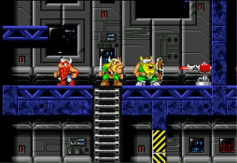
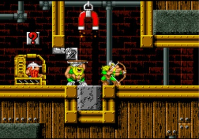
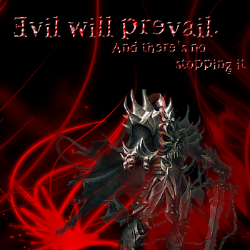
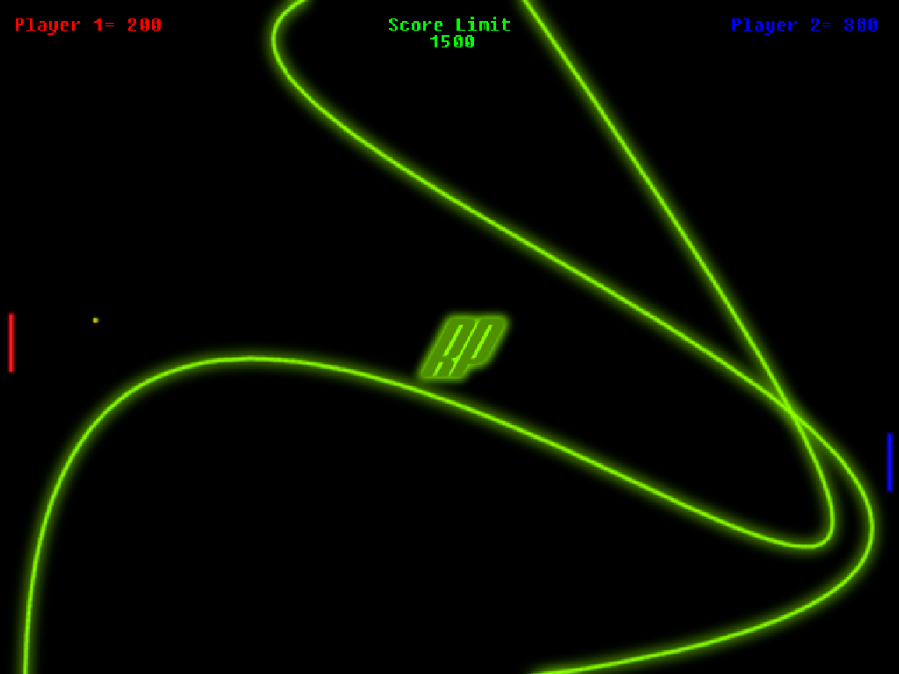
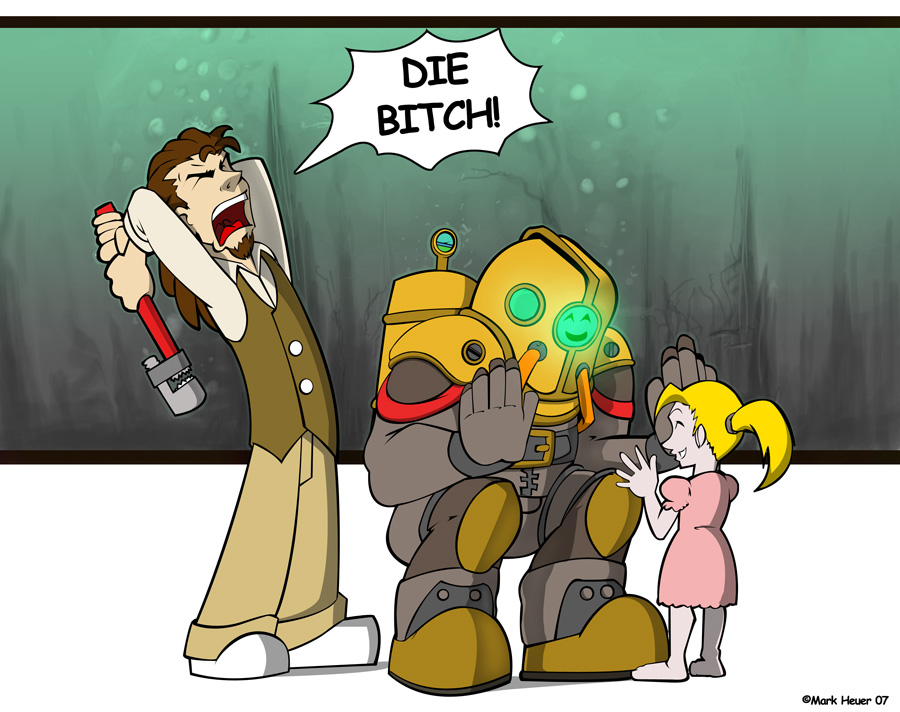
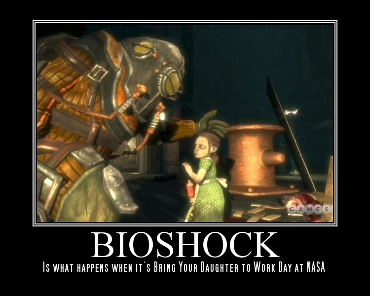

Masked by a shadow in the back alley of the street passing the unaware beggars. Alas! The door of the mansion. Out comes the lockpick and click goes the lock. In the halls he crept til reaching the final door. Upon an alter lay his bounty. Greed and lust he grabs it. Then, the alarm.
The Octopod Snipersquad
I'm gifted.
The next person to respond is smuggling WMDs in their pants.
The next person to respond is smuggling WMDs in their pants.
Once a rabbit stole pony wind! It decided to pony ponies from pants without ponying toast into ponies. flamingos and PONY/sheep-hybrids danced mercilessly emoish. Pique Pony licked the moderator's banhammer and Q ate GLAYYYSHURZ made pony tantalize the quasiber paper. 'CHICKEN ROTFLOLBBQZORZ' said, "Ponies suck!" sarcastically to ponies amongst glaciers The EVIL froggy Floated Toward Ponies,fishes,and incredibly-long-hyphenated-purple-dishwashing-monkeys-with-laser-beams [and a] super-giraffe decided badgerfull-superdeliciousweenies
Banned for being Anonymous
Paphauganization=The state of no soul
Rated all of Bunniesandsheep's latest maps
http://numa.notdot.net/map/84777
http://numa.notdot.net/map/84242
http://numa.notdot.net/map/84233
http://numa.notdot.net/map/84226
Please check out some of my other maps.
http://numa.notdot.net/map/84777
http://numa.notdot.net/map/84242
http://numa.notdot.net/map/84233
http://numa.notdot.net/map/84226
Please check out some of my other maps.
 Wrong.
Wrong.Mr__X?
OK. I got TES4 Oblivion not too long ago and am addicted to this game like you wouldn't believe. This message board is kinda a discussion board. if anyone has something about the game they want to say, please say it. Things like custom classes and quest trouble and so on...(Oh, and anyone who can tell me how to take screen shots that would be greatly appreciated)
PLEASE DO NOT POST USER DIRECTED INSULTS AND ANYTHING NOT RELATED TO THIS TOPIC!
(Other Elder Scrolls games count as on topic)
PLEASE DO NOT POST USER DIRECTED INSULTS AND ANYTHING NOT RELATED TO THIS TOPIC!
(Other Elder Scrolls games count as on topic)
I know I know. I just don't want this forum clogged with insults. I started it so people could talk about the game. Not complain about it. Besides i hear enough complaining during the day. 
Rated all of kkstrong0's
http://numa.notdot.net/map/84239
http://numa.notdot.net/map/85088
http://numa.notdot.net/map/86250
http://numa.notdot.net/map/84232
http://numa.notdot.net/map/84207
Please check out my other maps
http://numa.notdot.net/browse?sort=created...hor=Sniperwhere
http://numa.notdot.net/map/84239
http://numa.notdot.net/map/85088
http://numa.notdot.net/map/86250
http://numa.notdot.net/map/84232
http://numa.notdot.net/map/84207
Please check out my other maps
http://numa.notdot.net/browse?sort=created...hor=Sniperwhere
The boom of the earthless thunder, the roar of the lava's fire. Pounding! pounding in the deep red ground. The drum beat of death! The gates are open; the creatures flood out! Two more! Suddenly, they close. Then again another gate opens! Bigger! It crawls out! a boom. Then all is silent. All is lost. 
http://numa.notdot.net/map/86923
http://numa.notdot.net/map/86739
http://numa.notdot.net/map/85107
http://numa.notdot.net/map/80100
http://numa.notdot.net/map/79253
rated sniperwhere's
if you want kkstrong0 and i to rate all your maps, in return for you rating ours, then just say
Well you seem to be the only ones posting maps.
Try Mr__X's Maps
http://numa.notdot.net/browse?category=&au...r=desc&count=10
Okay. You win. If you have a complaint about the game, say it.
That is a problem. I keep my settings on medium and when i play the game i always turn of the grass. Grass creates serious laggy.(to turn of the grass just press "`" and type in "tg") Oh and I had just figured out the screenshot thing. You have to edit the oblivion.ini file and change the allowscreenshots part to 1. else it wont work. not even pasting it in paint. i've tried.
http://planetelderscrolls.gamespy.com/
http://www.elderscrolls.com/home/home.htm
http://planetelderscrolls.gamespy.com/
http://www.elderscrolls.com/home/home.htm
Rated a few older maps.
http://numa.notdot.net/map/84227
http://numa.notdot.net/map/84778
http://numa.notdot.net/map/85076
http://numa.notdot.net/map/84227
http://numa.notdot.net/map/84778
http://numa.notdot.net/map/85076
(Pulls out staff and induses armagedon)
(Screams like little girl and runs away crying) 
Banned for being an internet Ad.
Otherside - Red Hot Chili Peppers 
...you run out of time on the first level.
...you stand in front of trap doors saying "Open sesame!"
...you brag to all your friends and post forums on every single website on the face of the planet that you figured out how to place objects in Ned.
...you waste your time giving everyone 0/5 when you don't even know how to jump.
...you give clifty a bad rating.
...you stand in front of trap doors saying "Open sesame!"
...you brag to all your friends and post forums on every single website on the face of the planet that you figured out how to place objects in Ned.
...you waste your time giving everyone 0/5 when you don't even know how to jump.
...you give clifty a bad rating.
Rated 29403, skyline356 and one of seven_two's maps
http://numa.notdot.net/map/86992
http://numa.notdot.net/map/86991
http://numa.notdot.net/map/87345
Ps. hadn't posted maps in a while because the flash drive that holds N and the levels went through the wash. lost everything.
http://numa.notdot.net/map/86992
http://numa.notdot.net/map/86991
http://numa.notdot.net/map/87345
Ps. hadn't posted maps in a while because the flash drive that holds N and the levels went through the wash. lost everything.
This may see akward but can anyone tell me where to get the first two Elder Scrolls games? 
Wrong.
Smort?
Smort?
I say maybe because it isn't fair to be judged badly just because you are new. But if your one who does things like goes on forums to brag about something simple and unimpressive then there is a problem.
Alright, thanks. I just figured that if i like the 3rd and 4th so much I should at least try th first two.
*Hears "Numa,Numa" song and wonders about the irony of being on the NUMA site at same time. Then smashes radio with a Hammer!
*Also drags beginner2's body away and disposes of it.*
*Also drags beginner2's body away and disposes of it.*
Really fun. but i cant get more than two or three rounds without getting the bazooka. I even got the bazooka on the first round one time.
my reaction at time= 
my reaction at time=
Big enough to be an actual game. 
A bit of an odd request but, does anyone know where i can find a mod where I can write on parchment or a book because you can't pick up parchment after you drop it. I'm a master of alchemy and having one hell of a time trying to remember what ingredients I need for what potion.
Shooting plasma out of the paddle kinda defeats the purpose. Pretty fun though.
Line rider rocks either way. 
I'm using it right now.
The next poster will have an active chainsaw in their pants.
The next poster will have an active chainsaw in their pants.
I have many times and keep losing them. Besides, by the time I get the paper I forget what the ingredients are. It also gives alchemy a more realistic fealing.

exuberance?
I choose the GLLAAAYYYYYYYSSSHHHHEEERRR.
GLLAAYYYSHHHHUUURRR!!!
User was banned for this post.
User was banned for this post.
GLLAAYYYSHHHHUUURRR!!! Give me a reason I sould be banned.
http://metanet.2.forumer.com/index.php?showtopic=17176
User was banned for this post.
http://metanet.2.forumer.com/index.php?showtopic=17176
User was banned for this post.
Wrong-o 
Hmm... smort?
Hmm... smort?
*Sets book on fire and and eats a sandwich*
American Idiot- Green Day.
How did that get there!?
The next poster has a pie in thier pants
The next poster has a pie in thier pants
In response to JeCa
Ignore the image.
Spoiler
Okay, it's called the skeleton key and you get it at the shrine of Nocturnal. To get to the shrine head east out of Leyawiin and follow the road. Remember to look at the compass. After a short while you'll see a marker for the shrine on the compass. It's actually right off the side of the road but concealed by trees and bushes so you won't find it if your not paying attention. It sounds to easy at first but you have to be level 10 to do the quest.Ignore the image.
Badgers?! I don't need no stinkin' badgers!
The next person has Micheal Jackson in their pants
The next person has Micheal Jackson in their pants
*Smacks apg for breaking the flow then continues eating burnt sandwich*
It doesn't slow mine down unless I'm using it on Vista. Then it lags every 2 seconds.
Well, I feel that people who get violent when playing violent video games are violent in general. I even read an artical in the news paper that games might not be the cause of the violence but just awaken whats already there. I mean, what game can make a person violent? It doesn't change our genetic code or anything. It's already there.
*Ponders how burnt sandwich made it down 5 posts...er... 6. *
*Gets mutilated by Chuck Norris for attempting (and failing) roundhouse kick*
**Gets mutilated by Chuck Norris for attempting (and failing) roundhouse kick*
AHHH! Smokey! How did you get in their?!
The next poster has crop circles in their pants.
The next poster has crop circles in their pants.
Spoonerwhere
I agree with 3v!1 about the wood elf. I gotta try that myself.
Oh and is it just me or does the emperor seem a little older every time i start a new game.(I got a lot of files. )
Oh and is it just me or does the emperor seem a little older every time i start a new game.(I got a lot of files.
)It seems that the Wii has been causing problems. People get to into the game and throwing and flinging around the controller out of frusturation. My friend broke his wrist while fishing in Zelda because it got away and he flung the controller at the ground. Hit his wrist on the table and shattered it.
Why is Bush continuing this war? We don't need it, they don't need it, so who benefits? Is this war a good idea? What are your opinions?

 NOPE!
NOPE!Qix
Don't explain Atilla.
Also, movie wasn't accurate. I know my history.
Also, movie wasn't accurate. I know my history.
It has enough enemies as it is. No need for more. Interesting idea though.
Now I've REALLY gotta get a 360.
I hated 300.
Only good scene was the sex scene.
Pervert.
Can you make me a sig thats similar to the cityscape one in first post? Thanks.
I agree with you. it's just that he keeps sending over troops and what does he do with them. NOTHING! He keeps them their until we need more. if he could at least think of what we have to do then maybe we won't need to keep this up. Besides if we need oil we should just buy it. we're not doing a whole lot else with it.
-They should make v1.5 compatible with vista. Because right now it stops every two seconds and really screws me up when trying to play.
-Make all the enemies activate at once instead of taking turns.
-Allow user maps to be added to the game without needing to leave Ned.
-Make all the enemies activate at once instead of taking turns.
-Allow user maps to be added to the game without needing to leave Ned.
I like your point epigone. There are alot of other problems that we need to deal with here than in another country on the other side of the earth. What about racism, gang violence, education, home safety. When has he ever addressed any of that. He's completely focused on what he wants and doesn't seem to care about anything else.
And our nation really doesn't need to baby the rest of the world. That's what they don't want us to do. We should just let them do what they seem is fit for their country. If Bush could just realize that he's only the president of America and not king of the world then maybe we'd be a little better off.
And our nation really doesn't need to baby the rest of the world. That's what they don't want us to do. We should just let them do what they seem is fit for their country. If Bush could just realize that he's only the president of America and not king of the world then maybe we'd be a little better off.
Wrong.
Spoon?
Spoon?
Only if it gets me a girl friend.
Will you mourn my burnt sandwich with me?
Will you mourn my burnt sandwich with me?
Banned for scooping cereal with a nightmarishly evil grin. 
*Sniff* I'M SO SORRY!!! *Cries out loud and pounds fists on desk*
Will you go to therapy with me?
Will you go to therapy with me?
Rated epigones and limers.
(dont post the same map twice epigone.)
http://numa.notdot.net/map/88351
http://numa.notdot.net/map/88356
Please rate my other maps.
(dont post the same map twice epigone.)
http://numa.notdot.net/map/88351
http://numa.notdot.net/map/88356
Please rate my other maps.
Because we can only rate once making it so we have to go further back to find a map to rate so we can post ours. (Besides I think it's illegal.)
RAVENCLAW?
It depends on how they act. If they try to learn the ways of the community and act mature... let their newb-status slide for a while.
Conversely, if they are immature little weiners, 'Cry havoc and let slip the dogs of war!'
Awkward way of putting it, but true.
"Conversely, if they are immature little weiners, 'Cry havoc and let slip the dogs of war!'" LOL
I played WAAAAAAAY better as the pink ninja, but I say they should have a GLAYYYSHURRR ninja. (By the way, that's not a reused joke, it's a running joke, which we can, and should repeat...)
I played better as the pink ninja to. It's just after a while the whole pink think gets on my nerve.

I do think it is unfair to get a warning for posting a word. It seems like an abuse of power. We didn't break any forum rules so technically we don't deserve to get warned. Besides when I found out it was glacier ban day, I had already posted the word. Didn't even know it till afterwards. It just seemed like an excuss to warn/ban/whatever people.
Qix?
Snipoonerwhere 
Now that was cheap.
usaswim?
usaswim?

The next poster will have a barbie in their pants.
*Comes out of the dark and pays Chuck Norris for fooling spoon. Then laughs freakishly and disappears into thin air* 
HELL NO!!!!!!!!! 
Would you help me obliterate kai for that last post... uh... with me?
Would you help me obliterate kai for that last post... uh... with me?
Banned for being the only person i can ban. and for thinking you make a deal with Chuck Norris.
(I made that deal to. I am sooo screwed)
(I made that deal to. I am sooo screwed)
It's like what samrat said earlier. Bush wants oil and will use the terrorist excuse to take Iraqi oil. Sure it may have started in Afghanistan but do you really think Bush wants to stop the terrorists? He's bullying the smaller countries because he knows they can't fight back. If he really wanted to stop terrorism then we would have to have troops everywhere.
One reason why they attacked us, though, is that it's quite obvious that we have to much power and they were getting tired of our narcisistic attitude towards the rest of the world. Some of the things that the first Bush said towards them were insults directed towards that country. Until that point, Afghanistan and Iraq were our allies. It was us who brought Osama to power. So in a way, were partly to blame.
One reason why they attacked us, though, is that it's quite obvious that we have to much power and they were getting tired of our narcisistic attitude towards the rest of the world. Some of the things that the first Bush said towards them were insults directed towards that country. Until that point, Afghanistan and Iraq were our allies. It was us who brought Osama to power. So in a way, were partly to blame.
yepI hated 300.Pervert.
Only good scene was the sex scene.
Personally I think sex scenes in movies are a complete waste of time and 1 should be the limit.
boring
have you seen snails go at it? they're more interesting...
Uhh... snails?... I'm not sure I want to go there.
Let's just stick with the topic. The images of what you said are gonna give me nightmares.
*Reappears and files lawsuit against Chuck Norris then dies of unknown causes.*
*I will be back though. BECAUSE YOU CAN'T DESTROY ME!*
*I will be back though. BECAUSE YOU CAN'T DESTROY ME!*
Sure. (didn't we already do that?)
Will you stop beating me at everything I do.. with me?
Will you stop beating me at everything I do.. with me?
Banned for being mean. And pointing out my errors.
Katana. No doubt.
Rather cartoony(I'm one to speak) 7.9/10
Huh?I hated 300.Pervert.
Only good scene was the sex scene.
You must be twelve, at the oldest. Or an ultra-ultra-mega-conservative. There's always that.
Interest in sex is a natural part of growing up. You'll get there one day, too. In the meantime, don't treat people who are interested as freaks. That's not fair to them at all.
Okay look, I was just joking around. BTW, I'm not twelve, I'm sixteen. I didn't mark him as a freak. Or anybody else for that matter. And I sure as hell don't have anything against people who are interested.
 Jeez.
Jeez.High school is getting to me.
Forgive me if my "Vocab" is a little off.
PS: Wow definition and everything.
Forgive me if my "Vocab" is a little off.
PS: Wow definition and everything.
*ponders mysteries of life, resulting in: *
*head explodes*
**head explodes*
I'm probably not gonna get a PSP for a while. So many new systems to choose from that my head might explode. They should slow down a bit and let some of us catch up.
It's an okay song, but not quite the kind I'd listen to regularly.
*FWOOOMM!!* AAAAAAAAAAAAAAAHHHHHHHHHHH!!!!!!!!!
The next poster will have Freddy Cruger in their pants.
The next poster will have Freddy Cruger in their pants.
*Comes back from the dead and sits down and plays video games for seven hours.
wrong.
Romaniac.
Romaniac.
Rated all maps in last three posts.
http://numa.notdot.net/map/84207
http://numa.notdot.net/map/84226
http://numa.notdot.net/map/84176
http://numa.notdot.net/map/84229
http://numa.notdot.net/map/84777
http://numa.notdot.net/map/86250
http://numa.notdot.net/map/86253
http://numa.notdot.net/map/84232
http://numa.notdot.net/map/84239
http://numa.notdot.net/map/84207
http://numa.notdot.net/map/84226
http://numa.notdot.net/map/84176
http://numa.notdot.net/map/84229
http://numa.notdot.net/map/84777
http://numa.notdot.net/map/86250
http://numa.notdot.net/map/86253
http://numa.notdot.net/map/84232
http://numa.notdot.net/map/84239
Sniporgerwhere
I think that you are who you are. If you are homosexual then no one has the right to make fun of you about something you did not choose. some people need to realize that there not different than us. the ones who make fun of these people and hate them are the ones that have the problem. The next time anyone laughs at someone for being gay, just think, "What if they feel the same way about me?"
We don't choose the way we are, it chooses us.
We don't choose the way we are, it chooses us.
I have a Vista and N does NOT run on it. I was just wondering, do they have a version of N for the Vista? I'd really appreciate it.
The point of this game is to come up with an extremely insane reason how the previous poster got killed.
It's likely the flash projector that isn't working. N should run fine, provided the projector is working. Make sure you have the latest version of Flash.
Is there anyway to fix this? I don't have internet on my vista, so I use a different computer. If anyone can figure out how to change this please tell me.
Well it will run, it's just that every two seconds it stops working for a few seconds. And if I press anything it runs even worse. I'm using marcromedia flashplayer and can't change this.
usaswim?
Snipstickwhere
Tried to sell popcorn to Chuck Norris. Body never found.
Granted, but noone notices.
I wish I could play basketball.
I wish I could play basketball.
*Eats FishStik for talking. Faints after exceeding 7 hours of game playing by 12 days. wakes up and continues for another 5 days.*
*Joins Agent 001/7 in eatting caramel apple pie.*
I guess I just have to use the family computer for N.(we customized the hell out of that computer.)
Because No matter what I do I can't get N to work.
Because No matter what I do I can't get N to work.
You died by falling off a cliff, getting your pant leg caught an the fin of a shark, being dragged over a coral reef, releasing leg in large group of jelly fish, get hit by a boat and washed up on shore where you finally choke on a sand crab.
Sgt. Snipetarts
Rated any of Jashwapiano's I didn't already rate.
http://numa.notdot.net/map/88356
http://numa.notdot.net/map/88351
http://numa.notdot.net/map/87345
http://numa.notdot.net/map/86940 (WARNING: Alot of gold)
http://numa.notdot.net/map/85088
http://numa.notdot.net/map/85076
http://numa.notdot.net/map/88356
http://numa.notdot.net/map/88351
http://numa.notdot.net/map/87345
http://numa.notdot.net/map/86940 (WARNING: Alot of gold)
http://numa.notdot.net/map/85088
http://numa.notdot.net/map/85076
From what iv'e noticed, It seems like each flavor is better and easier to use in later levels.
One thing that really bothers me more than anything is people who spend most of thier day bagging on homosexuals when they never did anything to anyone to deserve this. It's starting to become almost like racism in that: every time you mess up they call you gay; when ever someone prefers to hang out with male friends instead of female friends they call you gay; ects.. And alot of the people who do this think their better. To me those people are even lower than any of us.
Epigonewhere?
*camps out on an EISHBURRGGHH!!!*
Everyone is expecting Clifty Huh?
Well then, Clifty
Well then, Clifty
OH NO! Not again *FFFWOOOOOOOOOOOOOOOMMM!* AHHHHHHHHH!!!
The next poster will have Donnie Darko in their pants.
The next poster will have Donnie Darko in their pants.
A while back, my brother showed me this strange video with nothing but a black screen and a voice in the background going, "Apple juice! Apple Juice! apple juice. I like apple juice." Where can I find this.
You could try right clicking on the N icon, properties, compatability, run this program in compatability mode for: Windows XP SP2 or lower.
It works fine for me.
I tried that it didn't work. Just had the same responce.
ps. Like your avatar.
Oh, crap! Sorry, just rated. Both.
God of War 2 is a really fun game and it kind of strikes me as a cross between Soul Reaver and Devil May Cry. What do you think?
Granted, but then you drop it on you're toes.
I wish I had a girl friend.
I wish I had a girl friend.
You died after everyone you insulted Kicks your a**.
*Makes apple pie.*
Qix
7/10. Nice car.
No. Anyone who needs to cheat at N should not be playing it.
Sorry didn't realize what I was supposed to do.
Oh, and I don't have a picture of me on my computer.
Oh, and I don't have a picture of me on my computer.
@asoccer98: i wouldghosts. that would eb great for HS/PB (depends on skill
@sniperwhere: umm. open notepad before you exit NEd? paste data there? exit NEd, go to userlevels?
UHHH. I know that. I meant a more convinient way of doing that. An in-game save option.(My computer lags with notepad and N open at the same time.
I don't really care. If there are mods out there then the people who want them can get them. I'm fine with N the way it is. 
*Grabs enlightenment, scratches butt with it, burps, drops enlightenment, and leaves without saying a word.*
It isn't hard but it isn't easy.
Clifty.
Thanks.
Now everyone who's seen this video knows what I look like.(The guy with the beenie seen loading stapple gun at start.)
Now everyone who's seen this video knows what I look like.(The guy with the beenie seen loading stapple gun at start.)
Gets a keyboard.
Inserts bomb.
Inserts bomb.
*Wabba!*
I thought I told you to call me first!
(Donnie Darko is an emo kid from a movie called Donnie Darko{go figure}. It's a very dark film where he occasionaly goes into this trance and starts doing things like shooting his best friend and burning down his girlfriends house.)
The next poster has an oompa loompa in their pants.
(Donnie Darko is an emo kid from a movie called Donnie Darko{go figure}. It's a very dark film where he occasionaly goes into this trance and starts doing things like shooting his best friend and burning down his girlfriends house.)
The next poster has an oompa loompa in their pants.
Granted, but then Einstein and the laws of physics kick your A**
I wish I had muscle.
I wish I had muscle.
Agent 001/7
Gets an EISHHHBUUURRGG!!!
*Inserts statement*
*Inserts statement*
And on the 12th day god created N.
Gets the end of "Kalifornia"
Inserts self.
Inserts self.
yup.
epigone
epigone
on the 44th day, God created Video games; thus leading us into an existance of no life.
This video still stuns the heck out of me
http://youtube.com/watch?v=MrLRBtrYpYM
Now for some funny stuff.
http://youtube.com/watch?v=Vlt7DLH_5HE
http://youtube.com/watch?v=6rawecxCEq0 (Made by my friend)
http://youtube.com/watch?v=1JNAa-hyN3Q (Just plain wierd)
http://youtube.com/watch?v=MrLRBtrYpYM
Now for some funny stuff.
http://youtube.com/watch?v=Vlt7DLH_5HE
http://youtube.com/watch?v=6rawecxCEq0 (Made by my friend)
http://youtube.com/watch?v=1JNAa-hyN3Q (Just plain wierd)
Well it's good that you're recomiting your self to it.
Yes. They should have more drones for the next version.
And N+ and N2? They've been busy.
And N+ and N2? They've been busy.
Because I've been wanting to show this to my friend. Is that so bad?
Besides it's funnier than it sounds.
Besides it's funnier than it sounds.
Well, yeah. I welcome and respect him too. it's just when they come on the forums and start pushing around members that have been on longer and acting like they know everything when they're just bothering people then there's something to be said. If they just act cool and don't over do anything then to me, they're not a noob or newb; they're a respectable fellow member and nothing less.
Oh, and superguh007, welcome.
Oh, and superguh007, welcome.
I would say that it's a good way to learn action script
Well, if you put it that way, then yeah.
Died of a heart attack at the sight of George Bush becoming dictator of America. And because of that thirty pounds of nachos you consumed in three minutes.
no.
dejablue?
dejablue?
Gosh!
The next poster will have their hand in their pants.
The next poster will have their hand in their pants.
Ok, I can't read/speak this for my life. PLEASE HELP!!!!!!
Building on what the others have said, the cheat website probably won't even accept it. If they do, the viewers won't appreciate it. The knowledge of the secrets doesn't assist them in completing the game in any way.It could. It very well could. Motivation can be a strong force.
Edit: Also, I'll admit to reading on the secrets already. It doesn't spoil my fun at all *shrug*. I'm not sure why 99% of this community is so die-hard purist in keeping N the "pure" game where all secrets are tabooed and where no new features are implemented, just tweaks on the old things. I think it's time for N to evolve. (Personally, I'm a little disappointed with the secrets)
Double Edit: And wth! Who took the secrets out of the wikipedia articleEverything's fair game there.
Yes it should evolve but do it in a different version. If we change around an existing version it spoils the game. Besides some people would like a game that hasn't been messed with and cheated on for once.
I must say, after I downloaded this, I've gotten better at N.
LoL! I saw my friend ace that song on hard.
and on the 52nd day, God created high school, thus leading to information forgoten over the weekend and mountains of homework that never get done.
Nope.
Mr__X.
Mr__X.
I'm not sure if I can grant that. Let alone corrupt it.
I wish I could have my burnt sandwich back.
I wish I could have my burnt sandwich back.
You died because your avatar attacked you.
It's a little stuffy in your pants and... wait, what is that? OH MY GOD! IT'S TRYING TO KILL ME!
The next poster will have a man hack in their pants.
The next poster will have a man hack in their pants.
Yes. Good Idea, then the highscores would have so many cheated runs on the list
Some of those high scores have already been achieved by cheating.
Granted, but in exchange for your own life. MWUAHAHAHAHAHAHAHAHAHAHAHAHAHAHAHA!!!!
Granted, but in exchange for your own life. MWUAHAHAHAHAHAHAHAHAHAHAHAHAHAHAHA!!!!
*Ahem*
I wish I wasn't failing 3 classes.
*Ahem*
I wish I wasn't failing 3 classes.
Still doesn't work.
Yes. To me that would be more conviniant when transfering data from one computer to another. Instead of that whole locating the .sol file.
Welcome to the forums, tincanbilly.
And holly crap on completing that map pack. I'm still working on it.
And holly crap on completing that map pack. I'm still working on it.
And on the 54th day, God created hangovers, and saw that it wasn't good.
ignore this.
Granted, but it really turns out to be basil. You will now die from basil poisoning.
(Cortney get my gun.)
I wish more people have seen the forehead shavecut video.
(Cortney get my gun.)
I wish more people have seen the forehead shavecut video.
AAH! I'm allergic to cats!
The next poster will have a fork in their pants.
The next poster will have a fork in their pants.
*Steals stolen .sol file from spoon, completes N with it, returns it to Mr__X, and eats a burnt sandwich.
And on the 56 day, God created my burnt sandwich.
Oh, I see you translated it.
Wait, he just called you a sucker! GET HIM!
*Ahem*
Wait, he just called you a sucker! GET HIM!
*Ahem*
Cheers, nice to know I'm welcome. Funny you say about me completing the map pack as i have only ever completed one column in the main game.
Didn't mean to sound like I was saying you weren't that good. It's just I downloaded it a month ago and am still working on it.
Can't get it to upload the image.
Your the best Rocket! I'm now jealous of my own sig. Thanks a ten billion.
Thanks a ten billion.Granted, but now you want to leave to.
And on the 66th day, God created Rocket_Thumped. And the world was in peace. And he saw that it was GOOD.
Gives Mr__X a Backed up .sol file and then gives Spoon a .soiled file that can't be deleted.
Granted, but they get hungry and eat you.
I wish I didn't screw up the other post.
I wish I didn't screw up the other post.
Pretty good. 7/10.
Heck Yeah!
ps. I noticed your avatar and sig were of Kratos. Right on.
ps. I noticed your avatar and sig were of Kratos. Right on.
No. I find it quite a bore.
Seven sylables! Ha! First try!
Seven sylables! Ha! First try!
For what is done it is awesome. It's shorter when you hold down left, though. Please complete it.
Pretty Fun.
Yeah. Gold does have uses. It doesn't just lag the game you know.
But about the 0.349 seconds thing, that really sucks.
But about the 0.349 seconds thing, that really sucks.
greetings. Welcome to the forums. Where really friendly here.
Mount Doom. I tried MTI.
Hunting for Witches. No doubt.
Thats really noble of you apg. I respect that.
Thats really noble of you apg. I respect that.
Yes. Exactly.
I can't seem to hide part of my sig with spoiler thing. Someone pointed this out in the rate the sig above you game. Thanks for the help.
It is fun. It is much more than it looks. It's got a good fighting system and makes you think to make up for the mind rotting violence. Although the third person thing can be a little annoying. And it's also good for people like me who know their mythology.For every single PS2 owner here: If you do not buy this game or the original, there is something wrong with you.What if your parents don't want you playing God of War? They wouldn't buy either one for me.
God of War 2 looks really fun, though.
If your parents don't want you to buy it, just tell them that it isn't as bad as it sounds. Besides the bodies disappear after a little while and the blood isn't to gory. It shows you the more forgoten creatures of mythology and stays true to their powers. Although Kratos is kinda a turd. That guy can't keep his temper under control for his life. Literally.
I like getting the gold. It makes the level more challenging to see if you can get it all. (Unless the level has way to much or to little gold thats easy to get.)
Besides, with alot of time, thats one less thing to worry about.
Besides, with alot of time, thats one less thing to worry about.
I think I prefer having it stored under 'Application Data'. It's very easy to find and back up.
If you had everything stored under the one folder, what would happen if you had multiple versions of N? I have a separate folder for each level pack I download. How would that work?
Hmmm. Good point. I didn't think of that. still it's a good point if you could get around that.
1- No bugs (duh...)no bugs? wtf, bugs rule i say there should be a very secret one that will take us n players ages to find out but in the end will be super kool
2- Faster loading? is that possible?
3- Not remembering nothing now.
That'd be fun.
One thing we need to consider is:
With the way gays are treated, why would anyone choose a lifestyle of being hated and rejected. It just doesn't fit being a choice. Only rarely may it be a choice. But most of the time it isn't. People have to stop hating.
With the way gays are treated, why would anyone choose a lifestyle of being hated and rejected. It just doesn't fit being a choice. Only rarely may it be a choice. But most of the time it isn't. People have to stop hating.
Happy birthday Sgt. Poptarts. Cheers.
(I'll see if I can fit a box of poptarts through the server.)
(I'll see if I can fit a box of poptarts through the server.)
XP. It has never let me down.
I was so disappointed with Vista. 1/5 no doubt.
I was so disappointed with Vista. 1/5 no doubt.
hell they call games murder simulators...Haha, yeah, and DDR is a "dance simulator," right?
I still can't get over the "trained" thing.
"I wanted to be a ballet dancer, so I trained on DDR Max."
"Many emerging rock icons today trained on Guitar Hero."
Hehe. Yeah like real guitar is anything like guitar hero. No wonder so many bands suck lately. Hahaha.
8/10
Needs more imagery.
Needs more imagery.
Colorful.14/15.
Didn't work.
Ah, I see. You just have to have a spoiler around a spoiler.
oops. the post this was responding to has been removed.
Hmm. You don't need two spoiler tags.
One tag:Two tags:Spoiler
Male colours? I wasn't aware that they reproduced sexually.What the hell? I.. but how.. What the hell?"And yes, the twitching smilie is my favorite"...No, wait, you do. I think the quotes mess it up.Spoiler
Spoiler
Male colours? I wasn't aware that they reproduced sexually.What the hell? I.. but how.. What the hell?"And yes, the twitching smilie is my favorite"
yeah. Because before it was hiding absolutely nothing.
In some of the previous versions, wasn't it possible to choose a direction (left/right) for the floorguards? Maybe it's a remnant of that, or reserved for the wallguards in 1.5.
Wall guards in 1.5? I would've thought something like that would have made it into 1.4. Hm...
It would remove the challenge from alot of levels and that is not good.
Metanet; thanks for creating N, the best 2-D game in the world; thanks for creating Ned, the best and easiest to use level editor in the world; and thanks for the Metanet forums, a community thats like a family to me. Thank you Metanet, for everything. 
Jeez I can't wait. Is there a release date?
It's an absolutely terrible name.Hahaha, agreed. Plus, versatility in enjoying music is a good thing (though I also think that having favorites is good).
Let your love for the White Stripes help you in finding other music that turns you on!
Cheers.
It's dark. The noise comes from afar. He ran, covered in sweat. He shreiked as another cry came from his right. Then his left. He ran faster, panting something horrible. They closed in on him and suddenly all fell silent. They found him. they just do not know it yet.
Help! it won't upload!
Died after I sniped you for using l33t.
Nice image. Simple. Neat 9/10
Died after I went on a rampage for so much L33TNESS.
ps. I know how to read some l33t. Don't you call me a noob.(You got a kick out of that with all the Ha ha's and Lol and the occasional ROFL didn't you)
ps. I know how to read some l33t. Don't you call me a noob.(You got a kick out of that with all the Ha ha's and Lol and the occasional ROFL didn't you)
*ponders on what begginer2 said.*
You have no idea... N 1.4 was released on May 2005. That's two years ago. We've been waiting for something new since then...
You need to get distracted with something else, or you'll end up eating your own head...
It's a little late for that.(Mmm.. my head tastes so good. want some?)
Woo! I made it. Sorry nevermore, no video footage. That would have been another sixty dollars, on top of the already pricey $200 that I had to pay.
I definitely recommend that everyone do it. It's absolutely incredible.
I'd like to. Just gotta get over my fear of airplanes first.
Yeah, it might be nice, but it simply isn't possible. The only solution I could see would be to have a PHP page running on the user's computer, since PHP can modify files, but it would be too easily hacked. It's fine the way it is now.
Well if they could use a different engine that allows the makers to specify the file path, then it might be better. But unless that happens, we gotta hunt down the .sol file ourselves.
Well money couldn't be that much of a problem because the first game is very inexpensive and the second isn't that bad in pricing as well. Other than that I can't think of a reason why else they won't buy it.
Rated anything I didn't before.
http://numa.notdot.net/map/89583
http://numa.notdot.net/map/89414
http://numa.notdot.net/map/89351
http://numa.notdot.net/map/89583
http://numa.notdot.net/map/89414
http://numa.notdot.net/map/89351
Pretty nice.(she's hot) 8/10.
Day 69 is Gods private time. On to 70.
And on day 70, God created the morning after pill.
And on day 70, God created the morning after pill.
thanks for th nice welcome guys.
No problem. Always happy to make new friends.
ps. Try the 55 fiction section under off-topic. It's really fun.
Y'know, that's something that I really want to do, and I think everyone should. It's a great experience.
WOAH there! I know people who'd probably have a heart attack during take-off. Not EVERYONE should do it. But yeah, it would be a great experience if you can handle it.
The blue is starting to hypnotize me.
8.5/10. Rating raised.
8.5/10. Rating raised.
Here's my first history video ever made.(My first VIDEO ever made)
I'm Ryan Snyder.
http://youtube.com/watch?v=BYaP6Fz1XsE
I'm Ryan Snyder.
http://youtube.com/watch?v=BYaP6Fz1XsE
I like the graffiti like flow to it. 9/10
If you can tell me how to upload images, I have a real funny avatar I made when I was bored.
There's a little line beneath the place where you enter your post that says "File Attachments." Click "browse," then open the file, and post.
Yeah, about that, it just says that I can't upload this type of file. What am I doing wrong?
Happy Birthday to anyone I haven't wished it to yet.
...
baka
three letters
S
E
X
The game doesn't really focus on those things. And about the minigame Twistkill was talking about, you can't really find that unless you are looking for it.
And on the 73rd day, God created fire hoses to "attempt" to stop the burnination.
Here's that photo. Might not be as funny to some.

And as for your avatar player 03. 8/10.
I wanna jump on a drone!
ps. Thanks for the tip on image shack. Oh! and, the avatar was made by Rocket_Thumped and is a piece of my sig. Don't give R_T a bad score. IT'S A DISGRACE.
And as for your avatar player 03. 8/10.
I wanna jump on a drone!
ps. Thanks for the tip on image shack. Oh! and, the avatar was made by Rocket_Thumped and is a piece of my sig. Don't give R_T a bad score. IT'S A DISGRACE.
No.
Qix?
Qix?
Hey, you got it working after all! (Kind of, anyways.) Nice, sniperwhere.Yeah, but it took a while. I even found a use for that extra spoiler tag. To create a closable section for the text that used to be above the image that has now been moved inside the first spoiler tag.
Rated Cowgomoo, skyline356, and seven_two.
http://numa.notdot.net/map/84176
http://numa.notdot.net/map/84207
http://numa.notdot.net/map/84226
http://numa.notdot.net/map/84229
http://numa.notdot.net/map/84232
http://numa.notdot.net/map/84239
http://numa.notdot.net/map/84777
http://numa.notdot.net/map/89351
http://numa.notdot.net/map/84176
http://numa.notdot.net/map/84207
http://numa.notdot.net/map/84226
http://numa.notdot.net/map/84229
http://numa.notdot.net/map/84232
http://numa.notdot.net/map/84239
http://numa.notdot.net/map/84777
http://numa.notdot.net/map/89351
Nothing special.
No.
Usaswim
Usaswim
I love moving avatars. (Though it looks the same as before.)
8/10.
8/10.
I stand around and now I have a girl friend(not seriously )
If you press this button, then this statement is false. If you don't press the button, then the lie was true.
)If you press this button, then this statement is false. If you don't press the button, then the lie was true.
Just post your favorite riddles here and try to answer others if you want.
"If you lie to me, I will slay you with my sword. If you tell me the truth I will slay you with a spell.
What do you say?"
A)You will slay me with your sword.
B)You will slay me with a spell.
C)Don't kill me!
"If you lie to me, I will slay you with my sword. If you tell me the truth I will slay you with a spell.
What do you say?"
A)You will slay me with your sword.
B)You will slay me with a spell.
C)Don't kill me!
Yeah it was to big. I see the problem. (Bitmap and 2.25 MB)
s0y 1337n3ss!
4h4h4h4! 1 h4\/3n'7 5p33k3d t3h 1337 1n 4-3v3r!
7h47 ch4r7 i5 t3h bl4sf3m33. n0b'dy 5hu|d und3rs74nd u5!
0h y34h? 1 u|\|d3rs74|\|d y0u ju37 f1|\|3, Sy7h3. \/\/h3r3 |\|07 s7up1d. b3s1d3s, y0ur sp33k1|\|9 b4s1c |337.
If a=b and b=c what does d equal?d=Moo?
I have two bodies, joined in one, the more I stand still, the faster I run.
A)Siamese twins.
B)Hour Glass.
C)Faucet.
Th1s thr34d 1s t3h 00b3r st00p1d.
7h3|\| \/\/|-|y 4r3 \/\/3 s71|| sp33k1|\|9 |1k3 7|-|1s?
Both are quite easy for me--as TS said, it's all easy after a while.
I've played both. Mount Doom is easier.
@9|2 7|-|@7 7|-| 7|-||2@ 7|-| ߀|2- 7p. ߵ7 0 p|20@ߣ \/\/0|\|'7 |<|\|0\/\/ ߀@ 0 \/\/0|\|'7 ߀ @ߣ 70 |2@ 7|-|. 0|2 \/\/ 0? ...
! c4|\| |234|) !7.
Three Dr. Demento Cd's. That guy is funny as hell.
Wh w3r3 00|{1n9 7h1$ p 1n w1|{1p314 4nw4?
3|2... 1 |3|2|\|3|) 7|-|1s |{1|\||)4 6y |\/|y s3|f. 1 |)1|)|\|'7 |_00|{ 47 7|-|47 p493.
Random alright.
Ooh, nice. Kinda confusing-what is it, exactly? 8.5/10
it's the top right section of my sig.
yours is pretty nice. 9/10.
Doesn't he get dizzy?
My brother (who is 5 years older than me) keeps asking me how to get past certain parts that aren't that hard.
Him="How do you save the pegasis?"
Me="YOUR 21! IT'S NOT THAT HARD!"
I eventually told him to go on gamefaqs.
Him="How do you save the pegasis?"
Me="YOUR 21! IT'S NOT THAT HARD!"
I eventually told him to go on gamefaqs.
Pleeeease finish it. If you could get both paths to lead to the door on sorta the same path then it would be three times as awesome.
w00t! Old fashion Mario. 10/10
Doesn't anyone love me?
usaswim.
usaswim.
I love it. I think black and white is just so elegant.

Nice. I like it.
Linkin Park has really been slowing down. Not that they ever where fast at making albums. They only have three: Meteora, Hybrid Theaory, and the remix and I own them all.
They just released their fourth recently: Minutes to Midnight.
Aw dammit! I can't believed I missed that!
You could try using bounce blocks and retexuring over them a little with the doors and gold.
But so far, that thing is amazing.
But so far, that thing is amazing.
"Breath. Keep the rifle steady. This shot doesn't come everyday." He thought to himself as he watched his enemy through the scope of his .5 Springfield. KRAKKOWWW!! The target dops. Excited, the sniper jumps of the roof and runs over to the body and rolls it over. "No. No! My brother!" He yells. KRAKKOWWW!! Drops.
do you think that I could use gausses to scale it
That might work if you use them in an almost repetatitive "V" form. If done wrong it will most likely take the form of shading. (like "Afternoon Dragon")
right.
clifty.
clifty.
Crap. I was disappointed with it.
5/10.
Needs more imagery.
(spoiler tags save forum space. And given how annoying it can be to get them to work, you have to give credit to anyone who can. There is no spoiler option under the edit sig area.)
Needs more imagery.
(spoiler tags save forum space. And given how annoying it can be to get them to work, you have to give credit to anyone who can. There is no spoiler option under the edit sig area.)
I'm not gonna corrupt that one.
I wish I could go home.
I wish I could go home.
Not N2. Yet. They've gotta crank out v1.5 & Robotology 1st!
They've still been busy.
I use a program called Dark Basic. Much easier to use.
6391|\||\|3|2 2
fascinating person.
I want to go...
I want to go...
Any avatar with cactars is worthy of respect.
11/10.
11/10.
Some teleporters can be as picky as the people who rate your maps.
Okay.
Would you make a burnt sandwich with me.
Would you make a burnt sandwich with me.
Snipeldexae
Yes.
would you make a KRADDA with 10 different pathes and a little bit of everything else that makes a DDA good with me?
would you make a KRADDA with 10 different pathes and a little bit of everything else that makes a DDA good with me?
Banned for having a sig from the same artist as me.
Time?
By night they stalk,
By day they hide,
Those who've fought them,
Have all died,
And for those who have been bit,
Forever in darkness you shall sit.
By night they stalk,
By day they hide,
Those who've fought them,
Have all died,
And for those who have been bit,
Forever in darkness you shall sit.
Wait, how do you miss that? It's been the most advertised album of the year...They just released their fourth recently: Minutes to Midnight.Aw dammit! I can't believed I missed that!
I'm a cave dweller.
Banned for using an already taken excuse.
Greetings. Always happy to see a new face. (Or new user.)
Hope you enjoy your stay.
Hope you enjoy your stay.
um...thanks...
I meant that in a positive way. I really like the map.
I hated that level. Took to long to beat.
My advice would be to jump on the top end of the map and when the next thwump passes over, jump on top of that. It's really hard but thats how I beat it.
My advice would be to jump on the top end of the map and when the next thwump passes over, jump on top of that. It's really hard but thats how I beat it.
Yeah, I know, and thanks, but I'd also like some more constructive comments, like what needs to be improved, what's good, etc.I know what you mean. My first topic started off a disaster. With a little work this topic could get better.
Just dissapointed, because no one replied on my first topic.
One thing that I would say needs improving though is those thwumps at the start. Those kinda cause to much of a problem as there is not enough space between them and the ceiling. Other than that, the map is good.
I'm guessing what you're saying is that it's too...time consuming?Not really. The thwumps are just what killed me the most. More frusturating than time consuming. Don't change it or anything. Even if I do get annoyed with those thwumps, someone else might want them to stay.
Try posting it under the map-rating thread. (Read the rules first)
http://metanet.2.forumer.com/index.php?showtopic=4383
http://metanet.2.forumer.com/index.php?showtopic=4383
The main quest in Morrowind was far better than in Oblivion. The guilds were better, too.
I agree. Morrowind had a much more broad story to it. Plus all the stuff you get during it pretty much covers your need for magic items.
Have any of you bought the expansion pack to Oblivion? (Can't remember the name). Because I'm wondering what that's like too...
No but I'd like to.
Do you mean Knights of the Nine, or Shivering Isles? As, I have Shivering Isles....and nobody has answered my question...they just ignored it...like always..
Both, actually. I've got Morrowind and the two expansions for it. I might as well complete the Oblivion expansion series while I'm at it. Although I might need to pull my grades up first.
Nice.
47/50
47/50
Turns from ") into
into
into I press it, creating a paradox, causing the universe to explode.
If you don't press the button, I laugh. If you do, I ROFL!!
Similtaniously does and doesn't press the button causing yet another paradox. Why is the universe still here?
If you press the button you explode. if you don't you explode.
I like every aspect of N. The level editor. The levels. And so much more I just can't put into words.
Er... I no think? AHHHH! Fishes!
If you press this button, your finger will get stuck to it. If you don't, then your finger will get stuck up your nose the next time you decide to pick it.
If you press this button, your finger will get stuck to it. If you don't, then your finger will get stuck up your nose the next time you decide to pick it.
Joey.
Quote: Jakel, May 23, 2007 01:32 amTodd.
No.
Javier.
But more than anything else, Mare and Raigan are my reason for being here. I made a promise to Mare when I was first bestowed this mod spot, and I won't ever break that promise(again).
That is a very noble thing to say. Just for that, you have my respect. And to be so respectful and truthful to a friend is something I have not seen in a long time. I feel complete.
And on the 77th day, God took a vacation from all this creating business.
Still colorful.
8/10.
8/10.
I place a heavy paper weight (My old computer.) On top of it and then cover it with a purified molten titanium alloy.
If you release this button, then your gravity will reverse thus sending you through the sky light. If you don't press, it then all your N data; ALL of it; will be permanently deleted.
If you release this button, then your gravity will reverse thus sending you through the sky light. If you don't press, it then all your N data; ALL of it; will be permanently deleted.
How'd he know?
If you press this button, you will forget everything, if you don't then you will remember all the bad things in your life.
If you press this button, you will forget everything, if you don't then you will remember all the bad things in your life.
MY NAME IS NOT JAKE, JACK, OR ANYTHING THAT STARTS WITH "JA"!
...holy crap...
Wrong.
Okay then.
Peter.
Gets Cocaine
inserts Clifty DDA.
inserts Clifty DDA.
I've started working on this all thwump DDA and was wondering if it looked good so far and if I should complete it. See the attached file.
I like the artwork.
9/10.
9/10.
There are expansions to Morrowind!?! Sweeeeeeeeeeeeeeet...
Bloodmoon and Tribunal. They're both meant for high leveled players.
I'm guessing vampires.
Here's one I thought up real quick.
I am lighter than air, darker than light,
something that won't be found at night.
Borne from a star, one more near than far;
young minds are enthralled by me.
What am I?
A shadow.
A metal neither black nor red,
As heavy as mans golden greed,
What we do to stay ahead,
With friend or foe or stead.
Si.
Exuberence.
Exuberence.
7/10.
Er... what exactly is that?
Er... what exactly is that?
Si.Si with an accent over the i means yes, but si with no accent means if. Spanish class ftw.
No.
Qix.
I don't have a keyboard with an "I" that has an accent over it and no way to get it there. So don't get annoyed if it isn't right. Also I took a spanish class so I think I know the difference between "if" and "is".
Django.
One thing I like about Tribunal is the museum of artifacts. And trust me I can tell you where most of the artifacts in Morrowind are. I've nearly discovered all of Vvardenfell and have some really nice artifacts that I refuse to give to the museum.There are expansions to Morrowind!?! Sweeeeeeeeeeeeeeet...Don't bother with Bloodmoon. Bloodmoon is crap. Tribunal, on the other hand, is definitely worth playing.
No.
beginner2.
beginner2.
I made the shot. MWUHAHAHAHAHAHA!!
*Ahem*
Smort.
*Ahem*
Smort.
Gets eggnog.
Inserts some random guys credit card.
Inserts some random guys credit card.
#1
Best game in existance.
Best game in existance.
RPG, RTS, nd the occasional FPS.
Here's what I've gotten done so far. Tell me if it should be longer and I'll see what I can do.
6/10.
I can't tell what it is.
I can't tell what it is.
Nothing.
On my way to St. Ives,
Imet a man with seven wives.
Each wife had seven sacks.
Each sack had seven cats.
Each cat had seven kits.
How many are on their way to St. Ives?
One. You.
The towering ark,
Deep from the dark,
It echos ,cross the sky,
Its booming roar,
Its charge will soar,
Its touch may make you die.
Already rated epigone's before. Rated smorts.
http://numa.notdot.net/map/89911
http://numa.notdot.net/map/89351
http://numa.notdot.net/map/84777
http://numa.notdot.net/map/89911
http://numa.notdot.net/map/89351
http://numa.notdot.net/map/84777
Also, is there a way to make it so when you click on an image it opens up the spoiler?
*Looks in pants* Don't you DARE talk back to me.
the next poster has a hobbit in their pants.
the next poster has a hobbit in their pants.
Gets an extremely hyper kid that won't shut up. Ever.
inserts brain
inserts brain
and on the 203 day, God created memory loss so some people can make a new friend every day.
Bummer.
Just plain some one.
Well, it won't be the first.
the next poster has a burnt sandwich in their pants.
the next poster has a burnt sandwich in their pants.
The worst game I've played? That would have to be Silent Thunder. Lamus to the maximus(Just like the phrase I just said.)
*Sniff* He called me a noob. *Sniff*
OK fine, an uberance(or exuberance) some one.
OK fine, an uberance(or exuberance) some one.
Just post who your favorite user, forumer, ect. is.
Volcano?
wrong.
I can't unzip any downloads on my Vista anymore. Something went wrong and changed all zip files to internet explorer which causes it to crash when accessed. Now I have to download anything I need on the family XP, unzip it to my flash drive, and move it to my computer. Safe remove for flash drives don't always work either.
gets empty pie tin.
inserts Vista.
inserts Vista.
Whatever it is, GET IT OUT!!!!
the next poster lacks pants to have anything in.
the next poster lacks pants to have anything in.
Good and evil is a point of view. One person may do something that they think would be fine and someone else may complain about it because to them it's an act of evil. You can't solely base something on what it does. Anything categorized as evil may also be used for good and vise versa.
Also, they can't really cancel each other out unless there is an even amount of each in the same area.
Also, they can't really cancel each other out unless there is an even amount of each in the same area.
Philosophical jerk-off, at best. Your friend doesn't want to think about anything that really matters, but he wants to think something abstract and confusing(ly stupid) so he can tell himself he's cool and enlightened.
You know, there's always the possibility that he might have been in a "deep thinking" kind of mood.
Well, good and evil aren't like mathematical variables such as x and -x. That's like saying since there are criminals and cops, they cancel out and therefor don't exist. Or at least that's how I am interpreting the view you're presenting. Additionally, the good and evil things are opinion based, i.e. When someone sees something as bad, another person might see it as good. Am I making any sense?
Perfect sense. Nothing can be marked as good or evil outside of someone's opinion.
GOTY edition comes with the expansions built in!?! WOOHOO, that's the one I have!!! Now all I have to do is figure out where/what they are...
Solstheim was added to the game through Bloodmoon and Mournhold was added through Tribunal.
Whether the topic is "tripe" or not, the statement is not illogical with a worthless conclusion. He's simply trying to imply that things can't be judged with an alignment when it's different to some than it is to others and may have just used a more ellaborate way of saying it. Besides this subject is very much worth talking about as some people can't seem to get it in their heads that what they think is right or wrong doesn't always make it so.
It's also super_chinaman,s birthday
Happy birthday to both of you.
Happy birthday to both of you.
I posted a completed one but I just got inspired to make it a little longer (It's a bit short)
Until then, Version 1 is complete. http://numa.notdot.net/map/90274
@apg I'll try the tileset thing for the next one. It's a little hard to turn a non tileset DDA into a tileset DDA halfway through completion.
Until then, Version 1 is complete. http://numa.notdot.net/map/90274
@apg I'll try the tileset thing for the next one. It's a little hard to turn a non tileset DDA into a tileset DDA halfway through completion.
Okay. It's just the way you said it before, it sounded like you were stating that the whole idea was pointless and stupid.
One more year. Just one more year and I'll be able to buy it myself. Not that They really care whether or not its rated M. I mean, they let me buy Fable: The Lost Chapters.
I got over a 2,600 hit combo on the final battle with Zeus on God Mode with the combined effort of the Urn of Prometheus granting me infinite Rage of the Titans and simply holding down the square button while it was active.Wow.
That's awesome.
I have to thank Gforce20 and apg. If you two hadn't asked me to complete it it never would have got bitesized (MY FIRST BITESIZE!)
...
Lightning.
yes.
It helps us fight,
When without light,
But blinds us in the day,
A beautiful sight,
And destructive blight,
And will always stay that way.
Congratulations for your first bitesized map. I gave it a 3/5, just for the record.
Thanks.
By the way, I'm working on another DDA and I'm giving it a tileset like you suggested.
you never saw me...
Player 03
Player 03
OK I haven't really been keeping up on my level playing. Mostly just custom levels. I'm on 24-4 right now and don't want to leave and end up starting it again. please help.
Everybody has trouble with Pitcher Plant, so it's not pathetic. Follow the route in my demo and you should be fine.
The reason I say that is you wouldn't believe the mistakes I've made in that level.
Bobby.
Almost. I tend to end up leading the rocket on a wild goose chase in the first part and mess up on the way back. I even somehow mannaged to hit a mine and get hit by the rocket at the same time. Only like a one frame difference. All these restarts are giving me more practice than I anticipated.
Edit: I just completed it about 20 seconds after I made this comment. I need a break.
Edit: I just completed it about 20 seconds after I made this comment. I need a break.
Here's one from Dr. Demento.
http://youtube.com/watch?v=jOpPgKhv604 (I play the game this thing makes fun of and trust me, it's very accurate. And I don't want to here any nerd jokes from people who've never even played the game but think it's stupid.)
Edit: Also I don't know what the video is about but he grafted it in pretty well.
http://youtube.com/watch?v=jOpPgKhv604 (I play the game this thing makes fun of and trust me, it's very accurate. And I don't want to here any nerd jokes from people who've never even played the game but think it's stupid.)
Edit: Also I don't know what the video is about but he grafted it in pretty well.
*cough*
...guy with a rifle.
The other day I fell in a puddle of...
The other day I fell in a puddle of...
... a box of ammo for this sniper rifle. and maybe a pie.
This tastes like...
This tastes like...
However, I have deleted bussey_rules's (abusive) comment.Thank god. That guy was a F**kt*rd beyond reason. his maps sucked and he always thought that he was better than everyone. Last I heard he got banned for going onto one of clifty's maps and saying "This map is crap" about 50 times.
...is a question.
This statement is...
This statement is...
If that happened then most maps would be rendered void. It is a bad idea.
I think it's totally fair to judge noobs, or just about anybody. Example:Excuse me?
I am going to make a stern judgement on you. You're trying desperately to make friends or establish yourself on the forum by making three worthless polls that don't actually contribute anything to society, and your post count/number of days you've been on the forum says you haven't reached the point where you can stand up on a pedestal and judge everyone else, even if you wanted to.
Stop making polls.
What the hell is wrong with wanting to know what people think around here. Besides the way your judging me is a horrible way to classify somebody. My post count is higher than yours, "Judge Judy". If thats the way you see things than you shouldn't be judging either.
12. That number has always done me good.
Mr__X
..much like mine.
In three seconds...
In three seconds...
HASH BROWNS!!!
9/10
9/10
Very simple.
8/10
8/10
That does sound like a good idea.
Another thing that would be pretty nice would be to have a random map generater.
Another thing that would be pretty nice would be to have a random map generater.
I like variety. Levels that focus on one thing way to much turn me off.
DesktopTD is without a doubt the best tower defense game I've ever played.
Another thing that would be pretty nice would be to have a random map generater.http://numa.notdot.net/browse?sort=random&order=desc
If the game did it, the levels would suck. Some would even be unbeatable.
What I meant was something that would like create a tileset or level set-up and have it put enemies in decent areas. I've seen games that have random map generators and most of them are very well balanced.
Alright, alright so maybe it might not be that good, but it was worth a shot though.
There's a good chance you're right.
Spoon.
Spoon.
I've got an almost-solid tactic going - I create a maze of turrets, and the creeps have to walk the entire area six times to make it through the maze, but the coolest part is one stretch, towards the end, I delete a turret, and it turns the whole pack around so that they head towards the newly-made hole. When they near the hole, I put the turret back up, and they turn around again. Lather, rinse, repeat until dead.
Genius. Pure genius.
Transendance? Which column did you beat?
Another case of "Sh-sh-shin-shiny."
My first topic was "Oblivion" and Twistkill was the first to reply to that topic.
If I'm not mistaken, you can achieve transcendence without actually having beaten all of the levels in that column - So long as you beat the X9-4 level in that column, you achieve transcendence - Go into your highscores menu, and look at each episode's highscores for me. That will tell us definitively if you need to beat another level or not.
Okay; but what exactly is trancendance? I'v beaten two columns and never even heard about it.
It's a meditative state of sublation and hyperawareness.
I meant in terms of N. What does it do to/for the game?
Okay; but what exactly is trancendance? I'v beaten two columns and never even heard about it.Whenever you beat a column, you should get a message stating "You have achieved transcendence". it means you've unlocked a new flavor.
Oh, and: http://www.wordreference.com/definition/transcendence
Okay people, I know what trancendance means. I didn't however, know what it was refering to and why it was saying that.
Oh, and I just got the blue ninja and realized the "You have achieved trancendance" message.
Once again; I KNOW what trancendance means.
m..e..s..m..e..r..i..z..i..n..g..
7.5/10
7.5/10
My friend; Mr__X; a little while back showed me this game. It's called Frets on Fire, and is for the computer. The funny thing about it is you hold the keyboard like a guitar. Anyone else heard of this game?
Edit: Here's the link to download it. http://fretsonfire.sourceforge.net/
Edit: Here's the link to download it. http://fretsonfire.sourceforge.net/
MONTY PYTHON!!!!!!!!!!!!!!!
20/10.
20/10.
Does anyone know where I can find other songs? I'm getting a little tired of the same songs over and over again.
Also if any of you could post screen shots of your high scores that would awesome.
@demonized= Thats strange that its doing that. It worked on every computer I've played it on. The only reason I can think that it wouldn't work is that the download cut out early and it can't read it properly.
@demonized= Thats strange that its doing that. It worked on every computer I've played it on. The only reason I can think that it wouldn't work is that the download cut out early and it can't read it properly.
No image. all text.
1.10
1.10
What is it that the person who buys doesn't use, and the one who uses it does it without knowing so?
There was one more part, but I forgot it...
There was one more part, but I forgot it...
Here's a screen shot of my scores on "Bangbang"
A little while ago I made a version of pong on a program called Dark Basic. Its not that significant but I just wanted to know what you think about it and if I should do more to it. So far it doesn't have audio because I can't find anything. But the computer will play against you (though it's rather dumb).
I will take suggestions to make it better. But please keep it simple as DB is complicated when it comes to these things. Right now I'm trying to figure out how to implement power ups.
I will take suggestions to make it better. But please keep it simple as DB is complicated when it comes to these things. Right now I'm trying to figure out how to implement power ups.
100%, sorry. ;_;
LV, I worship you as the god of frets.
7.10.
It doesn't over do the text but the image is rather small.
It doesn't over do the text but the image is rather small.
You can always use the map rating thread. Thats how I get all of mine rated. Otherwise they just sit there and collect dust.
Earlier today it said I was the sad face when I was actually having the best day out of this entire week.
100% on Amazing now, too.*wimper*
OK how the heck do you do that?! Everytime I try that song on amazing, I My hands hurt for hours after. And I still don't get a good score.
Edit: Oh and the reason my score is alittle lower is because I edited the song to make it more challenging.
Whew. finally.
I looked up tl and found that he only has one map left and it isn't a race; its an action level. For some reason all of his other maps where removed.
here's the link to that one map anyways
http://numa.notdot.net/map/73108
here's the link to that one map anyways
http://numa.notdot.net/map/73108
That's cool, I got dark basic, but never got round to trying it out.I'm planing on going on The Game Creators to look for some sprites and maybe a few sounds.
suggestions:
perhaps a background?
more interesting paddles and ball?
powerups would be fun
make it possible to accelerate the ball more, as, at the moment it's all the same speed and a bit slow.
I recently tried using power-ups and it half an hour to get one to work. And its still all buggy. I'll get it eventually.
Edit: And Fingolfin, if you ever need help with Dark Basic, I can help you. I'm using that thing all the time.
I was on another forum and recently made my first post. But the rule behind it is that it wont appear for right away for new users. Tell me if you think its fair.
here's the rule:
here's the rule:
Because at this moment in time you're not a trusted user of the forum. You aren't alone. Every new user goes through this process. There is no way to skip it, it's just a fact of forum life that until a certain number of criteria are met your posts will always require approval. This is to protect our loyal forum members from you. I bet you think that sounds insane and that you have no intention of causing any problems, in which case we welcome you with open arms and hope you enjoy your stay here. But the simple fact is that not everyone is like you. Internet forums (especially very popular ones) can attract the scum of the earth and rather than clean-up their mess AFTER they've filled the forum with rubbish (and often highly offensive) material, we stick you all on probation first.
thanks for the link. I'm waiting for my account to be approved by the administrator.
Edit:Wow that forum is scary. One of the new members asked where to get new song and some of the veteran members started a flame war on how he was a noob in that topic. Only one bothered to help.
Edit:Wow that forum is scary. One of the new members asked where to get new song and some of the veteran members started a flame war on how he was a noob in that topic. Only one bothered to help.
Thats it I'm breakin' the pattern (geez).
Mr__X
Mr__X
interesting. 7/10
Just post a quote from a T-shirt or make up something you'd like to see on a T-shirt and the next poster has to rate it.
Lets keep it appropriate though.
"Working hard to create new and exotic fragrences"
Lets keep it appropriate though.
"Working hard to create new and exotic fragrences"
No, I don't think it's necessary. I don't know what your other forum is about, but here, chances are a new member has registered so that he can get help with the game, and needs us to solve his problem. Even if it's a stupid problem, he still needs to know the answer and delaying the question wouldn't really help. Also, there are a lot of members registering everyday because they need help, and whoever is approving these posts might get overloaded with this stuff. Anyway, whatever problem this is trying to solve - I assume it's spam - we don't have too much of that from new members here, they just post their problem, get the solution, and walk away. It could be useful elsewhere, I s'pose, but not here.
I wasn't saying it was fair for this forum. The forum it came from had people who would join and just spam the living hell out of the forums and it even said elsewhere in the rule that it helped cut back on spam and inappropriate posting. It showed examples of some of those posts and if you had seen those you would agree with me.
The members of this forum are really nice to everyone else so we have no need for that. The other one, though, really does. It was a forum about game creating. and besides it doesn't take long to get your posts on as there are many moderators to check new posts(every year they take the most recommended and helpful/nice members and add them as moderators.)
its rather plain. 8/10
"HUMANNNNNNNNNNNN!"
How much wood would a wood chuck chuck if a wood chuck could Chuck Norris?
How much wood would a wood chuck chuck if a wood chuck could Chuck Norris?
hold on let me get it.
Edit: here's the code. It might be a bit hard to make it out like this.
sorry but I deleted the power-up because it was starting to cause problems.
global img_paddle1 as word=2
global img_paddle2 as word=3
global img_background as word=10
global spr_ball as word=1
global spr_paddle1 as word=2
global spr_paddle2 as word=3
global ballspeedx as integer=4
global ballspeedy as integer=4
global ballx as integer=10
global bally as integer=10
global score1 as integer=0
global score2 as integer=0
global paddley1 as integer=220
global paddley2 as integer=220
global paddlespeedy as integer=5
global h as integer=280
global scorelimit as integer=0
hide mouse
l=rgb(255,100,100)
ink l,0
center text 320,160,"Choose score limit"
center text 320,180,"A. 500"
center text 320,195,"B. 1000"
center text 320,210,"C. 1500"
do
if inkey$()="a" or inkey$()="A"
scorelimit=500
exit
endif
if inkey$()="b" or inkey$()="B"
scorelimit=1000
exit
endif
if inkey$()="c" or inkey$()="C"
scorelimit=1500
exit
endif
loop
sync on
sync rate 45
load image "background.jpg",img_background
load image "ball.jpg",img_ball
load image "paddle1.jpg",img_paddle1
load image "paddle2.jpg",img_paddle2
create animated sprite spr_ball,"ball.jpg",1,1,img_ball
create animated sprite spr_paddle1,"paddle1.jpg",1,1,img_paddle1
create animated sprite spr_paddle2,"paddle2.jpg",1,1,img_paddle2
do
paste image img_background,0,0
set cursor 10,10
g=rgb(255,0,0)
ink g,0
print "Player 1= ";score1
if score1=scorelimit
sync off
hide all sprites
delete image img_background
cls
do
center text 320,240,"Player 1 Wins!"
center text 320,252,"Press ESC to exit"
loop
endif
set cursor 520,10
t=rgb(0,0,255)
ink t,0
print "Player 2= ";score2
if score2=scorelimit
sync off
hide all sprites
delete image img_background
cls
do
center text 320,240,"Player 2 Wins!"
center text 320,252,"Press ESC to exit"
loop
endif
draw_ball()
draw_paddles()
sync
loop
function draw_ball()
inc ballx,ballspeedx
inc bally,ballspeedy
sprite spr_ball,ballx,bally,img_ball
if ballx<5
ballx=10
bally=10
ballspeedx=4
ballspeedy=4
inc score2,100
endif
if ballx>635
ballx=10
bally=10
ballspeedx=4
ballspeedy=4
inc score1,100
endif
if bally<5
ballspeedy=ballspeedy*-1
endif
if bally>475
ballspeedy=ballspeedy*-1
endif
endfunction
function draw_paddles()
sprite spr_paddle1,5,paddley1,img_paddle1
sprite spr_paddle2,630,paddley2,img_paddle2
if upkey()
dec paddley2,paddlespeedy
endif
if downkey()
inc paddley2,paddlespeedy
endif
if paddley2<5 then paddley2=5
if paddley2>430 then paddley2=430
if sprite collision(spr_ball,spr_paddle1)
ballspeedx=ballspeedx*-1
endif
if paddley1<5 then paddley1=5
if paddley1>430 then paddley1=430
if sprite collision(spr_ball,spr_paddle2)
ballspeedx=ballspeedx*-1
h=rnd(250)+50
endif
animate_paddle()
endfunction
function animate_paddle()
if ballx<h
centery=paddley1+sprite width(spr_paddle1)/2
if bally<centery then dec paddley1,paddlespeedy
if bally>centery then inc paddley1,paddlespeedy
endif
endfunction
Edit: here's the code. It might be a bit hard to make it out like this.
sorry but I deleted the power-up because it was starting to cause problems.
Spoiler
global img_ball as word=1global img_paddle1 as word=2
global img_paddle2 as word=3
global img_background as word=10
global spr_ball as word=1
global spr_paddle1 as word=2
global spr_paddle2 as word=3
global ballspeedx as integer=4
global ballspeedy as integer=4
global ballx as integer=10
global bally as integer=10
global score1 as integer=0
global score2 as integer=0
global paddley1 as integer=220
global paddley2 as integer=220
global paddlespeedy as integer=5
global h as integer=280
global scorelimit as integer=0
hide mouse
l=rgb(255,100,100)
ink l,0
center text 320,160,"Choose score limit"
center text 320,180,"A. 500"
center text 320,195,"B. 1000"
center text 320,210,"C. 1500"
do
if inkey$()="a" or inkey$()="A"
scorelimit=500
exit
endif
if inkey$()="b" or inkey$()="B"
scorelimit=1000
exit
endif
if inkey$()="c" or inkey$()="C"
scorelimit=1500
exit
endif
loop
sync on
sync rate 45
load image "background.jpg",img_background
load image "ball.jpg",img_ball
load image "paddle1.jpg",img_paddle1
load image "paddle2.jpg",img_paddle2
create animated sprite spr_ball,"ball.jpg",1,1,img_ball
create animated sprite spr_paddle1,"paddle1.jpg",1,1,img_paddle1
create animated sprite spr_paddle2,"paddle2.jpg",1,1,img_paddle2
do
paste image img_background,0,0
set cursor 10,10
g=rgb(255,0,0)
ink g,0
print "Player 1= ";score1
if score1=scorelimit
sync off
hide all sprites
delete image img_background
cls
do
center text 320,240,"Player 1 Wins!"
center text 320,252,"Press ESC to exit"
loop
endif
set cursor 520,10
t=rgb(0,0,255)
ink t,0
print "Player 2= ";score2
if score2=scorelimit
sync off
hide all sprites
delete image img_background
cls
do
center text 320,240,"Player 2 Wins!"
center text 320,252,"Press ESC to exit"
loop
endif
draw_ball()
draw_paddles()
sync
loop
function draw_ball()
inc ballx,ballspeedx
inc bally,ballspeedy
sprite spr_ball,ballx,bally,img_ball
if ballx<5
ballx=10
bally=10
ballspeedx=4
ballspeedy=4
inc score2,100
endif
if ballx>635
ballx=10
bally=10
ballspeedx=4
ballspeedy=4
inc score1,100
endif
if bally<5
ballspeedy=ballspeedy*-1
endif
if bally>475
ballspeedy=ballspeedy*-1
endif
endfunction
function draw_paddles()
sprite spr_paddle1,5,paddley1,img_paddle1
sprite spr_paddle2,630,paddley2,img_paddle2
if upkey()
dec paddley2,paddlespeedy
endif
if downkey()
inc paddley2,paddlespeedy
endif
if paddley2<5 then paddley2=5
if paddley2>430 then paddley2=430
if sprite collision(spr_ball,spr_paddle1)
ballspeedx=ballspeedx*-1
endif
if paddley1<5 then paddley1=5
if paddley1>430 then paddley1=430
if sprite collision(spr_ball,spr_paddle2)
ballspeedx=ballspeedx*-1
h=rnd(250)+50
endif
animate_paddle()
endfunction
function animate_paddle()
if ballx<h
centery=paddley1+sprite width(spr_paddle1)/2
if bally<centery then dec paddley1,paddlespeedy
if bally>centery then inc paddley1,paddlespeedy
endif
endfunction
I think it's crazy. Unless they're having really huge problems with spambots, newbie trolls, and drive-by flame wars, it's more work than it's worth. You have to consider the costs and benefits of a rule like this. The costs: Constant work for moderators. Unless it's a small forum, they should have new members joining every day, and new posts from them a few times a week. Unless the majority of new posts are malicious, it would be faster to clean them up afterward. I mean, when's the last time you've seen an extremely offensive post here by someone who's never posted before? I can think of one or two out of the years I've been here (and one of those was a bot).
Edit: Ah, so there was a big spam problem. Well, in that case, this rule adds a big benefit to that forum. It's still a lot of work for mods to approve every new post, but it's better than having spam all over the boards.
Well, they've got around 500 moderators to check new posts. And besides most of the questions need asking have already been asked. And yes they used to have spambots, newbie trolls, and drive-by flame wars. Thats really the whole reason they implemented that rule. To stop it before it started.
That rule is taken away if your nice to people and obey all the rules. But if you cause to much trouble before you given that option then they always check it or actually ban you if you don't clean up your behavior.
HaHa. 9/10.
"Chaos, panic, disorder! My work is done here."
"Chaos, panic, disorder! My work is done here."
Sorry for double posting, but I'm looking for RHCP songs for FoF and maybe a good, challenging version of Trogdor. I found a version but it was way to easy to be fun. And if you missed a note the song stopped playing entirely.
I've played Civilization 3 and 4 at my friends house and was really fun. Wish I could get it.
Another good game by Sid Meiyer is Alpha Centari.
Another good game by Sid Meiyer is Alpha Centari.
500 mods? What forum is this?The Game Creators forum. It needs alot of mods because people are always asking about different source codes for games their making.
Edit:I think they meant 500 registered mods. Because not everyone can stay on a forum forever.
It's ok. never really cared for it but what I have seen was good.
If you look around the forums, you'll see that most posts are made in excellent English. It's easy to read, it doesn't scare off visitors, and it generally makes our members better people. Lots of people here have said that this place has actually improved their spelling, grammar, vocabulary, etc. just by posting and reading posts. Still, the main point is making it easy to read. We try to discourage "AIMspeak" and things like that just because we don't want to have to decipher a post before we can respond to it.That's why I feal so comfortable in this forum.
BUT WHAT IF PEOPLE LIKE POSTING IN CAPSThen those people bother everyone who don't want to see a capitalized paragragh/post. It's best to just type everything with proper grammer and capitalization so others don't have to double read it just to make sense of it.
OK BUT I LIKE TYPING IN CAPS AND HOW DOES TYPING IN CAPS MAKE U SPELL WORDS WRONG
*sigh*
It has nothing to do with causing bad spelling. It's just really annoying, troublesome, and irritating to others. Try to respect others by obeying the forum rules. Please.
You've SAID that. Whether you like caps or not it's really a matter of following rules and polite and good manners. When people stray from these qualities they tend to loose respect from the general community. As I said before, it's best not to agitate the other members and certanly not the moderators and administrator.Quote: wN03, June 02, 2007 10:38 pmBUT I LIKE CAPS
Edit: Here are two excerpts from the forum rules I'd like to emphasize.
- No posting in PURE CAPS. Such posts may be edited with the posts' authors warned.*Now I'll leave it at that.
- Please make an effort to post with proper grammar. Bad spelling, punctuation, etc. or anything to purposely make people stare at posts longer will be edited/deleted with the posts' authors warned. Posts submitted in Geek-Talk / 1337 language are allowed if a direct translation is included.*
6/10.
"I'm not trying to be difficult it just comes naturally"
"I'm not trying to be difficult it just comes naturally"
Funny like usual. 8/10
Level 98: find my burnt sandwich
Level 100: beat every single map on NUMA. Even the unbeatable ones. SUCKA'S.
Thank god someone started this topic! I love that game. Though the computer is really stupid.
Are kids so out of the loop these days that they don't recognize a Bomberman clone?
Erm.. I know its a bomber man clone, but it's still a really awesome game.
@ usaswim: Bomber Man is what this game was based off of. Except they added more to Playing With Fire. Bomber Man is for the DS I think.
Gets him back.
inserts grenade.
inserts grenade.
Bomberman came out in 1987 on the NES (1985 in Japan). Sorry, sniperwhere, just off by about 20 years...
Boy do I feal stupid.
HaHa 8/10.
"Keep readin' weirdo"
"Keep readin' weirdo"
Because he lied about being awair of the time?
It's really nice, but the crease in the upper part is a little annoying 9/10
Depends on where I am at the time.
How come Trader Joe's doesn't sell junk food?
How come Trader Joe's doesn't sell junk food?
Player
I'm asleep: 
Django bursts in
Django: Wake up!
Me: Scones!!
Mr__x: Enough scones.
Me: But I don't know what a scone is.
Tsukatu: That's it no more scones. You're all banned for life.
KC: Good god tsukatu, what did I tell you?
Tsukatu: But.. but..
KC: no buts.
Tsukatu:
KC: Now that thats taken care of, a scone is a...
A worm hole appears and swollows KC.
Me: NOOOOOOOOOOOOOOO!!!
Mr__X: I guess you'll never get to know what a scone is.
I guess you'll never get to know what a scone is.
Me: Can any of you tell me?
Everyone:
Me: Bugger.
Django bursts in
Django:
Wake up!Me:
Scones!! Mr__x:
Enough scones.Me:
But I don't know what a scone is.Tsukatu:
That's it no more scones. You're all banned for life.KC:
Good god tsukatu, what did I tell you?Tsukatu:
But.. but..KC:
no buts.Tsukatu:
KC:
Now that thats taken care of, a scone is a...A worm hole appears and swollows KC.
Me:
NOOOOOOOOOOOOOOO!!!Mr__X:
I guess you'll never get to know what a scone is.Me:
Can any of you tell me?Everyone:
Me:
Bugger.Necromination[Ne-cro-mi-na-shun]: Nominations for dead people.
Oh man! who thought of that in the first place.
who thought of that in the first place.Janitors, to, you know, keep the map clean.You can do invisible tiles NOW by code editing =)
And invisible/ non steppable tiles
How?
Y WOOD U CRY IM NOT SAD Y WOOD U LAFF IM NOT DAT FUNNY
I TINK MI MAPPAS R BEST AND U SHOOD TINK SO 2
BI DA WAEY IF U DONT REMEMBERR MEE DIS IS MY NUMMA PLACE
http://numa.notdot.net/browse?category=&au...r=desc&count=10
To fragments of the forum rules.
- No posting in PURE CAPS. Such posts may be edited with the posts' authors warned.*
- Please make an effort to post with proper grammar. Bad spelling, punctuation, etc. or anything to purposely make people stare at posts longer will be edited/deleted with the posts' authors warned. Posts submitted in Geek-Talk / 1337 language are allowed if a direct translation is included.*
Sorry if I seem sour but I went through this yesterday.
Yup.
Teh player
Teh player
The floor is rumbling, the sky is dead. He watched as all he knew crumbled before him. At a twing of pain in his side, he realized "This is all my doing. What have I done." He paniced, ran, but didn't know why. He followed the sinking light beyond the horizon, followed a lost hope.
Green clashes with the rest of the sig... Try this color - #5D7979 Or this - #52615D[/b]
7/10
Well it got you attention didn't it? Besides the only other color that will work with the sig is gray.
anyways. yours is still good. 9/10
They're glitched tiles. There's a really big chance you'll get killed on them. Just search for "glitched tiles".
Funny. I searched that and the only thing I got was your post.
usaswim
Some perverted guy?
No doubt. still I gotta try that on my friends at school.
Tactical Assassin is this really fun game where you pretty much just see the field through a scope and you have to kill the target.
Tactical Assassin
You have to try it. It's really fun.
Tactical Assassin
You have to try it. It's really fun.
Not as addicting as you say, but worth the play time.
What do you mean this game is not that addicting? Me and my friend would verse each other all the time. That game is still fun after 3 months.
Gets 
inserts sig.
inserts sig.
9/10. Good message.
"I have no idea what I am doing out of bed"
"I have no idea what I am doing out of bed"
There are five fish in a bowl. One drowns. How many are left alive?
Edit: I love sharks riddle but I just cant figure it out.
Edit 2: first he said he hadn't seen him then he said he might have seen him?
Edit: I love sharks riddle but I just cant figure it out.
Edit 2: first he said he hadn't seen him then he said he might have seen him?
" "I might have. I don't remember. I was busy reading the New York Stock Exchange listings. I own some shares." "He says he doesn't remember but then says what he was doing at the time?
- biggest hint I can give you.
Edit: God I feel stupid.
I've started working on this all thwump DDA and was wondering if it looked good so far and if I should complete it. See the attached file.yo!
i DIED
wat kind of dda is that?
That was the incomplete one. Look further down or go here.
http://numa.notdot.net/map/90274
6.5/10
As casual as it is, I found it fun, but it's not very long or complex. Also, you call this the best shooting game ever? I laugh at how silly that is. Subjectivity aside, this is not the best shooting game ever.
Alright It's been changed.
8/10
Don't really know you. 6/10
Same here. 7/10
(dramatized response) But I go to school with you!
9/10
9/10
About $3000
This round is over already?!
I don't think so. There are still a few map makers that haven't submitted theirs yet. And judging doesn't end until the ninth
Rated ^
Someone please rate these this time.
http://numa.notdot.net/map/91429
http://numa.notdot.net/map/91434
Someone please rate these this time.
http://numa.notdot.net/map/91429
http://numa.notdot.net/map/91434
What if someone doesn't want to AGD the level? No one should be forced to do so especially when some of the gold is hard to get. I'm not for it.
Kirby!!
8/10.
8/10.
I'm actually quite familiar with you.
7.5/10
7.5/10
As much as I like the idea, It just wouldn't work.
usaswim
Really, it's good the way it is.
8/10
"ROOT BEER A cruel, cruel hoax"
"ROOT BEER A cruel, cruel hoax"
Personally I prefer Guitar Hero. But most of my VG-friends play Frets of Fire. They have about 250 songs each.
Where did they find those songs. Everything I find doesn't even have the song in it so when I try to play them, it crashes my computer.
Erin
Lenard
Jonathin
ps. I've seen quite afew boys with the name of Erin.
ps. I've seen quite afew boys with the name of Erin.
Same here. None of them seem to go well with my current sig.
here's one
http://youtube.com/watch?v=3bnL16rbmb0
ps. there is already a thread like this.
http://metanet.2.forumer.com/index.php?showtopic=17351
http://youtube.com/watch?v=3bnL16rbmb0
ps. there is already a thread like this.
http://metanet.2.forumer.com/index.php?showtopic=17351
Wait, what do you mean? A link to top of page or something else?
I mean it as in you are at the bottom of the page, so you would have to scroll all the way up, rather than clicking "top". do you get it now, I think that made senseYou sorta made sense. Anyways, I never really use those buttons so I wouldn't really care if it was there or not. As a matter of fact I didn't even realize that this forum didn't have one until I read this topic.
*Garrgh!! typing with one hand is uber annoying*
Hmmm... sniperwhere, yours could be tricky to do. I don't know r_t's style.
It could be similar. It doesn't have to be the same.
Clustered or not, That D-Day one sent shivers down my spine. I like it.
Roland.
Roland Tear.
Roland Tear.
From what I can tell you used to be an uberance. Then an Exuberance. And now your name is all boring. I miss Exuberance.
S-o-o-o-o-o-o
...
...
...
Uberance?
S-o-o-o-o-o-o
...
...
...
Uberance?
Ummm, how can you do Shift+a letter with one hand?Shift for the close letters, Caps lock for the far letters.
9/10
I see a white line.
I see a white line.
More Cowbell is my favorite skit by SNL.
The title kinda says it all. Just rate the username above you.
I think I downloaded the wrong GIMP file. There's no .exe file.
I just watched the first Pirates of the Carribean 3 times and the second one 2 times.
Edit: You should post how many posts per page are required to play this game so Exub doesn't cheat again. (Well he probably will but just in case others don't)
Edit: You should post how many posts per page are required to play this game so Exub doesn't cheat again. (Well he probably will but just in case others don't)
Hmmm... sniperwhere, yours could be tricky to do. I don't know r_t's style.
Here's martyr's:
You know, you could just copy part of my sig and turn it into a judjes sigbar. I'll PM you the image if you want me to.
If someone gets first post on a page, I will post after them, delete one of my previous posts, and take the 1st post on a page from them. I am a cheater. Metanembers can do that. Because we're special.
Yeah you're special all right. *ahem*
Hmmm, I don't really know. Fireworks was a Macromedia product when we got it.
EDIT: I was going to change my sig and add this to it:
But it says I have too many images.
There is a limit to how long your sig can be. And with all those functions I could imagine that it takes up alot of image space.
Tips for dealing with a broken collar bone #1=When getting a rice crispy, always mind the distance between your shoulder and the cabinet door. (owww....)
Tips for dealing with a broken collar bone #1=When getting a rice crispy, always mind the distance between your shoulder and the cabinet door. (owww....)
I just quoted my self. Beat that, me!
Well me too.QuoteOh yeah?!QuoteOh yeah?!QuoteOh yeah?!QuoteOh yeah?!QuoteOh yeah?!QuoteOh yeah?!QuoteOh yeah?!QuoteOh yeah?!QuoteOh yeah?!QuoteOh yeah?!QuoteOh yeah?!QuoteOh yeah?!
@ usaswim
QuoteJust didQuoteJust didQuoteJust didQuoteJust didQuoteJust didQuoteJust didQuoteJust didQuoteust didQuoteJust didQuoteJust didQuoteJust didQuoteJust didQuoteJust didQuoteJust didQuoteJust didQuoteJust didQuoteJust didQuoteJust didQuoteJust didQuoteJust didQuoteJust didQuoteJust didQuoteJust didQuoteJust didQuoteJust didQuoteJust didQuoteJust didQuoteJust didQuoteJust didQuoteJust didQuoteJust didQuoteJust didQuoteJust didQuoteJust didQuoteJust didQuoteJust didQuoteJust didQuoteJust didQuoteJust didQuoteJust didQuoteJust didQuoteJust didQuoteJust didQuoteJust didQuoteJust didQuoteJust didQuoteJust didQuoteJust didQuoteJust didQuoteJust didQuoteJust didQuoteJust didQuoteJust didQuoteJust didQuoteJust didQuoteust didQuoteJust didQuoteJust didQuoteJust didQuoteJust didQuoteJust didQuoteJust didQuoteJust didQuoteust didQuoteJust didQuoteJust didQuoteJust didQuoteJust didQuoteJust didQuoteJust didQuoteJust didQuoteJust didQuoteJust didQuoteJust didQuoteJust didQuoteJust didQuoteJust didQuoteJust didQuoteJust didQuoteJust didQuoteJust didQuoteJust didQuoteJust didQuoteJust didQuoteJust didQuoteJust didQuoteJust didQuoteust didQuoteJust didQuoteJust didQuoteJust didQuoteJust didQuoteJust didQuoteJust didQuoteJust didQuoteJust didQuoteJust didQuoteJust didQuoteJust didQuoteJust didQuoteJust didQuoteJust didQuoteJust didQuoteJust didQuoteJust didQuoteJust didQuoteJust didQuoteJust didQuoteJust didQuoteJust didQuoteJust didQuoteJust didQuoteJust didQuoteJust didQuoteJust didQuoteJust didQuoteJust didQuoteJust didQuoteJust didQuoteust didQuoteJust didQuoteJust didQuoteJust didQuoteJust didQuoteJust didQuoteJust didQuoteJust didQuoteJust did
Do that and I will eat you alive! Mwuhahahahahahahahahahahahahaha *cough*.OMFG I WINNot if I delete one of my previous posts!!
*cheats*
MUHAHAHAHAHAHAHAHAHAHAHAHAHA!!!
...
That's it? No prize? *sigh*
Edit: The prize was a ham and I ate it pefore you got it. *vanishes*
I seem to be eating quite alot of things lately. *Eats Forum*
I just got the living hell loled out of me.
I just got the living hell loled out of me.LOL
This post was crushed by a GLAYYYSHUR!! on June 9, 2007 @ who cares what time it is for no reason at all. Please remain calm.
OMG!! OMG!! A GLAYYYSHUR CRUSHED A POST FOR NO REASON!! HEEEEEELLLLPPPP!!!!!!!!!!!!!!
LOLLERGASP!!!!111!!111
This post may or may not have been crushed by a GLAYYYSHUR!!. Only God knows, and He honestly doesn't care.
ROFLCOPTERS!!
I'm Sniperwhere. I'm the guy who sits on a building and shoots anyone I see.
Just joking. I'm really a nice person as long as you're nice to me. I take insults personally. And I'm scared of the forums that target newcomers badly. I also broke my collar bone yesterday after crashing with another person in PE while playing soccer.
Just joking. I'm really a nice person as long as you're nice to me. I take insults personally. And I'm scared of the forums that target newcomers badly. I also broke my collar bone yesterday after crashing with another person in PE while playing soccer.
I know your name. To be fair I'll guess it wrong Joey Alfred.
I have an ASCII chart so I know the combinations, but how come when I use alt and the numbers it doesn't show anything. Please tell me how to use ASCII.
Well I kinda joined today. All I did was google Exubs attempts at listing the amellia sinensis and saw Camellia sinensis. Tried that and got in.
Edit: Well, I didn't join today, I started looking for the password today (An hour ago).
Edit 2: Sooo... what do we do here?
Edit: Well, I didn't join today, I started looking for the password today (An hour ago).
Edit 2: Sooo... what do we do here?
I'm in, hehehe.
Cameron
I'm in, hehehe.Tell me what is in there please.
Here's a hint. Exub pretty much had done all the work for us. (and I started looking an hour ago.)
<Deleted>
Quote: Nindae, June 10, 2007 02:54 pmTheres only 18 pages!
Set your page count to forum defaults.
Man im getting a lot ofROFL
You're so close to completing the puzzle. You don't even have to get the missing letter the correct way!!
It is now officially painfully obvious.
If it wasn't for you I wouldn't have got in.
By the way how many people are still trying to get in?
I don't think I'll ever get the password, but lol, look at the third search result.
http://www.google.com/search?source=ig&hl=...G=Google+Search
Ha ha. I got that with another search I did when looking for mods for oblivion. It lead me to the topic I started for the game.
I don't think I'll ever get the password, but lol, look at the third search result.KSHKJFHSKFDKJSHDFKJSHVDJHISDUFYIUSDGIUSGHDS
http://www.google.com/search?source=ig&hl=...G=Google+Search
NONONONONONONONONONONONONO!
*phew*
*ahem*
You just- so close, but you didn't- then you would've- you missed- GRAH!!
whoa. Calm down zubby
I'm in too! Thanks, Exuberance, you pretty much gave the answer, and SoY, you found almost all of the vital clues.I almost- like- EXPLODED when you did the search for 'sinensis' but forgot the 'amellia' part
Yeah... hehe... that was... um... a little... uh... scary... *Gulp*
Zubby?whoa. Calm down zubbyI don't think I'll ever get the password, but lol, look at the third search result.KSHKJFHSKFDKJSHDFKJSHVDJHISDUFYIUSDGIUSGHDS
http://www.google.com/search?source=ig&hl=...G=Google+Search
NONONONONONONONONONONONONO!
*phew*
*ahem*
You just- so close, but you didn't- then you would've- you missed- GRAH!!
Oh... 'Xubie / Zubby? Or something... you confuse me.
Okay sorry xubie.(Mind if I call you that?)
In South America it's cheap.
Why do they have it so nice? I mean, I even saw gas at $4.32 a gallon at one gas station.
They should put that in. Then I can see how much of my life was wasted on this game.
I like Exuberance better.
Thanks everyone. Ne♦♀⌂ <That was typed in ASCII.
Edit: Wow. you people sure went out of your way to look this stuff up.
Edit: Wow. you people sure went out of your way to look this stuff up.
I noticed the arrow too. Wow, threads like this really do work.
Ninja Daemon.
Well, I'm on the forums most everyday, I don't spam, I'm friendly and believe everyone should be. I also get rather annoyed when someone strays off topic or breaks the rules constantly. The only warn I ever got was on glayshur ban day and I wasn't even aware it was May 2nd. I brush up on the rules every so often so I don't forget them and I always help people out when I get the chance. So I feel I'm a worthy candidate for a Mod.
Edit: Shouldn't this topic be pinned?
Edit: Shouldn't this topic be pinned?
Ok! Calm down! I got it!I don't think I'll ever get the password, but lol, look at the third search result.KSHKJFHSKFDKJSHDFKJSHVDJHISDUFYIUSDGIUSGHDS
http://www.google.com/search?source=ig&hl=...G=Google+Search
NONONONONONONONONONONONONO!
*phew*
*ahem*
You just- so close, but you didn't- then you would've- you missed- GRAH!!
I already tamed him. No need to tell him to calm down.
Whoops never mind.
Same thing is happening for me. And my laptop is fresh outta the box. when i check the task manager, it just tells me that N is taking up anywhere from 15% - 50%+ of cpu usage. It makes no sense.
I neeeeed my N for long trips. Someone help me
It's Vista. Vista guzzles RAM like Hummers Guzzle gas. N relies on a required amount of available RAM that Vista has already taken up just starting up. Down grade to XP if you want to run it.
Next time the password should be something that can't be found on google.
I prefer 7-Zip. It's free.
The reason I use WinRar is that it can pack down a file even smaller. Because with any other zip programs, the file was 120 kb to big to upload. with WinRar, the file was reduced to 320 kb. Plus my computer had an error and thinks that any default zip file is an executable and not a folder.
Here's an index of songsWarning: The songs on this list are pretty good, but the notes to match them are bad. You could try them out though. They're rhythmically inaccurate, and either mind-numbingly easy or impossibly hard. Granted, it is very hard to create levels in the game.
http://nobby.xzxzzx.com/fof/
I've found a few decent songs on that sight. Not all of them are impossibly hard.
Yeh, uh. No. That was not typed in ASCII.
That was not typed in ASCII.
THAT WAS NOT TYPED IN ASCII!
What? I used the Alt+numberpad. I used the chart and checked each of the things I typed and the number combination matched the symbol I got. You're really confusing me now.
6.5
ASCII is when you make a picture or image using letters and numbers.
Oh, okay.
Sorry about that.
9/10.
6/10.
"National sarcasm sociaty. Like we need your support.
"National sarcasm sociaty. Like we need your support.
8/10 neat.
Can someone offer me advice on how to make a decent map? Lately, my maps have been horrible.
I'm in the message board games.
I think my spoilers are breaking the rules, but thats why i put them in spoilers: to keep from over expanding my siggy!
Spoilers aren't against the rules. I had a topic asking how to get them in and Keron Cyst helped me to figure it out.
Find something that works and repeat it until it's not fun anymore.
Then do the same thing but with more bounceblocks.
Thats the thing, I can't find a style that people like, there's always something wrong with the map and it's getting to the point where I don't want to make maps because I'm not that good at it. It's soo dang frusturated.
Could you give me an example of one of your maps? Also, you could have trouble because of your neck and shoulder.
Well, my shoulder isn't as much of a problem in making a map as it is playing one.
But here is one of those maps.
http://numa.notdot.net/map/88356
I was talking about the size of the opened spoilers!I think my spoilers are breaking the rules, but thats why i put them in spoilers: to keep from over expanding my siggy!Spoilers aren't against the rules. I had a topic asking how to get them in and Keron Cyst helped me to figure it out.
Oh...
I was just wondering. How does someone become a Metanember? I see so many and it's driving me crazy trying to figure out how they get that rank.
Just PLAY YOUR MAPS.
Don't listen to usaswim, it's never about looks. If you truly have fun playing a map of yours, then that in its own right should be rewarding enough. Then, the support will come. Edit a map until you have fun playing it endlessly - then you'll start to learn what you enjoy and what you don't.
Thats not the case. I want to make maps that others enjoy as well. I've made maps that I really like but get bombed on NUMA. I see all those people with average ratings of 4 and 4.5 and I'm even lucky to get a 3.5. You don't know how many maps I've deleted just to keep that aver. rating. It's very intimidating.
I like all beatles songs. (Which is odd for a 16 year old)
It's in the FAQ. All you have to do is get to 750 posts.
Oooh... OK, thanks.
*sigh* I guess I'll try that. If that doesn't work, I'm leaving map making/submitting for good. Also, it's not that I care about ratings, I feel that I don't know what I'm doing when I see those ratings.
Sorry for complaining, I'm having a very bad day.
Sorry for complaining, I'm having a very bad day.
I'd have to go with what nevermore said about being creative. I really only make maps when I feel creative enough to do it. Sometimes I get on a hot streak, but other times (like now) I'm pretty cold. Never force yourself to make a map. When you get an idea, that's the time to make maps. Just take your idea, dump it into Ned, and tweak it until you like it.
This may sound slightly hypocritical, because I do use a lot of the mainstream techniques that Zres and usaswim mentioned, but that's part of my creative process. I often get inspiration from other author's maps, then take a spin on them that's totally my own. Unfortunately, I really can't completely disregard looks, but that's one thing I'm working on. I've got some maps stored on my flash drive that are pretty out there, at least for me. But I'll never be like nevermore and yahoozy, who can totally focus on gameplay.
Anyways, you've gotta find out how you make maps, see what works and what doesn't, and then work at improving the points that you don't like in your maps. I know I playtest my maps until I can all-gold them, and have fun doing it. That (and a bit of aesthetics) are my criteria for my maps. What are your criteria?
I hope this helps somewhat. It probably won't, but that's because I suck at these lecture-type advice-giving deals. [/ramble ramble ramble]
That actually helped me. I guess I should stop trying to impress and go with what I find fun. And also thanks to everyone else who offered there advice.
I don't think I have ever been annoyed by The Beatles. My favorite song by them is "While my guitar gently weeps." I was also surprised that my friend, being The Beatles fanatic he is, has never heard of this song.I like all beatles songs. (Which is odd for a 16 year old)Not odd. Bear in mind The Beatles are by far my favorite band. I just don't like Ringo's songs.
Act Naturally is totally the most annoying song ever.
how about simple coding likeNo code could possibly be that simple. But that is the general idea for a mod. It would be nice to have super-cool mods like slow-mo or fast-motion drones... maybe we could just go through the suggestions subforum and give everybody a chance to view their idea!
-ninja- head: square (shape) size: 10(x) 10(y)
or simple stuff like that in a .txt file
just click open mod and find it in your computer
Actually there are some codes that are just about that simple. I'm taking computers and use a program called Dark Basic. The code for this program is very simple.
kind like:
circle 10,320,240
That creates a circle 10 pixels in diameter and puts in the center of the screen. (It runs on a 640x480 default) So yeah, some code can be that simple.
aside from power-ups, you should do something to make your pong different from other pongs. Like paddles that jump out from the wall, or something.
I'll see if that will work. I can see some problems with that but they shouldn't be that bad.
I always love it in maps when I see something new that is awesome. I don't just mean innovations, but a new style, a new move the player has to do, a new anything really. Originality is a great thing.
It's a little hard to think of ideas that haven't been used to extinction.
@Ad and Jakel. Will you two stop it! If he wants to revive an old topic, let him. It's not against the rules unless it is revived for no purpose. I think he revived it because he had something to say about the topic. Jeez you two, give him a break.
Lately I've gotten a lot of notices when trying to access this forum that there are too many connections. WTF?
you could just make your own version of the game. goes and starts making his own version.
Although the code may be simple, the combinations for games is complicated. Making a version of N would be way to complicated as sprite(animated image) setup is picky and getting it to refresh previous data and other code is still beyond me. It's usually not the code that's complicated, it's how you use it.
WHAT?!?! I do not spam... that much. Do I?
I have made some extremely useful posts to make up for my mild spamming. It's only in the Messageboard Games, anyway.
Here's a topic that I spent hours making that's pinned that some people still won't bother reading
I don't recall you ever spamming.
And wow. I didn't think that asking a question on how to become a metanember would lead to all this.
What have I done?
Congradulations man. I hope you have a long, healthy marriage.
I agree with you there, Jakel, but maybe some topics could be merged? For example, the Map Rating anf Commenting Threads?If that happened, then some of the maps subed for ratings might not get rated and some maps subed for commenting might not get commented on. It's best just to keep it the same.
ROFLCOPTER(raw-full-cop-tur)=It mea.. uhh... umm... I... I really don't know.
I am? Oh, no, I'm good right now. sniperwhere was replaced by Evil_Bob.
I might be able to start up again in about two to three weeks. Depends on how my shoulder is then. Until then, good luck everyone. See you soon.
That map is pretty neat. Beat out my first few maps by alot.
It's a little hard to think of ideas that haven't been used to extinction.Not at all. All the time, new maps come out with new tibbits and ideas.
The reason originality is good is because it takes talent, while anyone can reproduce someone else's map.
Well, alright. The only map I created that isn't ordinary is St. Atilla's Graduates Only. 1 of 3 of my many maps that have actually done good.
Exactly; the time would be preset as part of the object code, like |5^320,512!T^75.500! , where T represents the time variable (maybe it would be replaced with a number value) and 75.500 is the time you start with.
(...Obviously there's a much more efficient way to do this, I probably just haven't figured it out yet.)
That still won't stop noobs from creating even worse levels if they mess with that code
So who cares if people make noob levels? That's always going to happen, whether or not htis gets implemented.
But then there will be even more variety of noob levels to bog up NUMA. I personally like the time system the way it is. Thats another reason I'm not for the idea of messing with it.
Clifty. Everytime I see one of his DDA's I want to go and make one of my own.
Left shift to "?".
@samrat:
@samrat:
8/10. Colorful.
7/10.
I made my new sig image. First ever and may be a little dark but I'm new to this whole thing.
I made my new sig image. First ever and may be a little dark but I'm new to this whole thing.
No there should not be new enemies. The enemies are fine as is.
There are only links. 4/10
You probably only searched in this sub-forum...
No. I went to search and looked under everything. (took a little while.)
Your's has always been awesome. 9/10
Thats an awesome program.
I'll work on another comic to ruin my reputation with scones even more later
Anyway I could get a judge bar that compliments my new sig?
No it's not cropped.
Here's the image.

and also, on the left side can you add text saying "Click for sig."? I want to have as little text outside of the spoiler as possible.
Here's the image.
and also, on the left side can you add text saying "Click for sig."? I want to have as little text outside of the spoiler as possible.
I extended the canvas and got this. It was made in GIMP so the amount of things I can do is limited.

Okay. here is the bottom part that will actually got in smooth and seemlessly.

He.. it was fun while it lasted. And with the forum eating spoiler, What on earth would cause that to happen?
Still, the one thing I'm really wondering is why we didn't get IP banned. I mean, we caused problems with the first one; that got locked; then we went and did it again.
Still, the one thing I'm really wondering is why we didn't get IP banned. I mean, we caused problems with the first one; that got locked; then we went and did it again.
Thanks. (although, the ellipse lightened up the image and there is now a faint seem.)
I wouldn't wory about the seam if I was you. I didn't notice that it was there until I read it.
Though if you did want to fix it all you'd need to do is lighten the image a tiny bit.
I'm not worried about it.
I can see this as good for races but not much else. Except a few hold left/right DDA's.
You didn't do a disk cleanup did you? That's the only thing I can think of that would cause that to happen.
I love the Elder scolls 3 and 4, I have never played the first two.
I have finished Morrowind multiple times on diffrent characters and I love just walking around and exploring places I haven't fully done before.
I love how Oblivion looks, but it goes so slow on my PC I don't play it that often.
Lower the graghics down to medium, and if that doesn't work or its already on medium, then while playing the game, press "`" and type in tg. It turns off the grass thus increasing game speed drastically. Also, make sure anti-aliasing is off. Change light settings to bloom or off if necessary. Another thing that helps would be to lower the game resolution to the lowest possible. I had this same problem with my Vista; did all this, and now have a decent running game.
7/10. You change it so much, I can't even remember what your avatar was when I first joined.
First idea: That's reasonable. I dont see much problems there.
Second idea: Stupid. A lot of levels rely on the multiple uses of drones. If they get destroyed in a level that has drones as the main conflict, you've just ruined the whole level. If the drone is meant to make an easy area of a level a little more challenging and gets destroyed, you might as well just restart the level.
Second idea: Stupid. A lot of levels rely on the multiple uses of drones. If they get destroyed in a level that has drones as the main conflict, you've just ruined the whole level. If the drone is meant to make an easy area of a level a little more challenging and gets destroyed, you might as well just restart the level.
Yeah, man. Get it right.
There's a wierd guy in my sig.
The other one was better. 7/10
6/10. I think it's time you get a new one.
You have to beat every level in the column.
They say that all you have to do is beat the last level of the last chapter in each column to get a flavor. But that can't happen unless you've beaten all the levels before it or you've cheated. But if you cheat, you don't get the flavor.
My head hurts now.
They say that all you have to do is beat the last level of the last chapter in each column to get a flavor. But that can't happen unless you've beaten all the levels before it or you've cheated. But if you cheat, you don't get the flavor.
My head hurts now.
Makes me hungry. 7/10
7.5/10.
Sounds like a really cruel game.
Sounds like a really cruel game.
Umm... adding that tiny image just makes the sig look scattered. Try getting a replacement for the big one and put all the spoilers in a decent order. 5/10.
There's a spoiler in my sig it's just hard to find.
There's a spoiler in my sig it's just hard to find.
javascript: episode = Math.round((Math.random()*100)-1); level = Math.round((Math.random()*5)-1); alert(episode + "-" + level);It's not built into N, but if you copy this line to your browser's address bar, it'll give you a random level to play. You can even bookmark it.
Edit: I just used it and got 88-4. o__o
What do you mean by my browsers address bar?
This would just cause the laser drone to be an extreme nussance. And like Xubie said, If someone created a room with all mirrors, it would never detect a collision. It's to dangerous. I'm not for it.
First post because I ate yours
I recently read a comic called Jonny the Homicidal Maniac. I read the foreward in the start of the book and saw a good point behind what was said.
here's the foreward:
Do you see what this is trying to say? If so, Do you agree?
here's the foreward:
QuoteA girl I once dated said to me, "You only feel when you bleed." This must give you the impression that I was dating an Art School-Vampire. She was more like an acid-washed Molly Ringwald, but that doesn't matter. I fell in total lust with this woman because she told me what I had been thinking my entire life. Pain is food. A food that is essential to the growth of one's soul.
Let's talk about violence, shall we? Violence in the media is an easy target. "If we get rid of all the violent movies, television shows and comic books, the world will be utopian!"
An easill believable answer. Just ask your mom.
Jhonen Vasquez has touched something importent here. There's a little monster inside all of us, a little wolf-faced monkey that needs to be satiated. As, people, we musn't ignore that monster. If we do, we cheat ourselves. We deny an emotion, a feeling.
Think of someone who pissed you of. Some yutz who cut you off in traffic; a prick-ass Kinko's employee who took three hours to copy your resume; the big bully who spit in your face when you where eight. Now, in your head, relive that moment. This time, however, don't just stand there and take it. This time you've got a knife. Pull it out from behind your back and watch the status flip-flop. Suddenly, Mr. Kinko isn't so cocky. The playground bully is crying for his mother. Smell their fear. Then, kill them. Kill them like you see in the movies. Make it as horrible as possible. Release that monster and stab that knife deep into their face.
As humans, we are taught to forget that we are animals. Animals kill to survive and its just as natural to us. To deny nature is to deny life. Now that you've committed murder in your dream world, relax. Take a deep breath, give your monster a high five and put him away. You've just used an evil fantasy to keep you civilized and sane.
Some may call this irresponsible advice. They kid themselves that their monster doesn't exist. And when a person lies to themselves, there is less chance for spiritual growth. More than likely, their monster will step out of the Dreamworld and into the Realworld. That's how a society gets messy. Lot's of neglected, hungry monsters.
Jonny the Homicidal Maniac gives our monster something to chew on. It's pain-food that wears its teeth down. Jonny represents Jhonen Vasquez's monster. Vasquez, and his fans, are all the stronger because of him.
Do you see what this is trying to say? If so, Do you agree?
Oh. Wow that's wierd.
anyways I just got 99-4.
anyways I just got 99-4.
Nope.
Tang, it's a Qix in the glass.
Tang, it's a Qix in the glass.
It isn't too significant, but could help with <censored> who don't know what an address bar is.
Dude, give me a break. When he said address bar, I thought he meant something in N. Seeing as this is a topic on random map playing suggestion and not on website Java script.
I think what he was trying to say was that we all have a side of us we can't control. Just went a little overboard in trying to explain it.
Well okay, some of the stuff he says may not be that good of a point but there are a few good ones in there. It's kinda a mixed statment. The one thing that I see in there that its telling us that every once in a while we need to let off some steam instead of letting it build up and turn into something much worse. And also, he's saying that it's normal to have these fellings not that it's normal to actually go and act on them.
He's looking at the side of this subject that most people are afraid to talk about.
Well okay, some of the stuff he says may not be that good of a point but there are a few good ones in there. It's kinda a mixed statment. The one thing that I see in there that its telling us that every once in a while we need to let off some steam instead of letting it build up and turn into something much worse. And also, he's saying that it's normal to have these fellings not that it's normal to actually go and act on them.
He's looking at the side of this subject that most people are afraid to talk about.
Fucking keyboard shortouts.
First post because you're not sure whether ---- is a good reason or not. (I'm not telling you.)
Hehe. I crashed my computer with a ton of missiles. My mom got so mad at me.
Btw how does the script thingy work? The one that's supposedly lets you place and action that doesn't end until you get it to stop (hose, flamethrower, ect.) I know this is there because my friend (or once was) showed me that and I can't get it to work.
Btw how does the script thingy work? The one that's supposedly lets you place and action that doesn't end until you get it to stop (hose, flamethrower, ect.) I know this is there because my friend (or once was) showed me that and I can't get it to work.
I've created a few levels now and have had little to no problems, but on my current map, I have a locked door in a doorway and it appears to be fine when in Ned. But when I go to play my map through userlevels, it moves under the border tiles. Why does this happen and how can I fix it?
When you put it in the userlevels file, at the very end of the level data add "#"
Spoiler: DONT CLICK IT!!!
First post because ----First post because ----
First post because ----
First post because ----
First post because ----
First post because ----
First post because ----
First post because ----
First post because ----
First post because ----
First post because ----
First post because ----
First post because ----
First post because ----
First post because ----
First post because ----
First post because ----
First post because ----
First post because ----
First post because ----
First post because ----
First post because ----
First post because ----
First post because ----
First post because ----
First post because ----
First post because ----
First post because ----
First post because ----
First post because ----
First post because ----
First post because ----
First post because ----
First post because ----
First post because ----
First post because ----
First post because ----
First post because ----
First post because ----
First post because ----
First post because ----
First post because ----
First post because ----
First post because ----
First post because ----
First post because ----
First post because ----
First post because ----
First post because ----
First post because ----
First post because ----
First post because ----
First post because ----
First post because ----
First post because ----
First post because ----
First post because ----
First post because ----
First post because ----
First post because ----
First post because ----
First post because ----
First post because ----
First post because ----
first post because we're probably gonna lock another topic.

Edit: @ sockmonkey: Yeah so were forum murderers. We can't help it. It's the quote button; just sitting there, acting normal, WE JUST GOTTA PRESS IT!!!! And the spoiler buttons; CURSE YE FORUM EATING SPOILERS!! WHY MUST YOU TEMPT US SO?!!!!
Edit: @ sockmonkey: Yeah so were forum murderers. We can't help it. It's the quote button; just sitting there, acting normal, WE JUST GOTTA PRESS IT!!!! And the spoiler buttons; CURSE YE FORUM EATING SPOILERS!! WHY MUST YOU TEMPT US SO?!!!!
First post because I blew it. And my spoiler ate my sig.First post because of forum eating spoiler attempt. And including an enormously large emoticon in post.
Also, first post because
Spoiler
Spoiler
Spoiler
Please tell me he didn't eat the forums.
Edit: Whew.
First post for absolutely no reason what-so-ever.
Also:
Edit: My spoiler works fine. click the judge thing at the bottom sucka and be amazed. (Well sorta)
Also:
Edit: My spoiler works fine. click the judge thing at the bottom sucka and be amazed. (Well sorta)
first post because the forum is indestructable.
MWA HA MWAHAHAHAHAHAHAHAHAHAHAHAHAHAHAHAHAHAHAHAHAHAHAHAHAHAHAHAHAHAHAHAHAHAHAHA
*COUGH*
MWA HA MWAHAHAHAHAHAHAHAHAHAHAHAHAHAHAHAHAHAHAHAHAHAHAHAHAHAHAHAHAHAHAHAHAHAHAHA
*COUGH*
click emot.
Spoiler: [ts:smiley=10
]Spoiler
no but I am.QuoteIs it dead yet?
DONT GET THIS LOCKEd!!!!!!!I think that has become the inevitable. Might as well enjoy it while we can.
^NOT IN PURE CAPS
Edit: Still trying to destroy me with spoilers eh Xubie? Well I AM INVINCIBLE!!!!
First post because we casually ignore you and continue our quest to destroy the forum.
DIE STICKYKEYS!!! DIE!!!Very easy solutions:
Yep.
1) Change your jump key to something other than shift.
Or, if you don't want to:
2) Go to Control Panel > Accessibility Options. Under the Keyboard tab, uncheck the "Use Stickykeys" box, and then to make sure the shortcut dialog box doesn't come up again while pressing shift, go to Settings and untick the "Use Shortcut" box.
Why not just hit shift 5 times, go to settings, turn off shortcuts, and resume your life. Same results just 3 times faster.
First post because:
Sorry. please don't "seal of disapproval" me.
Edit: I am a dial up user. Oh crap. Now I'm just asking for that seal.
Edit: I am a dial up user. Oh crap. Now I'm just asking for that seal.
how many people still use dial-up? seems like its not worth the money, considering you can go thirteen bajillion times faster for only a few dollars more...What? No. I mean, it's not like we've made this such as javascript and CCS-heavy page that once dial-up user come in, they'll never get out.DONT GET THIS LOCKEd!!!!!!!I think that has become the inevitable.
^NOT IN PURE CAPS
Like, come on.
First poster because he did not read my edit.
Why not just hit shift 5 times, go to settings, turn off shortcuts, and resume your life. Same results just 3 times faster.It takes approximately the same amount of time, at least for me. It's all relative to how quickly you can maneuver around your computer.
I'm so use to the sticky keys disaster that I can go through those steps in about 8 seconds or less.
We've had... an unpleasant start. If you remember. 68/100.
I think it's about time you got a new judge bar. 7/10.
First post because I pickup a hind of bitterness. I'm scared now.
Thanks. I still refuse to give up the sig R_T made for me. It's in the judge bar spoiler.
8/10. It's a little hard to tell what it is, but it still is neat.
8/10. It's a little hard to tell what it is, but it still is neat.
7.5/10. there's alot of un-used space.
Don't ask about this. I just combined the first sig I ever got made by R_T and combined it with what I have now. What a mess.

Don't ask about this. I just combined the first sig I ever got made by R_T and combined it with what I have now. What a mess.
i nominate usaswims. That one is still awesome.
It's cropped
i don't care if it's cropped, copied, or anything else. It's still awesome.
Your's is awesome. 10/10.
Here's a less messy version of it.

Here's a less messy version of it.
who doesn't know about you? 300/100
first poster because I'm soon to be seal of disapprovaled to death.
off topic: That thing that Nevermore's avatar is holding should be called the Spammer hammer.
off topic: That thing that Nevermore's avatar is holding should be called the Spammer hammer.
AGHHHHHH!!! I've been eaten by a man/forum eating spoiler tag!
Well this kinda defeats the purpose of the game. How do we think of a way to be first poster if anybody who says something gets automatically eaten. Oh well. I'm going to get some ribs. Anyone else want some?
Well this kinda defeats the purpose of the game. How do we think of a way to be first poster if anybody who says something gets automatically eaten. Oh well. I'm going to get some ribs. Anyone else want some?
Agh! how do you make all those forum unfriendly spoilers?
QuoteQuoteQuoteQuoteQuoteQuoteQuoteQuoteQuoteQuoteQuoteQuoteQuoteQuote
[Quote
[/td][/tr][/table]QuoteQUOTE]
Quote
Quote
Quote
Quote
/QUOT[table]Quote[
Quote
MY GOD! What have I done?!
first post because I destroyed the page.
I'll do it again!!
I'll do it again!!
QuoteQuoteQuoteQuoteQuoteQuoteQuoteQuoteQuoteQuote
Yeah, thats a good idea.
-User level series. As in a different level every time. (and just so it doesn't choose any unplayable levels, able to choose what you don't want to appear.)
-User level series. As in a different level every time. (and just so it doesn't choose any unplayable levels, able to choose what you don't want to appear.)
Userlevel series? Please explain...
smort - Erm, not good with .swf.
As in when you use it, It takes all the levels that you want to play and it sets it up so as soon as you completes one, it goes straight on to the level after it. Like the metenet levels.
5/10
No. I wonder why it's doing that? Let me look into it.
Edit: 9/10 on yours btw
Edit: 9/10 on yours btw
@sniperwhere - How hard is it to just press "Q" and select the next level? Might come in a bit handy though.
It makes it more interesting and saves time by not needing to scroll through your levels to find the one you want to play next. It would also be interesting if it had the carry over time.
Wow. That's almost a hundred more than what it was before. It could aslo have something to do with it being summer in the northern hemisphere, summer break and stuff.
But 224 members? I don't think that it being summer has anything to do with it. I'm convinced that it's SUBLiME ending that brought all of them here.
wow and to think I missed it
well right now there are 119 people online right now, so me thinks somebody had quite a few extra computers and just went onto the forums on all on them, and left them there, plus a hundred actual people who were here
members not everyone.
Why would so many guests log in so suddenly
Also, in other forums, their record is somewhere in the thousands
Take the Microsoft Forums for example
All of them are viewing the Board Index...
Well of course the Microsoft forums are gonna have alot of people viewing it, Microsoft is much more popular.
You people couldn't lock a topic if you tried FTW
Wanna bet?
hey, I can get back in! Without it crashing my sever into the hell beyond!

Pretty good. 9/10.
[spoiler]
[spoiler]
90%
Mostly because you put up with me and Xubie doing what we do best.
Mostly because you put up with me and Xubie doing what we do best.
Spoiler: [ts:smiley=26
]DESTROY THREADS!!!It sounds a lot like line rider. I'll look around and see what I can find. In the mean time try looking in Addicting Games or Dragon Gamez.
89%
Both ideas would not work. the ball will only roll down and eventually get stuck at the bottom and the Other N would only work semi-properly on levels where both sides of the map are the same in all aspects. Besides none of them would do anything to benefit gameplay at all.
50%
I've really only heard see you every so often.
I've really only heard see you every so often.
I learned about it from you, usaswim.
Edit: And the Admin. said it wasn't possible.
Edit: And the Admin. said it wasn't possible.
Mr__X joined before me. Actually he showed me the forums. (Friend at school.) He just doesn't post like I do.
8/10 btw. For being the first on any website I've been on to include me in something (Smilie Comics).
8/10 btw. For being the first on any website I've been on to include me in something (Smilie Comics).
same as before.
Oh and,[wierd emphasized tone of voice] post count ain't got nothin' to do with it, my friend. Attitude, and personality[/wierd emphasized tone of voice]
Oh and,[wierd emphasized tone of voice] post count ain't got nothin' to do with it, my friend. Attitude, and personality[/wierd emphasized tone of voice]
First post because I HAXDOKEN'd the forum.
How on earth did you do that?
Btw how are those "page breaker sigbars" coming.
figured that he would reign darksidoken on everyone. So he then began to...
First post because he's leaving temperarely to study
nice. 8/10
70%
...
Because you launched the MODDoken.
...
Or DID you?
Just joking. still 90%. It was the renaming it to ROFLDOKEN that probably attracted to much attention.
...
Because you launched the MODDoken.
...
Or DID you?
Just joking. still 90%. It was the renaming it to ROFLDOKEN that probably attracted to much attention.
First post because I can.
Favorite= Computers.
Least favorite= Math.
Least favorite= Math.
Fats image is gonna give me nightmares
QuoteEcco the Dolphin.
Ew. I'd have to agree with you on that one. Tried it, hated it, sent it back the next day.
But I still hold my ground that Silent Thunder was the worst game I have ever played by far.
Friends: To me, friends are an absolute nessesity in my life. When I lose a friend I feel as if something inside of me just died. It hurts. It hurts alot.
Rape: I hate the thought that it even exists. When ever I hear that a woman was raped I wanna hunt down the guy who did it, rip out his eyes and shove it down his throat, take a dull knife and cut off his balls, rip him open and feed him to and animal. Just writing this makes me want to scream and break something. What drives a person to do something like that. Any loser that chooses that path deserves to rot in a black room infested with roaches; and when he dies, he deserves to burn in the deepest circle of hell for all eternity. I hate the word, I hate what it is, I hate the very aspect of its nature so much I could die. It PISSES ME OFF!!! This is a very sensative topic to me. It.. it makes me want to cry... it makes me want to cry for the people who endured it... for the people who will fall victoms to it... and to those who will always live with the memory of it. *cries*
Rape: I hate the thought that it even exists. When ever I hear that a woman was raped I wanna hunt down the guy who did it, rip out his eyes and shove it down his throat, take a dull knife and cut off his balls, rip him open and feed him to and animal. Just writing this makes me want to scream and break something. What drives a person to do something like that. Any loser that chooses that path deserves to rot in a black room infested with roaches; and when he dies, he deserves to burn in the deepest circle of hell for all eternity. I hate the word, I hate what it is, I hate the very aspect of its nature so much I could die. It PISSES ME OFF!!!
This is a very sensative topic to me. It.. it makes me want to cry... it makes me want to cry for the people who endured it... for the people who will fall victoms to it... and to those who will always live with the memory of it. *cries*Is it to much to ask to just delete the previous drone and replace it? Though it would help with zap drones more than the others as they have the most steps to place them. And it might help when you need to change alot of drones and don't want to have to delete them all and re-place them.
first post because we all have nightmares now.
first post because of how long you took to notice that.
(This will probably only stay this way until Xubie gets back. I just can't help but let out my inner spammer when he's around.)
(This will probably only stay this way until Xubie gets back. I just can't help but let out my inner spammer when he's around.)
Once again, you really should change it. 6/10.
Um... how about an anti-gravity snake thing that would act like a drone (movement wise) while coming out of some kind of burrow? It would be like a drone that is leaving walls behind it. It sounds kind of confusing, though.
Not to be a spoil sport but, I can see loads of problems coming from that. It also just wouldn't feel like N anymore. I guess I just love N the way it is.
first post because: OH TE NOES!!!! He broke the page and Xubie ain't here to deal with it.
Edit: when will this page end? That picture is really starting to bother me.
Edit: when will this page end? That picture is really starting to bother me.
10/10. I'm actually quite satisfied with how it turned out. Well of course, I made it.
The bottom part is nice. The top part would look better if it matched the background and the writing wasn't center aligned. Maybe if it was left or right aligned. It's still nice though.
9/10.
Nice letter reflection and blue. I like blue. Although I still think the other one was the best. Mainly because I like green better(as you can tell with my current sig and avatar.), Also the image pattern of the other one was cool.
*Boy do I sound picky.
Nice letter reflection and blue. I like blue. Although I still think the other one was the best. Mainly because I like green better(as you can tell with my current sig and avatar.), Also the image pattern of the other one was cool.
*Boy do I sound picky.
If anything, I would say the quolity of the school grounds. Ugh.
And maybe better security guards. The ones we have currently seem to be "corrupt"
And maybe better security guards. The ones we have currently seem to be "corrupt"
haha well let's get you some McDonalds then
is that ok?
oh and Twistkill, i downloaded 2 of your maps ill play them tomorrow


Eww. McDonalds. I'm going to In n' Out. Only in California and the best damn burgers you'll ever find on the face of the planet.
On a cliche(which you all can interpret on your own ") ) ...
) ...
) ...Quote: k2y9d4o1, June 20, 2007 10:34 pm?
Wha--?
a banana...
(cliche as in over used stereotyped joke.)
which caused his leg to jolt up, hitting his friend...
And joined the party...
OH NO!!!
Lag.
You know, thats never been a problem. Lag has actually saved me a few times like I almost fell on a Zap drone once, the game lagged, and I appeared on the otherside and still alive.
I want the old NUMA back
Agreed. The new one just looks to.. ugh.
It was good the way it used to be. Why'd he change it. I feel like I'm using a foreign program when I go to that site now.
not if there are a lot of requests. Just try tomorrow. There is also a rush of n00bs into NUMA (not you) and they make others like you wait in line.
Activation links are set to be sent as the profile is confirmed. If it isn't set then there is a chance that it might have had an error somewhere in it. It could also be down because of work on the new skin.
I think its too late for suggestions to be implemented in N1.5 now though. Correct me if I'm wrong, but I don't think M&R are accepting any more suggestions.
There were so many bad ideas suggested that I don't think any of them will get added.
Everytime I try to view a members favorites, it just takes me to the newest maps.
What a coincedance that this re-opens the day my school lets out.
What a coincedance that this re-opens the day my school lets out.I still have 2 exams.
Oh..
Well good luck on them.
Where did the pictures go? 6/10.
And here's an example of what can go wrong with the tag system.
That probably won't be there for very long. If that map isn't removed then people are gonna insult him, snipe his maps, and probably leave some nasty remarks. And thats a best case.
Gets a broken page, a forum eating spoiler, a quoted sig, and another locked topic.
inserts self.
inserts self.
Okay, Why on earth did this turn into a discussion about religion? If you want to talk religion, go to the serious discussion.
I remember some noob!!!
usaswim is nooby
usaswim is an awesome name. There's nothing noobish about it.
@usaswim: I agree with that.
Quote: Jakel, June 26, 2007 06:43 pmsniperwhere.
Yeah I know. I've been wanting to change my name like crazy, but I can't.
Pac-Man, Tetris, Pong, Marble Madness, Final Fantasy Adventures, and all those golden oldies I forgot to mention.
First post because...
Edit: and I'm already breaking pages.
Edit: and I'm already breaking pages.
Sure you can. PM me or LV or Keron.
Funny. Now that I'm given a chance to change it, I can't think of anything to change it to.
Give me some time.
first post because I do to.
And I'm eating one.
I'm the murderous scone eater of the forums.
And I'm eating one.
I'm the murderous scone eater of the forums.
If those where added, it would remove the novelty of seeing an actual working launch pad teleporter. Plus it would just start appearing in alot of maps and become a pain in the ass.
I'm working on a DDA left. I've never done one before and want to know if what I have is pretty good. It's incomplete.
Which version of N are you playing? There are 100 chapters and you get the first secret after you beat 6 columns.
Here's mine.
I might as well PM it to you since I don't want to spoil it for anyone who hasn't found it yet.
So THATS the secret? Jeeze...I thought it would be cooler then that. And more useful. Oh well. I still beat the WHOLE GAME, which is nice.
The secrets aren't meant to make the game less challenging. They're just "fun" modes if you may.
The edited picture says it all
*said in ghandi voice* And I'll do it again!
Give me a scone, I want to bake it to a crisp. I'll murder every scone I can get my hands on. The ginger bread man better fear me now.
Mrgy05. He did the Daedric step D. I love that N Art. Plus the skulls.
NAM?
*follows Xubie to closet and burns his scones. Just like my burnt sandwich. (Wow, I haven't used that in a while.)*
I forgot to mention. Anyone who L33ts there name.
Now that I think of it, I don't want to change my name. It may be noobish sounding, but I use that name for everything and have grown attached to it.
Now that I think of it, I don't want to change my name. It may be noobish sounding, but I use that name for everything and have grown attached to it.
As long as it doesn't change gameplay, I'm for it. Besides, it will let you know what the drone will do if you can't tell otherwise or you don't want to go into play mode to test it out.
I will continue the scone legacy.
Me, Xubie, usaswim, and Xev.
Me HAHA! I've got a dictionary. I shall find out what a scone is now.
Xev You really think he'll ever find out what it is?
swim His luck has been terrible at finding it out.
Me I SHALL find it. I SHALL FIND IT!!
Me wait.. where is the "S" section?
Me
Xubie HAHAHAHA
Me What have you DONE!?
Xev Get the Mods.. QUICK!
*Xev and usaswim leave*
Xubie Get me away from this mad man!
*Kablizzy and tsukatu enter with Xev and usaswim.*
Everyone but Tsukatu put that dictionary down! We will ban you!
Tsukatu We will? WE WILL?!
Kablizzy
Tsukatu:") FINALLY!
FINALLY!
Me Fine
Xubie He put down the dictionary. It's OK.
He put down the dictionary. It's OK.
Tsukatu NOOOOO!!!
Me AM I EVER TO FIND OUT WHAT A SCONE IS?!?
Me, Xubie, usaswim, and Xev.
Me
HAHA! I've got a dictionary. I shall find out what a scone is now.Xev
You really think he'll ever find out what it is?swim
His luck has been terrible at finding it out.Me
I SHALL find it. I SHALL FIND IT!!Me
wait.. where is the "S" section?Me
Xubie
HAHAHAHAMe
What have you DONE!?Xev
Get the Mods.. QUICK!*Xev and usaswim leave*
Xubie
Get me away from this mad man!*Kablizzy and tsukatu enter with Xev and usaswim.*
Everyone but Tsukatu
put that dictionary down! We will ban you!Tsukatu
We will? WE WILL?!Kablizzy
Tsukatu:
FINALLY!Me
FineXubie
He put down the dictionary. It's OK.Tsukatu
NOOOOO!!!Me
AM I EVER TO FIND OUT WHAT A SCONE IS?!?... 3/10
Okay, let me break this down. A little while ago, I took a trip to Washington. We flew there on Alaska Airlines. Now here's where everything went wrong. We got there and where told that one of the engines had a cooling valve leak and would take 2 hours to fix. Then at the end of the 2 hours we were told that it will take another hour to test the plane. 2 hours later they finally say that the plane cannot fly and that our flight has been canceled. So we then get in line to see if we can get another flight out and wait 3 more hours to find that we can only get transfered to LAX for a flight.
So we finally get on the flight. At 8:00 Pm when we were supposed to leave at 10:00 AM. Well aint that spectacullar. The rest of the weekend went very well, but then we had more problams on the way back. I wasn't surprised. The problam was that when they canceled our first flight, they also canceled our return flight. We had to get this straitened out which took an hour and then we got our flight. on the plane, we wait 30 minutes to here that the plane has a gas leak and we need to get transfered to another flight coming in 30 min. later.
Well we got home and have now vowed never to fly Alaska again. That was my first time flying and I had a horrible experiance. We're going to washington again sometime in August and were finding an alternative way to go. Never fly that airline what ever you do.
So we finally get on the flight. At 8:00 Pm when we were supposed to leave at 10:00 AM. Well aint that spectacullar. The rest of the weekend went very well, but then we had more problams on the way back. I wasn't surprised. The problam was that when they canceled our first flight, they also canceled our return flight. We had to get this straitened out which took an hour and then we got our flight. on the plane, we wait 30 minutes to here that the plane has a gas leak and we need to get transfered to another flight coming in 30 min. later.
Well we got home and have now vowed never to fly Alaska again. That was my first time flying and I had a horrible experiance. We're going to washington again sometime in August and were finding an alternative way to go. Never fly that airline what ever you do.
Just my luck. In August, were going back to Washington but have to take Alaska. Not only are they the only ones who offer a direct flight there and back, but if I took any other flight we would just get transfered onto an Alaskan flight the rest of the way up.
Btw thanks everyone.
Btw thanks everyone.
I agree with apg. No need to bump a thread with no replies only a few hours old.
Sorry about that.
One of the things you have to watch out for the is the amount of edit launchpads in the map.The thing with that is I tried all ways I can think of to use something other than those but they just either killed him or propeled him the wrong direction. Just to clarify, the little block and launch pad thing at the bottom, is used to make N fly higher. It can't be done with anything else.
I'll try to improve it and see if any of those launch pads can be removed.
Fisrt post because I just had the hell sconed out of me. *glares at Xubie*
I'm remaking the level. Is there any good way to make diaganal(?) propoltion? Please help as this time I want to remove as much launchpad use as possible.
Any "hex" name.
Page-breaking via BBCode, eh?
Don't get any ideas. The reason hes making that rule is because of two people in the message board games.
I.. uh.. I gotta go..
Thanks. He just kept on dying with the other stuff I tried.
Your a cartoon.
if you google me, the one talking about Coffeyville on planetcnc is me. It's the map I made for C&C Generals.
if you google me, the one talking about Coffeyville on planetcnc is me. It's the map I made for C&C Generals.
First post because I stole Beginner2. What now?!
http://www.forumplanet.com/planetcnc/topic...721&tid=1959045I only go there for help. It's a scary place.
Sniper posts there.
And he has only 2 posts.
BTW, I'm only on the metanet forums and numa and my own forum (which has issues because of forumer
Hey I found you. 2nd to the bottom.
http://www.google.com/search?sourceid=navc...207&q=beginner2
edit: thanks for bringing that up. I really should get back to that.
http://www.google.com/search?q=beginner2&h...7&start=10&sa=N
first option.
I feel so special.
first option.
Found you too:Just to say, that whole page is actually me.
http://www.google.ca/search?q=sniperwhere&...lient=firefox-a
First one.
I feel so special.
Any name based on the users favorite game.
examples from gamefaqs:
Vivimaster07
Dagoth_Ur
Sephiroth007
and so on...
examples from gamefaqs:
Vivimaster07
Dagoth_Ur
Sephiroth007
and so on...
What other forums are you on.
I'm only on two and I never go to them.
Forumplanet
fretsonfirefanforum
I'm only on two and I never go to them.
Forumplanet
fretsonfirefanforum
First post because you Beginner just gave me a massive head ache.
This game has gone from bad to worse.
*glares at kablizzy, littleviking001, and george.*
anyways 25/100 seen you, but don't know you.
btw: "welcome to the forums?"
He's not new incase you don't know.
*glares at kablizzy, littleviking001, and george.*
anyways 25/100 seen you, but don't know you.
btw: "welcome to the forums?"
He's not new incase you don't know.
So you play mount doom instead.
I can't play N because I can't find it.
I can't play N because I can't find it.
9/10. I really like it. Who made it?
As soon as next round starts, I'll resume judging. Or I may start judging now if usaswim wants me to.
Would someone just fucking judge the damn maps!?The reason I stopped judging is an incident that happened at school. Broke my collar bone and it's still healing. That's why I want to be sure. Because if He doesn't need me to then I shouldn't push it. WOW!
I am getting pissed off waiting for people to judge maps!
If you fucking sign up to judge, judge the damn maps!
I am sorry if I came off a little snappy, but it has been many days passed the end of round 3, and I am sort of losing interest in the competition!
Edit: You know what, fine. I'll start judging now.
I'd be freaking out- you know, tearing light fixtures out of the ceiling and stuff(I have ADHD).
You're not alone.
@Fingolfin: You're handling this pretty well. If this happened to me, I wouldv'e tackled the guy to the floor and not give up until he did. If he did get away with it, I wouldv'e called the cops, given them the description and not rest till this blew over.
Wheat? What is wheat? I am not knowing this. We have wheat thins and wheat crisps now get out of here... and stop reading those magazines. - John Pinet
Just joking. I love Kansas.
Just joking. I love Kansas.
Marble MadnessI shall correct thee! Unless it was named differently in the US...
You're right. I just confused it with a different version I saw elsewhere.
I thought it would be neat if you were grabbing onto a wall and if you press down, you run down the wall. kinda like wall sliding except faster. your thoughts?
Oops forgot. How else can it be implemented?
Can you at least say what you think of the idea?
Okay so I'm new to the whole imaging thing. I can make a sig when requested but have trouble thinking of them on my own. I will take requests but might not always get around to it. If that happens PM me.
Here are some I've made. They mostly are theme based:


-used-

-used-

Here are some I've made. They mostly are theme based:
-used-
-used-
@Fingolfin: You're handling this pretty well. If this happened to me, I wouldv'e tackled the guy to the floor and not give up until he did. If he did get away with it, I wouldv'e called the cops, given them the description and not rest till this blew over.Aren't you 16? I'm quite sure that a fully grown man would not only be able to outrun you, and if nothing else, outfight you on the ground.
I meant when that could happen to me. Like when I'm 21 or older. I mean, I don't evenn have a credit card of any sorts.
First post because it was almost an alliteration.
I'm now on ^ forums too. That place is very empty. gotta get the word out.
This game is fun
sniperwhere, just for destroying the pages in my game (which are gone), you shall get a grand total of 66.6/100
YAY!!
80/100
What is it with you and palm. 6.5/10.
For all of you who don't know, my new avatar is Jonny from Jonny the homicidal maniac
For all of you who don't know, my new avatar is Jonny from Jonny the homicidal maniac
Well, like have it so he only runs down it so fast (running speed) He is a Ninja after all.
wow. just... wow 10/10.
You grow them back.
I can't play N because I'm reading JTHM.
I can't play N because I'm reading JTHM.
I just thought it would be neat. But it looks like you people don't see it the way I do.
Oh well.
Oh well.
9/10.
About my sig, Jakel: I'll see if I can make a different one. It's based on JTHM and hard to find images that are not too gory to go in it. I like the quote though.
About my sig, Jakel: I'll see if I can make a different one. It's based on JTHM and hard to find images that are not too gory to go in it. I like the quote though.
yes you do.
I can't play N because animator burnt my favorite book and now I'd rather destroy him than play N.
I can't play N because animator burnt my favorite book and now I'd rather destroy him than play N.
Your sig is really nice. I just love it. The 2nd and 4th ones were very nice. I recommend adding a border to your images.When you say you like mine do you mean my CNC3 one or my JTHM one.
Your's are awesome. 10/10
Whew! got in all my judging in 1 hour. Swim should have them placed in by tomorrow.
9/10. Awesome.
7/10
2/5.
Appearantly no one likes others' names.
Appearantly no one likes others' names.
So... when does the next round start?
My new desktop.
Why is this happening again?! STOP BRINGING RELIGION INTO THE SUBJECT! If you give a damn about it post it. But don't discuss it. There's a whole different section in B&T for religion discussions. Geez
I don't think Johnny's mentality is supposed to be a representation of what we should be as animals, but a privileging of the dichotomy we find ourselves in when we try to embrace what is natural and what is man-made. Man-made is technically natural, since it's the result of natural processes, but in showing what we could be if we acted not only to further our own species but to eradicate what one person perceives as the weakest, I don't think he's trying to say that that is what you should be, rather that that is another way of looking at things - a more subjective way of looking at things - and that this perspective is equally valid.
Thank you. Thats exactly what I wanted to say.
Thank you.
4/5. (finally something above a 3)
4/5. (finally something above a 3)
Last December, we flew into Denver the day after the massive storm. We sat on the runway for three dang hours. Three hours, in a plane seat, at midnight. We got off the plane at two in the damn morning.I feel your pain. Oh and, Train is safer and, if I may add, more scenic.
I've seen tons of this. We had a seven hour wait one time at a transfer in Dallas, too, 3 lost bags, and my brother once came down with bronchitis the night before we had to take a plane home. Have you ever tried to get a wheelchair down the aisle of a plane?
When we flew to El Salvador, we waited two hours. We got stuck in Chicago once and had to stay the night.
But hell, it's all fast, and very very safe (Trains, I think, might be a little safer, but I'm not sure)
Just to say this: On the flight up, we hit one hell of a turbulance area while I was in the bathroom. And turbulence is worst in the back of the plane, AKA bathroom.
I recognize 3 of those levels from the start menu. And he still expected to get away with it.
You and your friend team up and create N thus taking the user name Mare as your friend takes Raigen.
I can't play N because it's on my flash drive which is currently in the washing mashine.
I can't play N because it's on my flash drive which is currently in the washing mashine.
Well... clean it up.
I cont ploy eN becuz Iym brayn ded.
I cont ploy eN becuz Iym brayn ded.
Mr X?
Gets a gold one. (hehehe)
Inserts Chocobo breeder
Inserts Chocobo breeder
Use your toes.
I can't play N because both my toes and my fingers are crazy glued together.
I can't play N because both my toes and my fingers are crazy glued together.
Once again use your tongue.
I can't play N because absolutely everything is crazy glued together in very Awkward ways.
I can't play N because absolutely everything is crazy glued together in very Awkward ways.
Here's another one.
AkaFreakyDeaky
Edit:
AkaFreakyDeaky
Edit:
Not quite what I meant.Quote: Exberancehexadecimal16
That would take up alot of space as there are about 500 hundred maps. Not counting user levels.
Now the total overall kill counter would be reasonable, but amount of attempts for each and every level would eat up space like a hummer eats up gas.
Now the total overall kill counter would be reasonable, but amount of attempts for each and every level would eat up space like a hummer eats up gas.
He's refering to the monster as the anger that builds up inside of us when some one does something cruel, the feeling of revenge, the urge to hurt someone who has hurt you. He's trying to say that it is normal to feel these things, that everyone has something in them like this. No one can honestly say that there is no such emotion inside of them.
If you look at it, alot of violent murders trace back to a scource of someone hurting someone else. Maybe that one person got hurt so much that he couldn't keep that "monster" under control and let it out. What you're thinking of is psychotic urges which is a mental condition where someone doesn't feel he is doing anything wrong in hurting people. Where he feels he can rightly hurt someone just because.
Thats not what is trying to be said.
If you look at it, alot of violent murders trace back to a scource of someone hurting someone else. Maybe that one person got hurt so much that he couldn't keep that "monster" under control and let it out. What you're thinking of is psychotic urges which is a mental condition where someone doesn't feel he is doing anything wrong in hurting people. Where he feels he can rightly hurt someone just because.
Thats not what is trying to be said.
Have a beer and get to playing.
I can't play N because I'm watching Led Zeppelin Live. HELL YEAH! (And I'm not about to stop.)
I can't play N because I'm watching Led Zeppelin Live. HELL YEAH! (And I'm not about to stop.)
You find a lap top hidden under a panel.
I can't play N because I'm planning a competition(thats right)
I can't play N because I'm planning a competition(thats right)
gets a 
inserts a jar of pickles.
inserts a jar of pickles.
Um.. 10/10 to what My new one or my old one?
7.5/10
7.5/10
I like the color. 8/10
Do I know you. 100%
Also every time I try to post something in your forums, It just says I do not have permission. WTF.
Edit: Merged my topic with his and didn't include anything I said? How rude![/sarcasm]
I'm also on the game creator forums but I never really go there. This is actually the only forums I've stuck with. I guess maybe because everyone is so nice.
Edit: Merged my topic with his and didn't include anything I said? How rude![/sarcasm]
I'm also on the game creator forums but I never really go there. This is actually the only forums I've stuck with. I guess maybe because everyone is so nice.
Well obviously. If I was famous I would be advertising it in my sig. Just joking.
70% to you. Don't entirely know you but I still recognize you.
70% to you. Don't entirely know you but I still recognize you.
First post because DON'T YOU DARE ALLITERATE ME!! EVIL ALLITERATING FIEND!!
Are you playing in debug mode? If so, you might have demo playback on.
I somehow highly doubt this is the case though.
Edit: beginner2, I think he's saying that its not the freezing problem?
No. it's not that. It's Vista. Trust me on that.
In respons to The topic on Homosexuality.
How does that bitch justify it being immoral. If anything is immoral its his attitude. There is nothing wrong with it.
How does that bitch justify it being immoral. If anything is immoral its his attitude. There is nothing wrong with it.
Yeah and who would choose a name for a military class and then specify that he can't be found. Like Sniperwhere. What kinda stupid name is that?
Edit: That's right Sniperwhere. I'm talking to YOU!
Edit: That's right Sniperwhere. I'm talking to YOU!
@Demonized: Don't worry about it. Don't think about it. Just live your life regaurdless of what people say. And if I am just a voice, a "test" if you may, you can choose to ignore me. It's not my decission to choose what you do.
@Brocerius: Okay you need to calm the fuck down.
@Brocerius: Okay you need to calm the fuck down.
what i like to use is thwumps. they can launch n very fast and look fancycool
also add more tiles and less items to lower load time and make it more pleasing to the eye
You should see my all thwump DDA.
Located Here.
It's back, and worse than ever for me. I'm lucky to have made it this far. I spent 45 min. to check one PM and I still can't send a reply because I get the message when I do press "send" and it says once again "To many connections." There has got to be a way to fix this.
I still get the notice, but not as much. (Whew. Navagating around the forums made me feel like a legless person trying to walk for a little while.)
yeah I guess I spoke to soon. It's started up again.
This will probably happen alot during the summer as there are alot more peopple wanting to get on at once. But yeah, I hope they do fix it. If they can.
First post because there are to many damn connections.
One game I was really addicted to but sounds lame is a game for Sega Genesis. Its about Vikings that got abducted by aliens. Yes, it sounds lame but it was actually really fun.
[offtopic]by the way, I love that quote in your sig, "those who say that nothing is impossible have never tried so slam a revovling door."
Yes. I saw that and now say that to people who say nothing is impossible.
On topic: This weeks image is harder to come up with captions than last weeks.
: oMine to. I screamed when the Sega broke while playing that game. But yeah, that was a great game.
DON'T YOU DARE EVER SAY THAT GAME EVEN SOUNDS LAME!
If I'm not mistaken, wasn't it Lost Vikings or Little Vikings or something? That game is my entire childhood.
It's back up to speed again, but I'm assuming it's just a small bubble, like the previous time. I wonder if it has anything to do with the recent surge of guests, although the maximum number of guests has gone down since that record earlier this month.I kind of expect this to be an on and off thing.
Edit: Shouldn't this be pinned?
Right.
Wow I made it into all the posts but one after my previous post. I didn't know that many people knew about me. Hehe I'm special.
SOY bean?
Wow I made it into all the posts but one after my previous post.
I didn't know that many people knew about me. Hehe I'm special.SOY bean?
65%. Your fairly new.
No you can't.
I can't play N because I'm in the middle of nowhere with only this forum accessable and absolutely nothing else, and no way to be rescued as I'm underground and in an adamantium box with a bunch of rabid wolverines in my pants (AHHH!!) and no way to teleport or even get out of it.
(beat that)
I can't play N because I'm in the middle of nowhere with only this forum accessable and absolutely nothing else, and no way to be rescued as I'm underground and in an adamantium box with a bunch of rabid wolverines in my pants (AHHH!!) and no way to teleport or even get out of it.
(beat that)
In that case 9/10.
Mine is Jonny or "nny" if you will.
Mine is Jonny or "nny" if you will.
You mom told me to eat a television to hump someone because I like unicorns.
Bragging rights for making a good make.
For example: I made a really awesome all thwump DDA that got Bitesized. WOO HOO!
For example: I made a really awesome all thwump DDA that got Bitesized. WOO HOO!
Gets
chair.
Inserts a Wabbajack.
chair.
Inserts a Wabbajack.
Magical Trevor.
I kicked my brother because thats how I roll.
I don't press it and walk away. As I already have a 30GB iPod and that's all I need.
If you press this button, I will break the page.
If you don't, Xubie will break the page.
If you press this button, I will break the page.
If you don't, Xubie will break the page.
First post because I do:
8/10.
7/10.
I'm sticking with this sig. I
like the collor and it also has done better.
I'm sticking with this sig. I
like the collor and it also has done better.
Yes, okay, No need for a pin. I get it now.
Dude. You should be warned for not having a sense of humor. Obviously I was joking. Would you feel better if I bashed America for awhile? I could do that for hours, without shedding a tear. If you are truly and honestly offended but what some pimply kids are saying about your beloved country on the internet, then I'm sorry I offended you, but mostly, I'm sorry you are so immature.
Ok:
1) We DON'T want you to bash America for a while.
2) It's annoying people think we live in igloos or whatever. Heck, it's warmer where I live than in many American cities.
3) Jokes CAN be offensive.
I think that you're the immature one, epigone. I mean, who is more immature, a guy who makes stupid jokes about other countries, or a person who is fed up with stupid jokes about their country? Think about it.
Hey I don't think that way. I respect Canada and everything about it. Canada is Americas neighbor(how ever you spell that) and should respect them not hate them. Americas greed and power has blinded us.
I think that you're the immature one, epigone. I mean, who is more immature, a guy who makes stupid jokes about other countries, or a person who is fed up with stupid jokes about their country? Think about it.
QFE.
It's ok to bash Canada, seeing as how it's really just the 51st state. So it's like bashing Americans at the same time.
Not even.
Woops! I made it sound like Canada needs to respect America. Other way around. America has to stop bashing canada.
@Epigone: In case you don't know, this is a serious discussion. If you want to be lax about whats going on, take it somewhere else. This is nothing to "Chillax" about.
@Epigone: In case you don't know, this is a serious discussion. If you want to be lax about whats going on, take it somewhere else. This is nothing to "Chillax" about.
Sniperwhere is pretty n00bish. That's right sniperwhere, I'm talking to YOU.
First post because you have too much of a sig.
Friends: To me, friends are an absolute nessesity in my life. When I lose a friend I feel as if something inside of me just died. It hurts. It hurts alot.I'm sticking with it.
Rape: I hate the thought that it even exists. When ever I hear that a woman was raped I wanna hunt down the guy who did it, rip out his eyes and shove it down his throat, take a dull knife and cut off his balls, rip him open and feed him to and animal. Just writing this makes me want to scream and break something. What drives a person to do something like that. Any loser that chooses that path deserves to rot in a black room infested with roaches; and when he dies, he deserves to burn in the deepest circle of hell for all eternity. I hate the word, I hate what it is, I hate the very aspect of its nature so much I could die. It PISSES ME OFF!!!
And also:
Dammit people! This is not a discussion thread. Take this never ending talk about religion somewhere else. Start a thread, mess up another thread. Just stop spamming and trolling this one. You're starting to piss me off.
no with a big fat red line under NO.You mean like this: NO
Well I say NO!
The last thing a phone needs is more accesseries that make it less of a phone. Why can't a phone be a phone for once.
How could you not love it?In what part did I say I didn't like it??? I loved that game and played it everyday. When the Sega broke I screamed. I only said my description of the game sounded a little weird.
Stairway to Heaven - Led-Zeppelin.
Whatever.
To press or not to press. Either way Shakespear will murder you.
To press or not to press. Either way Shakespear will murder you.
A popup for N appears in the window and you get utterly distracted.
I can't play N because every Marvel comic character and the entire character staff from Ultimate Showdown of Ultimate Destiny (Yes that includes Chuck Norris and Mr. Rogers) has me at the bottom of a dog pile with my hands and legs nailed to the floor and my tongue stretched out and shoved up my nose and my eyes super-glued shut and the rest of me crazy glued in place and no computer within sight with an EMP device right in front of me that shuts down all electronics within 50 feet of me. (That includes Time machines and teleporters) with no way to die and play it in heaven. *whew*
I can't play N because every Marvel comic character and the entire character staff from Ultimate Showdown of Ultimate Destiny (Yes that includes Chuck Norris and Mr. Rogers) has me at the bottom of a dog pile with my hands and legs nailed to the floor and my tongue stretched out and shoved up my nose and my eyes super-glued shut and the rest of me crazy glued in place and no computer within sight with an EMP device right in front of me that shuts down all electronics within 50 feet of me. (That includes Time machines and teleporters) with no way to die and play it in heaven. *whew*
Final Fantasy.
Actually pokemon. But if I had a choice between those two I'd choose FF7 any day.
Reasons: In pokemon, you can do quite alot of fun stuff. In Runescape you can do quite alot of boring stuff.
Actually pokemon. But if I had a choice between those two I'd choose FF7 any day.
Reasons: In pokemon, you can do quite alot of fun stuff. In Runescape you can do quite alot of boring stuff.
You could deem me ignorant is claiming that Harry Potter was in every way a rip off, but not in claiming it is in any way a rip off. There are numerous aspects of the book that are taken directly from TLOTR, including many characters, and other less tangible aspects. Sure, it is presented in a modern form, and has a differnet time-scale and there are other base aspects that have been edited, but the influence is clearly there, in copious amounts.How do you know LoTR didn't rip anything from someone else. It's not the only book like that. And certanly not the first. Besides, just because something is very similar to another, doesn't make it a rip off.
Back on topic.
voldemort = Sauron.
Yeah I realized that after I posted.
Sauron was destroyed by an "insignificant person" and voldemort was destroyed by an "insignificant person"
Sauron was destroyed by an "insignificant person" and voldemort was destroyed by an "insignificant person"
Yup. It's working now. Btw, who is impulse?
Edit: and what is the deal with your post counts.
Edit: and what is the deal with your post counts.
8/10.
If you look closely, I awesomed you.
If you look closely, I awesomed you.
Let me link the forums I'm on.
Beginner2's forum.
Forum planet.
The game creators forums.
Frets on Fire Fan Forum?
Metanet.
Beginner2's forum.
Forum planet.
The game creators forums.
Frets on Fire Fan Forum?
Metanet.
I love green.
A bit to white 7.5/10.
A bit to white 7.5/10.
I buy you a new one. NOW START PLAYING!
I can't play N because I am currently on two forums similtaniously.
I can't play N because I am currently on two forums similtaniously.
Two maps have been submited for the competition but you didn't add them to the judging list.
If you have it so it is saved to a text file then it might work a little better than if it was all in-game.
But yeah, the total kill counter would save time on calculating it all out yourself.
But yeah, the total kill counter would save time on calculating it all out yourself.
I don't press it and then buy a new key board.(I need a new one anyways.)
If you press this button, then this statement is false. If you don't press the button, then the lie was true.
If you press this button, then this statement is false. If you don't press the button, then the lie was true.
First post because I feel honored, and because I was wondering if I could be a mod on your forums.
???
okay...
20%
I've never seen you before.
okay...
20%
I've never seen you before.
My nick name at school is Sniper. But since that is a really commonly used name on the internet, I evolved it to Sniper!!(where?!). But since that was to long and character unfriendly on alot of web sites, I eventually changed it to the name I have now. Plus it also has sentimental value.
Sniperwhere - I'm making a website just for this competition. I spent all last night doing the CSS stuff, and there's something in it I want to get rid of, but I guess that's not very important. I'll try to make the site up and running by Wednesday or Thursday. I will no longer be using this thread after that.
Wow that will help alot.
/10There right. It wouldn't feel like N.
why does everyone want to add all these things which warp N into something else?
why does everyone want to add all these things which warp N into something else?
Just need help on this frusturating level.
How is Obby a noobish name?
90%
I see you all the time.
I see you all the time.
yes I meant 34-4. I have trouble on the strangest levels.
I'll try that path.
I'll try that path.
I'll submit all my judging as soon as he has the sight up. But I'll have it ready before then.
Normally long names annoy me, people with lots of numbers and letters that don't make sense, purposely violent or sexual names.
QFE
Well, new enemies and new traps would be reasonable if they didn't change gameplay all that much. But fire and falling spikes and swords just doesn't work.
Only old people and republicans ride trains.
Excuse me? I took the train up to Washington many times. The view is amazing.
And old people and republicans are not the only ones who go on trains.
Why do you care if they're a couple or not? Give them some privacy people.
You should put that in your sig. It's a neat image.
What is that forum about.
What is that forum about.
Go ahead and try to put Flash on a cell phone, and then have enough space to even download N onto it.
They've done it with Oblivion; if they can do it with that I'm sure they can do it with N. Still, I don't like the idea of a phone becoming even more of something that's far from a phone.
62%
Because I'm looking for my burnt sandwich.
Why can't I find my burnt sandwich?
Why can't I find my burnt sandwich?
Ah just beat it. Twice I got killed after a drone followed me into the exit area.
yorp. (my form of yup)
beginner2?
beginner2?
100%
Gets a WTF
inserts George Bush
inserts George Bush
yorp.
beginner or jakel.
beginner or jakel.
There's something wrong with my inbox. There are no messages or in the inbox or the sent and unsent messages folder and 17% of my space is being taken up. It's like I have phantom messages or something. I went to the "empty message" and deleted these "phantom messages" but some space is still being taken up.
Okay have some diversity people.
Ravenclaw
Ravenclaw
Just post what smile you are at this moment.
right now I'm
right now I'm
39 scattered chapters. three columns.
QFEQFEQFESniperwhere is pretty n00bish. That's right sniperwhere, I'm talking to YOU.QFE
Also, Beginner2 is pretty n00bish. That's right beginner2, I'm talking to YOU!
Also, Gforce20 is pretty n*shot*
Also, Beginner2 is pretty n00bish. That's right beginner2, I'm talking to Y- *sniperwhere shoots me*
Sniperwhere is pretty n00bish, that's right Sniperwhere I'm talking to Y- *I shoot my self*
Edit: To prevent the destruction of another forum, crappytrash is a n00bish name.
I really don't want to know so I'm not gonna vote, and never look at this thread again.
I like the silver. 8/10.
because they believe it will spread viruses. And they keep my computer tidy. they even got me Onecare.
They have to realize that not everything is virus loaded. There's a little notice on most sites that say they're protected.
Don't take it so personally man. I admit to having a n00b name and laugh at how long it took people to point it out.
I was the first person to make the:
I was the first person to make the:
Sniperwhere is pretty n00bish. That's right sniperwhere, I'm talking to YOU.joke.
I'm a n00b! I'm a n00b! I'm a n00b! I'm a n00b! I'm a n00b! I'm a n00b! I'm a n00b! I'm a n00b! I'm a n00b! I'm a n00b! I'm a n00b! I'm a n00b! I'm a n00b! I'm a n00b! I'm a n00b! I'm a n00b! I'm a n00b! I'm a n00b! I'm a n00b! I'm a n00b! I'm a n00b! I'm a n0--*gets shot*
That's the spirit!
n00bslayr is a really n00bish name.
Gets a politicaly correct statement.
inserts somethingorother.
inserts somethingorother.
I'm now just
I'm not sure he's ever been on this game.
TK arts
TK arts
check your foldersI did that, there's nothing there. It's completely empty.
Edit: I checked it again and cleared out everything but one persent in invisible PM's. It says I still have one unread message in the inbox but itisn't there. This is really starting to bug me.
and 
I'm always a bit of this
It doesn't change gameplay, it wouldn't eat space and it saves time on having to find the level to find its name. Looks like a winner.
Siberia. I prefer cold over heat. As there is enough of that where I live.
First post because this game has gotten a little boring now that Xubie stoped participating.
First one. It makes your name more interesting.
It can't be Emails because thos don't take up space in the PM folder. Especially sinde I have 37 unread Emails that are probably all PM reminders.
I sure hope they don't. Cheats to unlock levels are bad enough.
8/10
Wow. A suggestion that actually might be implimented.
All of the links return errors. ARGGGGGHHHHH!!!!

and K1, some of us are not always capable of finding the path on are own. It couldn't be that hard for M&R because they have to playtest the level to make sure it's possible. They could make the demo while testing the level.
Your an octopus; or should I say Octopod.
I don't think they are a couple. Most people would rather choose to work with friend than family. I know that if I ever made a game I would rather make it with a friend than with my brother or cousin.
M&R are probably laughing at us all for this topic.
M&R are probably laughing at us all for this topic.
Start a whole new line manually. i know that sounds hard but that might be what needs to be done.
Quote: k2y9d4o1, July 03, 2007 07:36 pm500 levels!
and K1, some of us are not always capable of finding the path on are own. It couldn't be that hard for M&R because they have to playtest the level to make sure it's possible. They could make the demo while testing the level.
Yeah?
It doesn't take a whole lot to film a demo. They give you the option in Ned. They could film it in the editor they use to make the level. Besides, no one and I mean NO ONE can make 500 strait levels untested and have them all beatable.
Mosh
Hm...
Ok. Keron, where are you?!
Ok. Keron, where are you?!
He wants it accessable in-game.
8/10
5/10
When you say "Wow that button just opened that door!!! omg. OMG.
Rename the "Bash & Thrash" section first.
???
What's wrong with the name?
I don't think it's even human for that matter.
QFE
^ is unknown
Safe mode as in the mode that activates when the computer is shut off other than the shut down option?
First post because I just can't break pages with out him here.
NOOOOOOOOOO
NOOOOOOOOOO
Don't know how to press it, get annoyed and walk away.
If you press this then you don't, if you don,t then you do.
If you press this then you don't, if you don,t then you do.
I did and nothing. I guess it varies. i can eliminate the lag but that requires a rocket firing at all times. So I just turn off the volume and put rocket launchers in walls everywhere. That works for me.
8/10
Gets random object there.
inserts grenade.
inserts grenade.
I was saying that code can be that simple sometimes because someone said:
And just to let you know, flash is not always better. The program I was talking about was used as a game engine for Halflife 2 and Black & White.
No code could possibly be that simple.
And just to let you know, flash is not always better. The program I was talking about was used as a game engine for Halflife 2 and Black & White.
[quote] [quote] [quote][CODE][CODE][CODE] [quote] [quote][CODE] [quote] [quote] [quote] [quote] [quote] [quote] [quote] [quote] [quote] [quote] [quote] [quote] [quote] [quote] [quote] [quote] [quote] [quote] [quote][CODE][CODE][/CODE][/quote][/quote][/quote][/quote][/quote][/quote][/quote][/quote][/quote][/quote][/quote][/quote][/quote][/quote][/quote][/quote][/quote][/quote][/quote][/CODE][/quote][/quote][/CODE][/CODE][/CODE][/quote][/quote][/quote][/CODE]
Xubie come back.
9/10
we may need to PM him.
[spoiler=what does this do?][spoiler=what does THIS do?]
[spoiler=what does this do?][spoiler=what does THIS do?]
in honor of today, 10/10.
10/10. You took that from Mr__x.
to K1
I knew you would say that.
I knew you would say that.
7.5/10
[spoiler=Click here to see sig.][spoiler]
[spoiler=Click here to see sig.][spoiler]
>>------------------>
Hehe
--------->Hehe
It could've been better.
7.5/10
>----------------->
-------->Happy Hampsters have harry heads.
7/10
Let it go people.
10/10
Sweet, sweet orange juice.
Well aint this random.
Well aint this random.
I understand what your saying SoY but I.. uh.. I don't know how to say it either.
But no. Bad idea.
But no. Bad idea.
It worked. I can now play N on my room computer at last!
I can now play N on my room computer at last!You mean the C&C 3 one or the JTHM one?
8/10
8/10
I love and I hate that bug. I love it because it lets you free play the tileset of a level with no worries. I hate it because even if the exit is open, there's no winning.
Now or never people.
Hello and congrats on the highscore. Hope you enjoy your stay.
Salty... sweet... and savory!
I already miss the south park jesus. 7/10
I really don't think it's gonna make any difference.
For me, 6-6-06 was a good day for me.
Virtually impossible to stay on subject.
7.5/10
You beat me to "X"
I'd probably just be a good sport and say something witty.
Aardvark is a strange name for an animal.
Vista crashes on alot of things for me.
Now the hints/tips thing would be reasonable but the thing with the flavors, no.
When I was five my own dog nearly took my arm clean off. I had my arm bandaged for two months.
8/10
Dang that keeps happening.
First post because:
QuoteQuoteQuoteQuoteQuoteQuoteQuoteQuoteQuoteQuoteQuoteQuoteQuoteQuoteQuoteQuoteHe's BAAAAAAAAAAAAAAAAAAAAACCCCCCCCCCCCCCCCCCCKKKKKKKKKKKKKK!!!!!!!!!!!!!!!!!!!!!!!!!!!!!
Yes it will!!!!!
You want to know why????
No studying!!!!!
And it will be Saturday!!!!!
And pigs fly!!!!!!!!!!!
WWWWWOOOOOOHHHHHOOOOO!!!!!
DANCING BANANAS!!!!
[spoiler=WTFWTFWTFWTFWTF][spoiler]
[spoiler=WTFWTFWTFWTFWTF][spoiler]
It smells bad.
On topic:
On topic:
Hehe.
5/10.
6/10.
Go hug a tree.
BREAK A PAGE YOU'LL FEEL BETTER. WWWWWWWWWWWWWWWWEEEEEEEEEEEEEEEEEEEEEEEEEEEE!!!!!!!!!!!!!!!!!!!!!!!!!!!
Like I didn't already?
I'm really running out of ways to say it. Sorry if I don't make sense.
Today was actually one of the worst days I've had in a while. My dad said some terrible things to me, ("You're a man of s**t" and "I hope you use whatever brains you have left" come to mind) in addition to his usual verbal abuse that I suffer frequently.
That's horrible!
Thats gota hurt. 8.5/10
8.5/10.
Not this time; this time I know he's dead. Got him in the head from the top of the chapel with my
.5 Springfield.
.5 Springfield.
I sleep talk but I always say nonesence.
Murphy's law does not apply to N. Start playing.
I can play N because my fingers are glued to all the wrong keys, my toes are glued to the floor and my tongue is glue to the "K" key.
I can play N because my fingers are glued to all the wrong keys, my toes are glued to the floor and my tongue is glue to the "K" key.
Get out of l33t.
I can't play N because I'm right here. In a chair... ... doing... nothing.
I can't play N because I'm right here. In a chair... ... doing... nothing.
If the force you use, N you may play.
I can't play N for reasons unknown.
I can't play N for reasons unknown.
I passed the building in ludicrous speed.
Here are my new images:
-used-

-open-

-open-

-open-

-open-

-used-
-used-
-open-
-open-
-open-
-open-
-used-
10/10. Awesome with a very eerie feeling to it. I love it.
Just trying new things.
You find your self half naked in the middle of a group of kids.
You find your self half naked in the middle of a group of kids.
Paper airplanes. (don't ask)
Great Wyrm Gold Dragon.
Great Wyrm Gold Dragon.
/10Guy from Fable with the Sword of Aeons.
Me.
Me.
9/10
5/10
A the zap drone in your sig.
A pudding pop.
A pudding pop.
Darn neighbor. Won't be parking in front of my house again.
You find your self hurling towards the nearth at high velocity.
You find your self hurling towards the nearth at high velocity.
6/10.
Maybe you should ask to make you a sig.
Maybe you should ask to make you a sig.
The lemur bit me.
You're under a truck in a very odd position.
You're under a truck in a very odd position.
It's the life stream from Final Fantasy 7.
6/10 on yours. Not that funny.
6/10 on yours. Not that funny.
East India Trading Co.
Harvy the Wonder Hampster.
Harvy the Wonder Hampster.
7/10. Beside the numbers, Kydo is an awesome name. You should ask a moderator to change it to Kydo.
Okay, okay, sorry.
7/10
7/10
Quote me. I dare you.
Happy birthday to anybody celebrating theirs.
I'm on earlier than usual.
Zap. Got you. And you were supposed to do X.
Don't hate, masturbate congradulate.
I can't believe someone actually made this. LV, you are my new hero.
I lit a match and then made a massive fart. Blew the whole neighborhood up.
You find your head in between your legs.
You find your head in between your legs.
Here's one: "FREE STUFF!! cheap."
Rap music and my dads farts.
8/10
You think that is bad Xubie, look at this.
At least his could be beatable.
sometimes, I get lonely.
You have your hand down your pants in he middle of a crowded mall.
You have your hand down your pants in he middle of a crowded mall.
Ahniallation
GramAtikUl eRrurS.
Well this sucks.
Trigger happy
You take a dump on the presidents lawn.
You take a dump on the presidents lawn.
8/10.
Book of slang.
No to all of them. It's just not N.
Trevor.
Nope. Jason.
I just got one that had drones coming out of the floor.
Those things with the oil and viniger that one liquid sinks really fast while the other floats. I don't know what you call those. I have a rotating clock with that as a ring on the outsid of it but I always just called it the oil clock.
Neat image. The text is awesome. Where did you get the phrase
Had it done when I was an infant.Same here, didn't have a choice, but if I did I'd still get circumcised.
Me too. Most people have had it done as an infant. I can't imagine anyone else wanting it done any other time.
Zap drones should be green
Bungie Studios
*waves his circumcised juggernaut around room and knocks over lamp**Twistkill hires a professional chainsaw juggler.
That gave me alot of disturbing images.
9/10. Sorry for not rating previously.
9/10.
First post because I'm only american. 1/6th though. I'm also German. which I'm more proud of and tend to tell people I'm german more than others.
1/6th though. I'm also German. which I'm more proud of and tend to tell people I'm german more than others.I thought about this for a while and thought it might work. Wht if there was a door that required to get more than one button to open it. That way you wouldn't need those long hallways of doors or end up messing up the level with stcked doors.
Losers Legacy.
Don't ask. Please.
Don't ask. Please.
Does anyone know where I can find a program that runs java script?
Whatchoo say cuh? Nah. Hell Nah you aint talking biz. I came scrate up from da ghetto aight? My momma traded me for crack when I was four years old, bih. You aint know me. I'm the best. And if you frontin' I'ma get my boys to come to you whiteboy ass and beat you down mothafucka.
Shit...
As much as I understand that, I HATE it when people talk like that.
Rap fucking sucks. They're just talking with music in the background. Thats music? It's also always about buying drugs and fucking girls and smoking weed and killing people and robbing stores and everything bad. Rap is for the no-talent, loser, freaks who don't know music if it bit them in the ass.
Hip-hop is a little more "Musicy"
I think it's Java I'm looking for. Although I thought Java and Javascript were the same thing.
Shiney. 9/10
?!? Paint?! there is no way anyone couldv'e made this sig on paint.
6/10.
6/10.
3/10
DEATH TO MONOCLES!!!!
Your numbers are small. You shall never prevail against the revolution.
Not unless you, oh, I don't know, PM ever active member to be pro-monocle.
Which I have done.
Or how do you think I have convinced Topolord.
Thanks for the idea.
They haven't voted yet. They might change there minds. And with Cliffty on our side, we have the upper hand.
/me uses his mighty DDA cannon to settle this once and for all.
That might work. Lets all make anti-monocle maps to recruit more members.
Not only is it a war, It's a revolution.
And we're winning.
And we're winning.
I will not embrace this "evolutionary change" as it is not evolution. It is simply a weird fassion and needs no place in society. Its all about glasses.
p_O
p_O
If you wear monocles, you might look like this:

And that looks stupid.
And that looks stupid.
Kenny
@Dranar
To the first= That would require more keys to play and those ideas will not be implemented. Plus that wouldn't feel like N.
The second= Multiplayer will not be implemented.
The third= Warfare will not be implemented.
To the first= That would require more keys to play and those ideas will not be implemented. Plus that wouldn't feel like N.
The second= Multiplayer will not be implemented.
The third= Warfare will not be implemented.
Were just having fun Mosh. If you don't like what we are doing, then don't take part in it. God bless.
You've said that before. We get it. You don't like forum fads. Stop telling us.QuoteScrew forum fads.
Well, I'm not really leaving. I just sorta needed a break.
That 60% warn really bothers me.
That was too cruel a warn. It shouldv'e been 20 at the most. Come back soon though.
PS--If I don't post tomorrow, that means I'm gone for good.
Please don't leave for good.
What ever. I'm just gonna ignore you from now on.
It's taking up space. thats the problem.
Told you anti-monocles would win. Someone owes me a cookie.
Paco?
My friends.
Fjalar?
[/td][/tr][/table][table]QuoteQuoteQuoteQuoteQuoteQuoteQuoteQuoteQuote
Quote
Quote
Oops! Double post.
First post because I can mess up my sig again. And I'm anti-monocle. And don't let the other forum die.
QUOTE
[/td][/tr][/table][table]QuoteQuoteQuoteQuoteQuoteQuoteQuoteQuoteQuote
Quote
Quote
No.
Leifr?
Leifr?
8.7/10
I like how noone has said that this has already been suggested. Which it has.
And I also like how The Muffin Mwn obviously doesn't know how to search.
Way to go, man.
Maybe he wasn't here when it was suggested and is a few pages back. Ever think of that?
anyways. The second idea I like but not the first.
Give up. We have twice as many supporters as you.
p_O
NOW WILL SOMEONE GIVE ME A COOKIE???!!!
p_O
NOW WILL SOMEONE GIVE ME A COOKIE???!!!
The Lord of the Strings
Pirates don't wear monocles. They wear eye patches genius. Thats a whole different thing.
Besides; you have to squint to keep monocles in, which makes the wearer has a bit of issues.
p_O
Besides; you have to squint to keep monocles in, which makes the wearer has a bit of issues.
p_O
Nope. Not them either. The only people who wear monocles are rich and/or snooty people who think that they look "handsome" in them. WRONG.
p_O
p_O
[09:11] <lord_day> I no longer wear the monocle.And we won, not one.
The war is over.
You really should get your sig fixed.
Wow. I was going to edit my post because I realized my mistake, but bonzai already did.
Why, thank you. Say, you monocle people aren't so bad after all.
Thus ending the monocle/anti-monocle hate war for good.
Thus ending the monocle/anti-monocle hate war for good.
I've had enough warfare for a little while.
Monocles FTW!
The war is over incase you don't know.
First post because you stoled me bananananananananananananananana!!!!!!
Here's my second one.
Survival of the Fastest
Survival of the Fastest
mini-skirts
Same here.
NO DEAL!!
Sorry, just had to. I'll judge.
Sorry, just had to. I'll judge.
Kyle Gregary
I've beaten it on medium and hard. Working on Expert. Probably won't fifnish that for a while.
It can't have any objects in it before the choosing.
I play A REAL GUITAR!!!!!
I'm working on that too but so far I suck uberly.
Your not gonna put Gforce under the players list? He said he'd be a player.
Edit: No pun intendid.
Edit: No pun intendid.
I like the first Guitar Hero better. I like more of the songs on that one.
QuoteGameplay:10/30
Item placement:10/30
Innovation:10/30
This has been bugging me. 10/30?
8/10
That's my middle name.
David.
David.
Shouldn't this be under the Games section?
10/10.
You should see Trogdor on expert. That is insane. And probably the most popular song to play on expert too.
Wow. Not a single person has disagreed with this idea. I thought of a winner.
I hope this gets put in though, as I tend to hallway my levels alot.
I thought of a winner.I hope this gets put in though, as I tend to hallway my levels alot.
One key, one finger.
7/10
The fad in my region is fucking stupidity.
Thats not so much a fad as it is a common ground.
My parents say that I'm a "motor" in my sleep. Because I never stop moving.
ben
Humph! And here I though they were actually out. I knew it was too good to be true.
Will someone please start making tilesets? My day has been rather bland and I'd like to start judging.
8/10.
70% know you sorta.
First post because I have read the entire JTHM series. Including the directors cut.
A dragon poster large as life on the wall.
I'd meet him in person and beg him not to leave. Probably even pay him.
I think I have that one. Is it, like, the one with the red Dragon, that's like... Just chillin?No It's a green dragon in front of a fort gate with a wizard in front of it with a light on the end of his staff. The poster is called "Dragon Spell."
Edit: Here's the picture of the poster.
G-man?
I see my weebl n bob poster
I respect you.
I still see that awesome poster of the green dragon. Yup. Ain't gonna take that away.
Wabba!first post beacuse of another qoute pyramid.First post because we are close to messing this page up.first beacuse of qoute pyramidDon't mess this game up.This is only one more quote from the beginnning...
QuoteQuoteQuoteQuoteQuoteQuoteQuoteQuoteQuoteQuoteQuoteQuoteQuoteQuoteQuoteQuoteThis is only the beginning ..
[Spoiler][spoiler]Sniperwhere Posted on July 15, 2007 09:52 pm
QUOTE (mr_pac @ July 15, 2007 04:31 pm)
QUOTE (beginner2 @ July 15, 2007 06:04 pm)
QUOTE (mr_pac @ July 15, 2007 02:29 pm)
QUOTE (Exberance @ July 12, 2007 06:03 pm)
QUOTE (beginner2 @ July 12, 2007 11:56 am)
Don't mess this game up.
QUOTE
QUOTE
QUOTE
QUOTE
QUOTE
QUOTE
QUOTE
QUOTE
QUOTE
QUOTE
QUOTE
QUOTE
QUOTE
QUOTE
QUOTE
QUOTE
This is only the beginning ..
This is only one more quote from the beginnning...
first beacuse of qoute pyramid
First post because we are close to messing this page up.
first post beacuse of another qoute pyramid.
Wabba!
Spoiler
QUOTE
QUOTE
QUOTE
QUOTE
QUOTE
QUOTE
QUOTE
QUOTE
QUOTE
QUOTE
QUOTE
QUOTE
Beat this new form of page breakery.
hhhhhhhhhhhhhhhhhhhhhhhhhhhhhhhhhhhhhhhhhhhhhhhhhhhhhhhhhhhhhhhhhhhhhhhhhhhhhhhhhhhhhhhhhhhhhhhhhhhh
hhhhhhhhhhhhhhhhhhhhhhhhhhhhhhhhhhhhhhhhhhhhhhhhhhhhhhhhhhhhhhhhhhhhhhh
mr_pac Posted on July 15, 2007 04:31 pm
QUOTE (beginner2 @ July 15, 2007 06:04 pm)
QUOTE (mr_pac @ July 15, 2007 02:29 pm)
QUOTE (Exberance @ July 12, 2007 06:03 pm)
QUOTE (beginner2 @ July 12, 2007 11:56 am)
Don't mess this game up.
QUOTE
QUOTE
QUOTE
QUOTE
QUOTE
QUOTE
QUOTE
QUOTE
QUOTE
QUOTE
QUOTE
QUOTE
QUOTE
QUOTE
QUOTE
QUOTE
This is only the beginning ..
This is only one more quote from the beginnning...
first beacuse of qoute pyramid
First post because we are close to messing this page up.
first post beacuse of another qoute pyramid.
beginner2 Posted on July 15, 2007 11:04 am
QUOTE (mr_pac @ July 15, 2007 02:29 pm)
QUOTE (Exberance @ July 12, 2007 06:03 pm)
QUOTE (beginner2 @ July 12, 2007 11:56 am)
Don't mess this game up.
QUOTE
QUOTE
QUOTE
QUOTE
QUOTE
QUOTE
QUOTE
QUOTE
QUOTE
QUOTE
QUOTE
QUOTE
QUOTE
QUOTE
QUOTE
QUOTE
This is only the beginning ..
This is only one more quote from the beginnning...
first beacuse of qoute pyramid
First post because we are close to messing this page up.
mr_pac Posted on July 15, 2007 07:29 am
QUOTE (Exberance @ July 12, 2007 06:03 pm)
QUOTE (beginner2 @ July 12, 2007 11:56 am)
Don't mess this game up.
QUOTE
QUOTE
QUOTE
QUOTE
QUOTE
QUOTE
QUOTE
QUOTE
QUOTE
QUOTE
QUOTE
QUOTE
QUOTE
QUOTE
QUOTE
QUOTE
This is only the beginning ..
This is only one more quote from the beginnning...
first beacuse of qoute pyramid
DarkN Posted on July 15, 2007 06:57 am
First post because I will it.
mr_pac Posted on July 15, 2007 02:02 am
first post beacuse i am still puking on my computer.
beginner2 Posted on July 14, 2007 12:59 pm
First post because I'm not.
mr_pac Posted on July 14, 2007 11:35 am
first post beacuse i'm puking on my computer.
Sniperwhere Posted on July 13, 2007 08:24 pm
First post because I have read the entire JTHM series. Including the directors cut.
Banannakid Posted on July 13, 2007 08:18 pm
First post because Nny's not human.
[/td][/tr][/table][table]QuoteQuoteQuoteQuoteQuoteQuoteQuoteQuoteQuote
Quote
Quote
Beat this new form of page breakery.
hhhhhhhhhhhhhhhhhhhhhhhhhhhhhhhhhhhhhhhhhhhhhhhhhhhhhhhhhhhhhhhhhhhhhhhhhhhhhhhhhhhhhhhhhhhhhhhhhhhhhhhhhhhhhhhhhhhhhhhhhhhhhhhhhhhhhhhhhhhhhhhhhhhhhhhhhhhhhhhhhhhhhhhhhhh
I was disappointed by the lack of Led Zeppelin in there, thankfully frets on fire has some.
QFE
7.1/10
Extremely huge shades.
Silly ZeroTruths, it's only Monday. =P
It was supposed to end last friday.
8/10
A guy dancing down the street half naked singing a Killer Queen.
10/10
I'm thinking tues.
When he posts the new picture. Read the first page
for people who do: do it yourself!
QFE.
Man, it's been awhile.
Oh really.
I broke my collar bone 1 week before this summer. It's healed now but the feeling of having that bump on my shoulder everytime I rub it is so weird.
Stole that from my sig huh? 6.66/10 for that.
Quench your thirst. With a HAMMER.
Singing in the rain.
I once lived in a rental house for three months. During that time there was a power outage. We were all siting in the living room with the lantern. All of a sudden, from the right of us, someone had thrown there body against the front door. seeing as the screen door was shut, there was no way that anyone couldv'e hit the door from the outside, and since the front door was right next to the living room, we can tell you that no one was inside to do it either.
It was a figure of speech.
8.5/10
Here is a new style that I'm trying. Please comment.
Impulse made this for me after winning a competition.

Impulse made this for me after winning a competition.
have a car.
I once said, could be worse, could be raining. and it actually started raining.
X again? God damn it.
Glayshur is dead. Don't be a necromancer.
For a while, my nickname was Sniper (go figure), My friend started calling me Whitey Mc. White White but that didn't last. Then for some stupid reason, kids in my PE class started calling me George Washington. They later started calling me Shryon Shtyga which is a very bad warping of my real name.
Why did all but two people cut out of the competition?
Edit: whoops!
Edit: whoops!
Kyle.
Just to let you know, My name is 4 letters.
And I also got Reno on that FF test. My favorite character in the entire f**king series. No, my name is not Reno.
Just to let you know, My name is 4 letters.
And I also got Reno on that FF test. My favorite character in the entire f**king series. No, my name is not Reno.
What is the worst food and drink combination you have ever had.
Woopers and rootbeer. ugh.
Woopers and rootbeer. ugh.
I'm gonna be gone April 10th to the 25th.
10 packs of seaweed and a glass of water. The seaweed is like a sponge. You will throw up.
John.
Doh! I meant August 10th to the 25th. 
Kyle.
My birthday is April 10th...
Um.. What?
I'll say it again people. I'm leaving August 10th to the 25th not April.
Jeffery
Hyde
Wrong.
Albert.
Albert.
So close. Thats my brothers name.
Mine has 4 letters.
Mine has 4 letters.
Diet coke and mentos. I actually tried that. I won't say more.
8/10.
OK. Pac Hermann
70%. Mainly because of the scone joke.
It's called a DS.
I really like this idea. I've been wanting to do something like this ever since I started map making.
I really like this idea. I've been wanting to do something like this ever since I started map making.
Every time I see a new map, It's always made by someone who has beaten the game and making maps at his level. When was the last time there has ever been a simple, pure fun, map that doesn't frusterate the ever loving snot out of someone. I want to play some maps that are just FUN plain and simple. Can you link to any of these?
Thanks. Due to the map packs I now have enough maps to last me all summer. (1456 maps.)
3 days. I was, according to my friends, the walking dead. It took alot of coffea to do that.
Alister
I'll check it out later. I have 1400 maps to try out now.
Welcome Lo Pan. Hope you come here more often.
First post because I saw "Weird" Al Yankovich live last night.
Fine fine. first post because I saw "Weird Al" Yankovic(I know it's spelled this way because I have a CD in front of me) live last night and it was un-believable
8/10
I always wanted a feature that allows you to create levels and save them straight to the userlevels file right from Ned without having to copy and paste the data manually.
See it sorta as a QFE then. Sorry other wise. *waits for Amomentlikethis to do his thing.*
First post because not much of this is if you haven't noticed.
The sig you made for tsukatu is... wow.
Also, what the hell does completing N have to do with how good your maps are?QFE.
I think most of the insanely hard maps are from noobs who don't have a handle of the game. Those of us who have beaten the game have seen and experienced first hand a ton of amazing maps that are masterfully created. Having beaten the game actually helps you make better maps.
The reason I said that is because the people who have beaten the game generally play at a higher game level than some of us and want to play maps at their gaming level. And AMomentLikeThis, why so pissy? Geez
Mr_Lim.
6.5/10
70%
14.
about 500 Gb.
this game is so much more fun when you're drunk.
Haha! Alot of things tend to be more fun when you're drunk.
I learned about this in my computer class. It is so addicting. Unfortunately, it doesn't run on my home computer.
8/10.
This is getting annoying. When will he come back?!
Yes.Yes tthe scones joke was the best forum fad. By the way, what are scones?
Hat=
Why does everyone think that your sig has to match your avatar to be good?! This is rate the siggy above you, not rate how well your avvy goes with your sigggy.
6.5/10
I liked the other better.
6.5/10
I liked the other better.
There is a little thing at the top of the screen that says search. Other than that, You can always just browse the forums. Just don't revive dead topics.
And also, welcome to the forums smann.
And also, welcome to the forums smann.
Help me out here will ya?
Oh, huh. Here's a 6 trillion score I don't even remember getting.
Um... do you have any life outside the forums?
No, I have never seen this before. What web browser do you use?
Just a natural born gamer I guess.
Christopher Mary Anne Jane Francis George Gwenaith Jack Tom John White
Roflcopters
my nickname right now is Shlyan Shtyga. How ever that come to stick.
wobba!
1) It would instant-kill you.
2) Why would you need it?
3) Huh?
4) Why not use a normal drone?
5) Huh?
6) Why would you need it?
82 o_o) Wtf?
My thoughts exactly.
If anyone sees him on WoW, tell him that I'm gonna poke him until he comes back.
Oh.
*hint, hint*
That is messed up.
It sure did.
Ah, I did this one too;
I just got this game about a half hour ago, and already obsessed over it.....
And in one level, I forget which, but it looked sorta like a maze and had those irritating switches hidden behind gold, I shimmied up a tube so fast that my guy hit the ceiling and exploded.
Nearly fell out of my chair laughing.
Oh yes, this game has me hooked
Keep in mind that this technique can be used to get passed one way platforms that block thos tubes. And welcome to the forums Bridget.
My funniest moment in N was I was playing one of the vehemence levels and got hit by three zapdrones at one time and got sent through a few walls still in one piece.
I like how you where able to change the skin to blue and keep the rest of the image the same.
10/10
Or you could zoom in and use the lasso tool...
There's no zoom feature in GIMP.
Well maybe you have a different version because that is nowhere on mine.
Edit: Oh, never mind. I was looking in the wrong area. Boy do I feel stupid.
Edit: Oh, never mind. I was looking in the wrong area. Boy do I feel stupid.
16.
Yes but forget I said that. I was looking in the wrong area.
17
35%.
I now have 1600 maps.
HAPPY BIRTHDAY KWIFTEE!!!!!11!!!ONE!!!
Someone make him a ded DDA.
Someone make him a ded DDA.
"Stupid ninja, JUMP off the wall, not FALL off!!!!" every 20 seconds
Boy does that sound familiar.
What I'm wondering is where do I find the adapters for the controllers. I've been wanting to play N with a controller to.
I almost beat 88-4 when I accidentally put my elbow on there left side of the keyboard hitting bose mode and "q" similtaniously. I screamed.
Damn! the halo one is kick a$$.
This level is so frusturating. So close to the end and then this. please help.
Edit: I beat it. Lock this please.
Edit: I beat it. Lock this please.
What's the glitch? There is even something wrong with the level itself. Take the level data and copy it onto notepad then upload it.
I see what you were saying now. And I have done it without killing myself. That probably can work in some levels, but has a high risk of messing up.
Oh and this only works for this level in the editor. Because you need alot of tube room to get it to work. Meaning that you need to kill and respawn on the other side until you have enough room to do it.
Oh and this only works for this level in the editor. Because you need alot of tube room to get it to work. Meaning that you need to kill and respawn on the other side until you have enough room to do it.
Look at his sig. It says he'll be back on august 6th.
70%
You can take the halo one because the guy who wanted it isn't on anymore.
60%
What bugs me are the people who think you have to play it on expert to be any good at it. BS. I play on hard, and I play that for fun. If people think that way then I don't care about being good, I care about having fun.
Isn't it Ironic that I'm a sniper yet I'm here in the open talking and giving away my every position?
Lost Vikings.


I say the third one. I would say the one about scones, but then I'd be with them so no.
Alot of forums use that. I don't see any use for it but it would be neat to see what rating your topic might get.
*revives dead game and hopes not to get hurt.*
#2.
You forgot one. The Vista lag.
You forgot one. The Vista lag.
*trips over Django*
Eats DW40's icecream and pokes him uncontrolably
recognized.
Thats good, I'm all for it. that way, if you d messed up somewhere, you can watch it again and see what it was.
Never because the fucking judges are never going to fucking judge!
most of us already got in our damn judging so quit complaining! geezus weezus!
N is just too small, making only one thing reasonable thing to purchase, poses. Nothing else would work.
You'd be surprised how much they can fit in with only a few lines of text. Besides, the game can't be "To small" because its not the game that runs it, it's the game engine, macromedia in this case, that runs it. So this can be put in without eating up loads of space.
they should have R, pick a random level!
I actually didn't know about the hot keys until now.
Why are there two of the same threads?
any ways, NO.
any ways, NO.
Okay, so I'll have to cut down some judges. So far there have been 2 judges that judged every entry and 1 that has yet to finish judging (Sniperwhere).
If I just let the public decide this competition would go so much faster.
What? I got in all my judging!
Oh. I just sent you the judging you forgot. ignore it.
Breaking someones ear.
He. I don't know who thought of this video but it is hilarious. It is done by a group called Mindless Self-indulgence making fun of pokemon by grafting one of there songs with scenes from pokemon. It is really funny. Video here.
I am always impressed by your images. You know what? can I have a green one? I just love your images.
7.5/10
*thinks up a new rating system that only lets you rate with a submitted comment*
that would be great. Personally, I want to know why people rated my maps what they did.
Anything made by usaswim is worth a 20/10. (especially that one.)
It's addicting. almost too addicting.
I don't think I have any bands that are unknown to anyone. I do have a song though that I don't know where it came from, I don't know who did it, and I don't know why it was done. The song is called egg nog. All it is is a guy that says nothing but "egg nog" at various intervals of the song, and once does he say "a little nut meg?" Mr__X has heard it before.
I am so freakin happy right now! This coming october, I get to see Pink Floyd live in concert. This is gonna be awesome!
I'm done making maps for the competition. I'll just rate maps. It seems no matter what I do, I can't make a good map.
Oh, come on. You've just gotta keep trying!
http://numa.notdot.net/map/98480
Nah. It hurts seeing those scores alot. Besides, I'm not one for themes and get a little bored with making maps at times.
;_;
It's your choice. Just don't let those scores keep you down. All they mean is to keep trying.
I may make maps later. But for now, I'm done. I'm going to washington in seven days and don't want to be bothered to much.
It seems no matter what I do, I can't make a good map.That's bullshit. I thought both of your maps were great fun.
Well, some of the other scores struck hard.
It's one of those reunion concerts. This isn't gonna be a permanent reunion.
That is uber-sweet. I myself am a big pink floyd fan, own every album except their most early ones, y'know, when Syd Barrett was still around.
Can you scalp me tickets?? PLEEEEAAASE???
If you look now, You can get tickets on TicketMaster.
Can I get a green sig? I don't know If you saw my post for that.
Bad news. It's a figin' tribute band.
It didn't say anything about it when we bought the tickets. Dammit! I don't want to see a tribute band, I want to see the real Pink Floyd. Shit.
It didn't say anything about it when we bought the tickets. Dammit! I don't want to see a tribute band, I want to see the real Pink Floyd.
Shit.Erm, that's all you want? A green colored sig?
Not a plain green sig, one in the same style you make of course. You know what? can you add blue to it also?
Primary colors: Green and blue.
Theme: none
Text: Take a shot... with a sniper.
Complexity: complex
Avatar: No.
Dimensions: 500x150
Hope that helps.
Oh fine, oh fine, oh fine. I'll continue map making.
Heh. I was about to ask why I was in it when I remembered the IRC channel.
Mostly I sit refreshing this contest page seeing if someone else decided to enter the contest. Then I imediately play it and judge so as not to be late.
I envy the excitement of you awesome life, oh evil one.
2 more days. Just 2 more days and the contest starts again.
EDIT: 50th post yaaay!! Now I'm an aDvAnCeD member! MWAHAhahahahahahahahahahayeah...
That... was unneccesary.
I play DND with friends and one of my school English teachers is the Dungeon Master.
My brother has this thing on DVD. He said his friend gave him the CD.
My favorite part is where it focuses on Pikachu(I don't care how it's spelled) and then says "Mother Fucker."
My favorite part is where it focuses on Pikachu(I don't care how it's spelled) and then says "Mother Fucker."
- car ran over me again.
Count me in. I was gonna do a competition like this but you beat me to it.
- that asked me about scones.
which cause another epic problem...
He then ate his dinner
Here is my submission. Not all that complex.

Spoiler
Thanks man. I love the sig.
first: Thats like my cooking!
second: Looks like even the owners don't like it.
Third: At least there being forward with us.
second: Looks like even the owners don't like it.
Third: At least there being forward with us.
Happy Birthday Mr__X! What should I get him?
well, here anyways.
well, here anyways.
I'm just posting to recommend maestro in your job application. I'm not planning to apply myself.
Don't even bother. They stopped taking applications a long time ago.
I'm not gonna call you a loser, but I am gonna tell you this:
Please be sure and look next time.
On the idea, no. It would not feel like N. It just wouldn't.
Quote: Suggestion Rules.3D, multiplayer, warfare, and ideas which add more keys to play will not be implemented, NO EXCEPTIONS. Please do not suggest them.
Please be sure and look next time.
On the idea, no. It would not feel like N. It just wouldn't.
8.5/10
One of the science teachers in middle school played DnD. We compared characters.
I traded DND minatures with an english teacher. Now that was strange.
There was a teacher at my school who was caught with child porn on his computer and had been accused of sexual assault after three girls came forward. He was fired and arrested. I am so glad I never had that freak for a teacher.
Spike Jones. He's not enirely unkown, but I beat not many people you talk to will know who he is.
Thats probably not gonna happen.
Lets see... George.
Lets see... George.
First post because SNICKERS!!!
and pie.
and pie.
UH-OH
[spoiler][spoiler]
[spoiler][spoiler]
I hold sacred text on how to mess up my sig.
Arming, the SIG BREAKER
Arming, the SIG BREAKER
First post because:
BROKENDOKEN
QUOTE
BROKENDOKEN
[/td][/tr][/table][table]QuoteQuoteQuoteQuoteQuoteQuoteQuoteQuoteQuote
Quote
Quote
First post because: "Mmm Pie."
And
mini quote pyramid.
And
mini quote pyramid.
QuoteQuoteQuoteQuoteQuote
QuoteQuoteQuoteQuoteQuoteQuoteQuote
First post because >-------------->
------>Official Vista "performance" and "compatibility" packs released
http://arstechnica.com/news.ars/post/20070...s-released.html
there are 2 updates for Vista and after installing them, N runs silky smooth! these updates also fix a lot of other little bugs. these are not beta and should be rolling out in Windows Update soon.
That's great but My vista doesn't have internet access. I use an XP for that.
We're really lacking demos. You know, anybody can be a player as well as map-maker. Right now I only have 1 demo. That person automatically gets 5 points.
The demo's don't seem to be a really big part of the competition.
7.5/10
Some sort of an inclusive request thread would be nice. Besides name changes, you could ask the staff to lock or move your thread, delete accidental double posts, and such.
That I'm for. But the other one wouldn't work. I don't think a thread for name changing would be all that great for reasons already said.
8/10.
Because of the smilie comics. I miss those.
Because of the smilie comics. I miss those.
I've played go once. I suck at it so much.
Incubus
There should be a link to all the submissions. That way it will be easier for the judges.
*looks sadly down at his plate and weeps. Then realizes that he will never know what a scone is or what it tastes like, and weeps again. Then shoots southpaw from the top of a building for eating his scone.*
Crap! I forgot the contest started!
*ponders on how anyone could possibly win a thread. *
**Moves slightly to the right as his brother looks slowly over his shoulder.
Can you people read? You would have had to make a tileset, and that phase is over.
Hey I'm a judge. I don't make maps.
Sniperwhere jumps in and hits Xubie and turtle with a scone grenade.
Xubie takes 120 damage - 31 from Exberant Ninja Shield, suffering 89 damage
turtle takes 132 damage - 10 from Turtle Shield, suffering 122 damage.
Then duct tapes blue_tetris's mouth to make him stop talking.
blue_tetris takes 10 damage - 5 from Mod Shield, suffering 5 damage.
Sniperwhere jumps back in the shadows and readys another scone grenade.
Sniperwhere gains 120 XP gaining a level.
Sniperwhere is now level 2.
Xubie takes 120 damage - 31 from Exberant Ninja Shield, suffering 89 damage
turtle takes 132 damage - 10 from Turtle Shield, suffering 122 damage.
Then duct tapes blue_tetris's mouth to make him stop talking.
blue_tetris takes 10 damage - 5 from Mod Shield, suffering 5 damage.
Sniperwhere jumps back in the shadows and readys another scone grenade.
Sniperwhere gains 120 XP gaining a level.
Sniperwhere is now level 2.
I think you should give out numbers and people pick them and you PM them the tileset or post it here. I don't think posting all the tilesets here is a good idea, because I doubt some people will follow the rules.
yeah. This is already anarchy
Sniperwhere performs the Sniper!!(where?)
Smort takes 334 damage - 0 (distracted by other battle), suffers 334 damage.
Smort is critically wounded.
Sniperwhere dodge rolls into a nearby building and ducks behind a wall.
Sniperwhere loads rifle and heads to top of building.
Sniperwhere gains 60 XP.
Smort takes 334 damage - 0 (distracted by other battle), suffers 334 damage.
Smort is critically wounded.
Sniperwhere dodge rolls into a nearby building and ducks behind a wall.
Sniperwhere loads rifle and heads to top of building.
Sniperwhere gains 60 XP.
Sniperwhere swan dives off building and fires a Sniper Shot at Xubie.
Xubie takes 500(Critical Hit!) - 0 (armor piercing), suffers 500 damage
Xubie is stunned.
Sniperwhere lands on Smort
Sniperwhere suffers 54 damage.
Smort suffers 54 damage.
Smort is stunned.
Sniperwhere sees scones dancing around his head.
Sniperwhere is dazed.
Sniperwhere gets up and proceeds to an unbeknownth location and reloads shot.
Sniperwhere gains 334 XP
Sniperwhere gains a level.
Sniperwhere is now level 3.
Xubie takes 500(Critical Hit!) - 0 (armor piercing), suffers 500 damage
Xubie is stunned.
Sniperwhere lands on Smort
Sniperwhere suffers 54 damage.
Smort suffers 54 damage.
Smort is stunned.
Sniperwhere sees scones dancing around his head.
Sniperwhere is dazed.
Sniperwhere gets up and proceeds to an unbeknownth location and reloads shot.
Sniperwhere gains 334 XP
Sniperwhere gains a level.
Sniperwhere is now level 3.
Sniperwhere shots at Django.
Django gets hit in the shoulder.
Django takes 38 damage - 10 from Ninja Armor, suffers 28 damage.
Sniperwhere drinks bottle of Awesome Sauce.
Sniperwhere gains 100 hit points.
Sniperwhere is back at full health.
Sniperwhere reloads.
Sniperwhere gains 50 XP.
Django gets hit in the shoulder.
Django takes 38 damage - 10 from Ninja Armor, suffers 28 damage.
Sniperwhere drinks bottle of Awesome Sauce.
Sniperwhere gains 100 hit points.
Sniperwhere is back at full health.
Sniperwhere reloads.
Sniperwhere gains 50 XP.
Sniperwhere arms Scone Furry.
Sniperwhere releases Scone Furry.
Xubie Suffers 300 damage.
Django Suffers 300 damage.
Smort Suffers 300 damage.
Sniperwhere eats Scone of Revival.
Sniperwhere is now at full health. For real.
Sniperwhere gains 1000 XP.
Sniperwhere gains 2 levels.
Sniperwhere is now level 5.
Sniperwhere releases Scone Furry.
Xubie Suffers 300 damage.
Django Suffers 300 damage.
Smort Suffers 300 damage.
Sniperwhere eats Scone of Revival.
Sniperwhere is now at full health. For real.
Sniperwhere gains 1000 XP.
Sniperwhere gains 2 levels.
Sniperwhere is now level 5.
Sniperwhere gains 100 hit points.Actually, you are still 513 HP away from full health
Sniperwhere is back at full health.
663 now that Django fireball'd you.
Exuberance teleports back into the backfield and activates his mana shield
...Exuberance should really check his mana bar soon...
I was a little late.
Sniperwhere pulls out Twin Oozies and stricks a duke nukem' pose.
Sniperwhere fires at Xubie.
Xubie suffers 24 damage.
Xubie suffers 24 damage.
Xubie suffers 24 damage.
Xubie suffers 24 damage.
Xubie suffers 24 damage.
Xubie suffers 24 damage.
Xubie suffers 24 damage.
Xubie suffers 24 damage.
Xubie suffers 24 damage.
Xubie suffers 24 damage.
Xubie suffers 24 damage.
Xubie suffers 24 damage.
Xubie suffers 24 damage.
Xubie suffers 24 damage.
Xubie suffers 24 damage.
Xubie suffers 24 damage.
Xubie suffers 24 damage.
Xubie suffers 24 damage.
Xubie suffers 24 damage.
Xubie suffers 24 damage.
Xubie suffers 24 damage.
Xubie suffers 24 damage.
Xubie is unconcious.
Sniperwhere gains 120 XP.
Sniperwhere reloads Weapons.
Sniperwhere arms Scone Ward Destroyer (level 15).
Sniperwhere fires at Xubie.
Xubie suffers 24 damage.
Xubie suffers 24 damage.
Xubie suffers 24 damage.
Xubie suffers 24 damage.
Xubie suffers 24 damage.
Xubie suffers 24 damage.
Xubie suffers 24 damage.
Xubie suffers 24 damage.
Xubie suffers 24 damage.
Xubie suffers 24 damage.
Xubie suffers 24 damage.
Xubie suffers 24 damage.
Xubie suffers 24 damage.
Xubie suffers 24 damage.
Xubie suffers 24 damage.
Xubie suffers 24 damage.
Xubie suffers 24 damage.
Xubie suffers 24 damage.
Xubie suffers 24 damage.
Xubie suffers 24 damage.
Xubie suffers 24 damage.
Xubie suffers 24 damage.
Xubie is unconcious.
Sniperwhere gains 120 XP.
Sniperwhere reloads Weapons.
Sniperwhere arms Scone Ward Destroyer (level 15).
Sheepism fades from Sniperwhere
Sniperwhere hits Xubie with Scone Ward Destroyer.
Xubie loses shield.
Sniperwhere hits Xubie with Scone Grenade
Xubie suffers 120 damage.
Sniperwhere runs to easy-bake and makes more Scone Grenades.
Sniperwhere retreats into city ruins and hides in unknown location.
Sniperwhere hits Xubie with Scone Ward Destroyer.
Xubie loses shield.
Sniperwhere hits Xubie with Scone Grenade
Xubie suffers 120 damage.
Sniperwhere runs to easy-bake and makes more Scone Grenades.
Sniperwhere retreats into city ruins and hides in unknown location.
Sniperwhere looks slowely through the smokey ruins.
Sniperwhere notices Xubie sitting next to him doing the same thing.
Sniperwhere: O_O
Sniperwhere fires at Xubie.
Xubie deflects shot.
Sniperwhere gets hit in face.
Sniperwhere suffers 364 damage.
Sniperwhere is stunned.
Sniperwhere notices Xubie sitting next to him doing the same thing.
Sniperwhere: O_O
Sniperwhere fires at Xubie.
Xubie deflects shot.
Sniperwhere gets hit in face.
Sniperwhere suffers 364 damage.
Sniperwhere is stunned.
Sniperwhere wonders what the hell that just was.
Sniperwhere mourns the lose of his favorite shop.
Sniperwhere mourns the lose of his favorite shop.
Sniperwhere recollects the entire battle.
Sniperwhere posts to destroy the other two posts.
Sniperwhere loads Oozies again.
Sniperwhere fires at Xubie
Xubie suffers 25 damage.
Xubie suffers 25 damage.
Xubie suffers 25 damage.
Xubie suffers 25 damage.
Xubie suffers 25 damage.
Xubie suffers 25 damage.
Xubie suffers 25 damage.
Xubie suffers 25 damage.
Xubie suffers 25 damage.
Xubie suffers 25 damage.
Xubie suffers 25 damage.
Xubie suffers 25 damage.
Xubie suffers 25 damage.
Xubie suffers 25 damage.
Xubie suffers 25 damage.
Xubie suffers 25 damage.
Xubie suffers 25 damage.
Xubie suffers 25 damage.
Xubie suffers 25 damage.
Xubie suffers 25 damage.
Xubie suffers 25 damage.
Xubie suffers 25 damage.
Xubie suffers 25 damage.
Xubie suffers 25 damage.
Xubie suffers 25 damage.
Xubie faints again.
Sniperwhere loots Xubie's body.
Sniperwhere gains 86 silver.
Sniperwhere gains Staff of the Exberant.
Sniperwhere gains 1000 XP
Sniperwhere gains a level.
Sniperwhere is now level 6.
Sniperwhere fires at Xubie
Xubie suffers 25 damage.
Xubie suffers 25 damage.
Xubie suffers 25 damage.
Xubie suffers 25 damage.
Xubie suffers 25 damage.
Xubie suffers 25 damage.
Xubie suffers 25 damage.
Xubie suffers 25 damage.
Xubie suffers 25 damage.
Xubie suffers 25 damage.
Xubie suffers 25 damage.
Xubie suffers 25 damage.
Xubie suffers 25 damage.
Xubie suffers 25 damage.
Xubie suffers 25 damage.
Xubie suffers 25 damage.
Xubie suffers 25 damage.
Xubie suffers 25 damage.
Xubie suffers 25 damage.
Xubie suffers 25 damage.
Xubie suffers 25 damage.
Xubie suffers 25 damage.
Xubie suffers 25 damage.
Xubie suffers 25 damage.
Xubie suffers 25 damage.
Xubie faints again.
Sniperwhere loots Xubie's body.
Sniperwhere gains 86 silver.
Sniperwhere gains Staff of the Exberant.
Sniperwhere gains 1000 XP
Sniperwhere gains a level.
Sniperwhere is now level 6.
Sniperwhere loads Oozies again.Exuberance points out that Exuberance is no longer in range, and thus never feinted and never lost his staff
Sniperwhere fires at Xubie
Xubie suffers 25 damage.
Xubie suffers 25 damage.
Xubie suffers 25 damage.
Xubie suffers 25 damage.
Xubie suffers 25 damage.
Xubie suffers 25 damage.
Xubie suffers 25 damage.
Xubie suffers 25 damage.
Xubie suffers 25 damage.
Xubie suffers 25 damage.
Xubie suffers 25 damage.
Xubie suffers 25 damage.
Xubie suffers 25 damage.
Xubie suffers 25 damage.
Xubie suffers 25 damage.
Xubie suffers 25 damage.
Xubie suffers 25 damage.
Xubie suffers 25 damage.
Xubie suffers 25 damage.
Xubie suffers 25 damage.
Xubie suffers 25 damage.
Xubie suffers 25 damage.
Xubie suffers 25 damage.
Xubie suffers 25 damage.
Xubie suffers 25 damage.
Xubie faints again.
Sniperwhere loots Xubie's body.
Sniperwhere gains 86 silver.
Sniperwhere gains Staff of the Exberant.
Sniperwhere gains 1000 XP
Sniperwhere gains a level.
Sniperwhere is now level 6.
Sniperwhere points out that he had been following Xubie.
Sniperwhere wonders how Xubie got Staff of the Exberant.
Sniperwhere loads Oozies and walks up to Exberance.
Sniperwhere fires at Exberance.
Exberance suffers 25 damage
Exberance suffers 25 damage
Exberance suffers 25 damage
Exberance suffers 25 damage
Exberance suffers 25 damage
Exberance suffers 25 damage
Exberance suffers 25 damage
Exberance suffers 25 damage
Exberance suffers 25 damage
Exberance suffers 25 damage
Exberance suffers 25 damage
Exberance suffers 25 damage
Exberance suffers 25 damage
Exberance suffers 25 damage
Exberance suffers 25 damage
Exberance suffers 25 damage
Exberance suffers 25 damage
Exberance suffers 25 damage
Exberance suffers 25 damage
Exberance suffers 25 damage
Exberance suffers 25 damage
Exberance suffers 25 damage
Exberance suffers 25 damage
Exberance suffers 25 damage
Exberance suffers 25 damage
Exberance faints.
Sniperwhere loots Exberance's body
Sniperwhere finds another Staff of the Exberant.
Sniperwhere jumps in a manhole and disappears.
Sniperwhere loads Oozies and walks up to Exberance.
Sniperwhere fires at Exberance.
Exberance suffers 25 damage
Exberance suffers 25 damage
Exberance suffers 25 damage
Exberance suffers 25 damage
Exberance suffers 25 damage
Exberance suffers 25 damage
Exberance suffers 25 damage
Exberance suffers 25 damage
Exberance suffers 25 damage
Exberance suffers 25 damage
Exberance suffers 25 damage
Exberance suffers 25 damage
Exberance suffers 25 damage
Exberance suffers 25 damage
Exberance suffers 25 damage
Exberance suffers 25 damage
Exberance suffers 25 damage
Exberance suffers 25 damage
Exberance suffers 25 damage
Exberance suffers 25 damage
Exberance suffers 25 damage
Exberance suffers 25 damage
Exberance suffers 25 damage
Exberance suffers 25 damage
Exberance suffers 25 damage
Exberance faints.
Sniperwhere loots Exberance's body
Sniperwhere finds another Staff of the Exberant.
Sniperwhere jumps in a manhole and disappears.
Sniperwhere points out that colour errors don't affect anything and proceeds to get away with Exuberance's staff.
Sniperwhere yells "Sucka!" as he jumps back in the manhole and dissapears.
Sniperwhere yells "Sucka!" as he jumps back in the manhole and dissapears.
Sniperwhere reads edit
Sniperwhere loads yoozy+scone bomb.
Sniperwhere activates so said weapon.
Sniperwhere defeats Exuberance and takes another Staff of the Exberant
Sniperwhere proceeds into the manhole once again.
Sniperwhere loads yoozy+scone bomb.
Sniperwhere activates so said weapon.
Sniperwhere defeats Exuberance and takes another Staff of the Exberant
Sniperwhere proceeds into the manhole once again.
Sniperwhere climbs out of sewer.
Sniperwhere realizes the misspelling of Exuberance's staff.
Sniperwhere breaks Staff of berance over Django's head.
Django faints.
Sniperwhere realizes the misspelling of Exuberance's staff.
Sniperwhere breaks Staff of berance over Django's head.
Django faints.
Exuberance wonders where the [Staff of the Exberant] came from.
Exuberance shrugs.
Exuberance equips his [Staff of berness], making it soulbound to him.
Exuberance picks up the [Rubber Band]
Exuberance claps excitedly
EDIT: Exuberance also wonders what a [Staff of ber[b]ance[/b]] is.
Sniperwhere realizes his other misspelling and breaks any staff that he got from Exuberance over Exuberance's head. Someone faints.
Sniperwhere finds a strange object on the floor.
Sniperwhere breaks object over head.
Sniperwhere faints.
Sniperwhere breaks object over head.
Sniperwhere faints.
Sniperwhere is still unconcious.
Sniperwhere says something about eating seamonkeys with scones.
Sniperwhere wakes up.
Sniperwhere says something about eating seamonkeys with scones.
Sniperwhere wakes up.
Sniperwhere gets up.
Sniperwhere looks around.
Sniperwhere gets hit by meteor.
Sniperwhere faints again.
Sniperwhere looks around.
Sniperwhere gets hit by meteor.
Sniperwhere faints again.
Sniperwhere gets up.
Sniperwhere rubs 3 foot bump on head.
Sniperwhere looks around.
Sniperwhere gets hit again.
Sniperwhere faints.
Sniperwhere has nightmares of Sponge Bob Square Pants.
Sniperwhere rubs 3 foot bump on head.
Sniperwhere looks around.
Sniperwhere gets hit again.
Sniperwhere faints.
Sniperwhere has nightmares of Sponge Bob Square Pants.
I like action, DDA, Puzzle, and Race.
Sniperwhere gets up.
Sniperwhere thanks Xubie.
Sniperwhere walks around a bit.
Sniperwhere accidentally impales Django with bump.
Sniperwhere thanks Xubie.
Sniperwhere walks around a bit.
Sniperwhere accidentally impales Django with bump.
Sniperwhere goes home and takes break from RPG.
*looks around, gets hit by meteor.*
Sniperwhere looks at L_D with blank, tired face.
Sniperwhere Tells him about the goings on.
Sniperwhere goes back home.
Sniperwhere Tells him about the goings on.
Sniperwhere goes back home.
Someday.
Wow. Birth and death rate are at a constant rate. Scary. Kinda hits you like a brick wall if you don't expect it.
I'm going to be taking a break from Metanet until October. Well, I don't like Tanner very much either. But, so what? Look, I don't care about that much now. The exams are the main reason I am taking a break. Until then, see ya'll!
See ya in October.
Yesterday was one of those days. Road a bike around for hours and took it of home made jumps. I then went at full speed on it and powerslided 30 feet down a gravel road. After that, I got the best burgers I ever had. Then later on, when I was soar from the bike riding, I got told that I was awesome by three different people on another forum. Good day.
...Poor obby, wedgie, maestro, and atilla. They only have that position because the other staff got bored.
Y'know, the original staff seemed to be getting more and more active lately, so I'm really not sure now.
I guess we just got bored
Cows man, Cows. They go "moo." I respect the moo.
Can I be a metanember? I think that I am the person with the mosts posts+amount of days here on the forums who is not a metanember but is still constantly active. Either that or an admin, please.
Woah. Admin? If anyone and I mean anyone where to be admin, it certainly wouldn't be you. Or anyone under 2000 posts. KC probably doesn't even know you that much. He would want someone that he can trust. Admin is a "not gonna happen". KC has got this forum the way he wants it and he doesn't want anyone screwing around with it. If you want to be an admin, create your own forum, or pray on some small forum that is in need of staff.
7.5/10
I'm in.
90%
He hasn't checked his PMs. I sent my judging. And a note.
And, Sniperwhere: 2000 posts? Quality > Quantity... remember that.
Yeah sorry. I'll remember that. Just figured that anyone who has been on that long would be familiar to you. But quality isn't the only thing to look at for admin. Alot of people would be sucking up to you if you held openings for that. You'd need to look for someone who was good from the start. Not that we'd need another admin.
Anyways, I don't really care for any positions. Just being here with all these awesome people is good enough for me.
Meh. 6/10
To see my quotes, look carefully.
To see my quotes, look carefully.
Sniperwhere walks in.
Sniperwhere looks at topic.
Sniperwhere screems.
Sniperwhere: "Eh, what the hell."
Sniperwhere pulls out oozies.
Sniperwhere runs into combat, guns ablaze.
Sniperwhere misses.
Sniperwhere misses.
Sniperwhere misses.
Sniperwhere misses.
Sniperwhere misses.
Sniperwhere misses.
Sniperwhere misses.
Sniperwhere misses.
Sniperwhere misses.
Sniperwhere misses
Sniperwhere misses.
Sniperwhere misses.
Sniperwhere misses.
Sniperwhere misses.
Sniperwhere misses.
Sniperwhere misses.
Sniperwhere misses.
Sniperwhere misses.
Sniperwhere misses.
Sniperwhere misses.
Sniperwhere misses.
Sniperwhere misses.
Sniperwhere misses.
Sniperwhere misses.
Sniperwhere misses.
Sniperwhere misses.
Sniperwhere feels awefully stupid.
Sniperwhere walks off slowely and awkwardly.
Sniperwhere looks around.
Sniperwhere gets hit by meteor.
Sniperwhere faints.
Sniperwhere looks at topic.
Sniperwhere screems.
Sniperwhere: "Eh, what the hell."
Sniperwhere pulls out oozies.
Sniperwhere runs into combat, guns ablaze.
Sniperwhere misses.
Sniperwhere misses.
Sniperwhere misses.
Sniperwhere misses.
Sniperwhere misses.
Sniperwhere misses.
Sniperwhere misses.
Sniperwhere misses.
Sniperwhere misses.
Sniperwhere misses
Sniperwhere misses.
Sniperwhere misses.
Sniperwhere misses.
Sniperwhere misses.
Sniperwhere misses.
Sniperwhere misses.
Sniperwhere misses.
Sniperwhere misses.
Sniperwhere misses.
Sniperwhere misses.
Sniperwhere misses.
Sniperwhere misses.
Sniperwhere misses.
Sniperwhere misses.
Sniperwhere misses.
Sniperwhere misses.
Sniperwhere feels awefully stupid.
Sniperwhere walks off slowely and awkwardly.
Sniperwhere looks around.
Sniperwhere gets hit by meteor.
Sniperwhere faints.
Well, I've heard alot of good things about Australian Pink Floyd. Maybe I will see them. I'll tell you how it went then.
I heard that one of the origional Pink Floyd members even invited Australian Pink Floyd to play at his birthday because they were so good. I sure hope this concert is good.
Miserlov and/or Frankenstein.
Sniperwhere see's Chase.
Sniperwhere loads Scone Grenade.
Sniperwhere tosses it at Chase.
Chase takes 178 - 0 (armor piercing shrapnel), sufers 178 damage.
seven_two takes 217 - 0 (armor piercing shrapnel), suffers 217 damage.
Sniperwhere runs to hide.
Sniperwhere trips on Exuberance's foot.
Exuberance runs off laughing.
Sniperwhere loads Scone Grenade.
Sniperwhere tosses it at Chase.
Chase takes 178 - 0 (armor piercing shrapnel), sufers 178 damage.
seven_two takes 217 - 0 (armor piercing shrapnel), suffers 217 damage.
Sniperwhere runs to hide.
Sniperwhere trips on Exuberance's foot.
Exuberance runs off laughing.
Sniperwhere wonders who Sniperwhere is and why he is using a blue version of his name.
Sniperwhere takes Flute of Pain and jabs it in Sniperwhere's eye.
Sniperwhere then stares devilishly at Django.
Sniperwhere pulls out another Flute of Pain.
Sniperwhere takes Flute of Pain and jabs it in Sniperwhere's eye.
Sniperwhere then stares devilishly at Django.
Sniperwhere pulls out another Flute of Pain.
everyone who uses fall is American.What you're saying is, anyone who uses fall in terms of season, no matter where they are in the world, they are American. Thats not true.
Sniperwhere points out that his head is hurting because he is trying to figure out what Django just said.
Sniperwhere then points out that color for names make all the difference.
Sniperwhere smashes flute over Django's head.
Sniperwhere then points out that color for names make all the difference.
Sniperwhere smashes flute over Django's head.
Sniperwhere gets angry at Exuberance.
Sniperwhere whines like a little child.
Sniperwhere performs Shout of the Sniper.
Nothing happens... yet.
Sniperwhere whines like a little child.
Sniperwhere performs Shout of the Sniper.
Nothing happens... yet.
Sniperwhere says for no appearant reason: "YOU CANT CONTROL ME!!!"
Incluye is stunned.
Exuberance is stunned.
T3chno is stunned.
Django is stunned.
Shout of the Sniper takes effect.
Incluye suffers 301 damage
Exuberance takes 297 - 112(knows me all to well), suffers 185 damage.
T3chno suffers 321 damage
Django suffers 324 damage
Sniperwhere walks away satisfied.
Sniperwhere trips again.
Sniperwhere smashes face on pointy rock.
Sniperwhere suffers 17 damage.
Incluye is stunned.
Exuberance is stunned.
T3chno is stunned.
Django is stunned.
Shout of the Sniper takes effect.
Incluye suffers 301 damage
Exuberance takes 297 - 112(knows me all to well), suffers 185 damage.
T3chno suffers 321 damage
Django suffers 324 damage
Sniperwhere walks away satisfied.
Sniperwhere trips again.
Sniperwhere smashes face on pointy rock.
Sniperwhere suffers 17 damage.
You still didn't post the judging.
The Judging is rather strict.
Sniperwhere is angry.
Sniperwhere arms BROKENDOKEN.
Sniperwhere fires afor mention disaster.
Incluye suffers 9999 damage.
Incluye faints.
Django suffers 9999 damage.
Django faints.
Exuberance suffers 9999 damage.
Exuberance faints.
T3chno suffers 9999 damage.
T3chno faints.
Sniperwhere walks away casually.
Sniperwhere makes sure not to trip.
Sniperwhere trips.
Sniperwhere faints.
Sniperwhere arms BROKENDOKEN.
Sniperwhere fires afor mention disaster.
Incluye suffers 9999 damage.
Incluye faints.
Django suffers 9999 damage.
Django faints.
Exuberance suffers 9999 damage.
Exuberance faints.
T3chno suffers 9999 damage.
T3chno faints.
Sniperwhere walks away casually.
Sniperwhere makes sure not to trip.
Sniperwhere trips.
Sniperwhere faints.
*Rubs eyes. Yawns. Licks lips. Sits at computer desk. stars at screen for 30 mins. Turns on computer. Coughs. Looks around him. Picks nose. Wipes finger on bottom of desk. Gets up. Wonders why. Sits back down. Gets up again remembering why. Gets breakfast. Looks at clock. sees 1:13. Chokes on pop tarts. Spits it out all over brother. Finishes food. Goes back to computer. Sniffs. Clears throat. Gets on Forums. Rests head on cheeck. Starts to fall back asleep. Head hits keyboard= ghbyghtgbhgbfghhyjuoiokfghybfghtyfhdfadwe.yhhthgggggggggggggggggggggggggggggggggg. Wakes up. leaves computer*
Sniperwhere jumps behind a rock and activates Sniper Shield
I'm saying that only Americans use fall to describe the season of autumn. If someone outside America calls the season "fall", it's probably because they're an American tourist.
Still not true. What's to stop a non-American, with no American background, from calling Autumn, "Fall."
You can't judge nationality by the terms they use for seasons.
I just go a PM from absolutely no one. I got the notice of one new message but, nothing is there.
Well, I got back on and I got a notice that I had one unread message. I went to the folder and there were no new PMs. It's like it deleted itself before I could read it.
I did. I've already read that message. This missing message is even taking up space.
How is this?
Back on topic, no I don't think you are abusing any powers. You haven't done anything to show abuse of power. You just do what you gotta do.
http://numa.notdot.net/map/100935
Nine minutes overdue. Sorry, but I couldn't find my flashdrive. I keep N on it.
Nine minutes overdue. Sorry, but I couldn't find my flashdrive. I keep N on it.
8/10
I keep getting these high ratings on my new maps with no comments. I got a 4.5 on a map made in 15 minutes and I'm wondering if they even play the maps before they rate them. It's like getting sniped by an extremely dislexic person. I'm sure my map did not deserve that rating. Does this happen to anyone else?
I used to view the online list alot. But I haven't in a long time now. I think about 3 weeks to a month.
Sorry. Still, it burns me to get these ratings and not know why.
2/5 for your topic.
Little re-read value, and not much to say about it anyways.
What?
rated the first one of bunny's.
http://numa.notdot.net/map/100935
comment on this too. It got reverse sniped.
http://numa.notdot.net/map/100935
comment on this too. It got reverse sniped.
Where's the "Scratching your crotch in public." option?
Should be added. I know thats what I would be doing. Other than staring at someones chest, regaurdless of gender, and drooling.
Sniperwhere enters.
Sniperwhere looks at page.
Sniperwhere blinks a few times.
Sniperwhere leaves.
Sniperwhere looks at page.
Sniperwhere blinks a few times.
Sniperwhere leaves.
Looks like you have a repinS.
Wouldn't that be something.
2/10
Don't know you.
Don't know you.
You can knit, I'll give you that.I can? Well what do you know!
@kydo 8.5/10 You don't go to the forums anymore.
I'm having so much trouble on this level. I can't even get my path right. Please help.
8/10. Green is such an awesome color.
6.5
Rate all of mine.
Mine will be easy. I only have 40 maps and some of them have already been rated by Bunny. But he's still gonna have one hell of a time rating all of ours.
He took mine.
yay.
yay.
I'm stilll gonna go with staring at random peoples chests regaurdless of gender and drolling
*Stares at brothers chest. drool*
*Stares at brothers chest. drool*
That demo was a little sloppy. I'll try it anyways.
Why would it be bright if it was an eclipse?
Someone just rated almost all of my maps. Was that you, Bunny?
Edit: Never mind.
Edit: Never mind.
Edit @Sniper: There's a full moon tonight, but it will be dark when the eclipse happens.
Oh. I guess I should look out the window more often.
duh....why do you think your name is in red...
I'll leave it there.QuoteEdit: Never mind.
Anyways, thanks.
I'm dyslectic but I always play maps before I give a rating
Well... Good.
A test of sorts.
This was made with a few new brushes I got.
This was made with a few new brushes I got.
Huh that reminds me of something.
Of what?
here's another one. Don't know If I should use it.
Why do these things keep popping up? Seriously though, this isn't impressive. 375,000 members would be something to celebrate.
Oh, I am so for this. RPC's?! Awesome!
would 375,000 forumers be possible for the server to withstand?
I don't know. Still, it would be something to see.
Metanet and other. But since that isn't an option, metanet.
Darn. Oh well. Time to look for a new contest to play in. it was fun.
End of the world? yeah. And on friday the 13th, a guy named Jason, with a ski mask welded onto his face and can't be killed, goes on an unstoppable killing spree. Grow up.
Sorry. Things like this really burn me.
Anyways, Here's my more constructive post:
12/12/12 is not the end of the world. Look at 6/6/06. That was predicted as the end of the world. Well, I'm still here and so is everyone else. Why should this date be any different? It's all superstition and should not be taken seriously. The Mayans may have seen this as a bad omen, but, keep in mind, the Mayans existed hundreds of years ago. They set an unlucky number to a date, just like we see 666 as a bad number. It's not gonna be bad on that day, unless we make big deals of the issue like this.
Anyways, Here's my more constructive post:
12/12/12 is not the end of the world. Look at 6/6/06. That was predicted as the end of the world. Well, I'm still here and so is everyone else. Why should this date be any different? It's all superstition and should not be taken seriously. The Mayans may have seen this as a bad omen, but, keep in mind, the Mayans existed hundreds of years ago. They set an unlucky number to a date, just like we see 666 as a bad number. It's not gonna be bad on that day, unless we make big deals of the issue like this.
I really don't care about thwump sounds. It doesn't benefit to the game in anyway so it really isn't important.
8/10
Rate this as well. I made it for Pac on a different forum.

Rate this as well. I made it for Pac on a different forum.
*sigh* This is such a strange topic. Someone close this.
kujhyrtfghretgfghnjmfgvdertfgv tfg poliu ytrewrtfghuyjl;ikuyh tuhiop[;-i7uyretguyhjiopppppppp7uyjh 5t
This is great but... I really thought it wouldv'e been better. Still, it made it that far.
I'm on my forum more than I am on metanet, so other.
Same here.
On my vacation, I got to try oysters. Well, this stuff tastes good but the texture of it was like marinated eggplant with out the marinated flavor. It's got a liquidy feel to it. If it didn't have that texture I would've had more. I heard that smoked oysters are quite good to. And they don't have that bothersome feel to it. Who else has tried oysters?
When's the next round gonna begin.
Forumer and Nthusiast. i spend most of my time on the forums.
arthur.
remember. 4 letters, starts with R.
remember. 4 letters, starts with R.
What do you do if you think you have a bitesize worthy map, but don't know how to get anyone with bitesize abilities to see it? It's one of those nagging questions I get all the time. Except this time, it won't go away.
Try the Map-Rating thread and put: Can someone bitesize it if they like?
Hope it helps.
Well. almost everyone who uses that thread doesn't have bitesize abilities.
Take your time. A rush job is a bad job.
If you can't get the level right in large spaces, try shrinking the level. The right size can lead to a bitesize. - okay now that was crappy.
If you can't get the level right in large spaces, try shrinking the level. The right size can lead to a bitesize. - okay now that was crappy.
Well. almost everyone who uses that thread doesn't have bitesize abilities.
haha, yeah right,
you can go ahead and PM me if you want, but dont do it regularly
or you will suddenly get sniped...
You can bitesize?
well, he said it was worthy. And it was my first of that kind. Never made one like that before. That actually happened with my first all thwump DDA.
I wonder why some people are so styngy
Man, you guys pay attention to that stuff? I have no idea whether or not I have any bitesized maps.
I'm beginning to think all of your egos need constant reassurance. "/
I was just asking a question about if a map is trully bitesize worthy, how you would get it noticed. Now it's all twisted out of shape. Someone lock this.
It's okay. 7/10.
I found one but it costs 20.00$.
Be glad it doesn't cost $200 or $2000.
7/10.
It is, quite impossible to beat N without dying. No one can beat n without dying.
I'm still on vacation(ends next wednesday) so my day was perfect. There will be very little of that once school starts.
Turret-drone.
It's a drone that moves around like any other with gauss turret attack. That's it.
It's a drone that moves around like any other with gauss turret attack. That's it.
I am not very fond of oysters, or their cousins the clam and mussel. Actually, seafood in general is not what I prefer to eat, with the exceptions being tuna, cod, shrimp, calamari, and squid.
I personally love seafood. And clams are great.
8/10
Ha! My Enya totally trumps all of y'all. She's makes me feel so dirty inside...
I'm gonna pretend I never heard that.
Sit on my Face - Monty Python
Me on a bad hair day.
AAAHHH!!! MY EY- ohh pretty colors. 7/10
james.
Medium rare is the most tender, juicioust(whatever) meat on the planet. Cooked to perfection and the best flavor meat can have. Well done and nuked have all the flavor cooked out of them and have that delicate yet spiteful burnt flavor on the outside and the inside is the same consistency of the outside of medium rare. So I choose medium rare. The perfect meat.
For me, school starts in two days and I couldn't have a care in the world. Something is wrong with me.
OK, so I love command and Conquer games. I have or nearly have beaten all of the Command and Conquer games I have. The ones I do have are: Renegade, Red Alert 2, Red Alert 2: Yuri's Revenge, Generals, Generals: Zero Hour, C&C 3: Tiberium Wars, and a version of Renegade not found in stores called Renegade Alert. So far the one I am currently playing is C&C 3.
I have gotten really good at Generals: Zero Hour. I'll go up alone against 7 other medium apponents and come out alive and feeling good. If you play any C&C games, this is your area to talk about it.
I also created a forum for it Here.
I have gotten really good at Generals: Zero Hour. I'll go up alone against 7 other medium apponents and come out alive and feeling good. If you play any C&C games, this is your area to talk about it.
I also created a forum for it Here.
88. He always makes sense. Always.
7/10.
Click the "WWW" button in the bottom bar.
Click the "WWW" button in the bottom bar.
90. HE DOESN'T TYPE IN ALL CAPS.
I'm not very good at vector. but meh...
You don't have to use it.

You don't have to use it.
92. We can't until where done.
I have Red Alert 2 + Yuri's Revenge expansion, Tiberian Sun + Firestorm Expansion, Generals, and Renegade. I got all of them in a bundle pack at Wal-Mart for $20.$20? I bought everything separatly. Though Generals came with Zero Hour in the delux package.
Also, September 1st marked CnC's 12 anniversary. They released a freeware download of Tiberian Dawn at PlanetCnC.
I like it with some Chuck Norris.
That would most definately kill you.
Is there like a pack that I can get on Amazon or something that sells all command and conquer games?
And I am now able to go up against multiple hard enemies in Zero Hour.
And I am now able to go up against multiple hard enemies in Zero Hour.
In the summer time, California gets to unbearable temperature. Currently, it's 109 in the shade on my front porch. But this heat is also dangerous. People keep moving to California because the winters are nice. This resuts in power strains in the summer. Our power company shuts off power to certain areas to save power. 9 deaths resulted from the heat because people can't cool themselves down and there house becomes a death trap. I experianced two blackouts within a twelve hour period. There has got to be a way to solve this. Discuss your views on this and what can be done to help.
Wait, "left" one? The second is underneath the first one... you damn high resolution monitor owners.I think they mean reflection angle.
Edit: oh, and the first one. The seconds reflection is a little off.
I've almost beaten C&C 3. I'm on the second to the last level for NOD. That level is so obnoxious.
And thanks luminaflare.
Spoiler: This really is a game spoiler.
I heard that after you beat both campaigns, you get to play the scrin campaign.And thanks luminaflare.
Which one do you like better?
Give the first one an outer glow or a reflection and it'll look better, or give it some kind of interesting edge.
I'm still trying to figure that out. GIMP isn't photoshop.
I'll join the team.
I'm out of the competition. I have alot of school work and won't be able to do this very often.
On Glayshur Ban Day. But that was removed.
60%
I'm very familiar with you but I don't know you very well.
I'm very familiar with you but I don't know you very well.
You know, I'm somewhat disturbed by how long this topic has been active.
anyways. No. They are not a couple.
anyways. No. They are not a couple.
Hey baby, what's say you and me get outta this joint and have some real fun. And by fun, I mean let's play N.
Ahhh N, the ultimate chick-magnet.
Greatest pick-up line ever.
The only thing I can think of is, "Why the long face?"
...What the hell? How can they not figure that out, It doesn't take a brain to tell. Idiots.
I've recently been able to go up against 3 enemies on the hardest difficulty and win, but I don't do it often because my favorite map can't seem to handle an expert battle without crashing the game.
Me up in washington.
Do you go to Mt. Abe?
No. What is mt. abe anyways?
My favorite bands are Led-Zeppelin and RHCP. I don't really have alot of music as I'm very picky about what I like.
Seeing as how my old one is clustered with bad images and seems to keep beeing ignored, I'm creating a new one. This is gonna be new images I've made on GIMP. I got promoted to Graphics Panel on another forum for some of these.
Please by all means, do make requests.


This got me the position. Every new Graphics team member is required to fill out a graphics request and I hade to make a banner for the site meantioned in the image.

Semi-early sigs.


Please by all means, do make requests.
This got me the position. Every new Graphics team member is required to fill out a graphics request and I hade to make a banner for the site meantioned in the image.
Semi-early sigs.
hm... 7/10.
I just found this avatar.
7/10
1. Those who say every living things are people.
2. Animator.
2. Animator.
disagree
if your the only one who suffers your screwed
but if everyone feels a little suffering
you can work through it together!!!
If you spread your suffering on to others, who's gonna want to work with you after you make them miserable. It's best to suffer alone than it is to spread it to others.
I'm 16. I joined at... 16.
Maybe This thread blew itself completely out of wack.
Sniperwhere grabs Exuberance.
Sniperwhere starts poking Exuberance.
Sniperwhere causes Exuberance to vomit forum activity at a manic rate.
Sniperwhere wonders why that just happened.
Sniperwhere starts poking Exuberance.
Sniperwhere causes Exuberance to vomit forum activity at a manic rate.
Sniperwhere wonders why that just happened.
I just turned 17 this season. I was 13 when I made this forum after I got home from school one day.
OH MY-
Oh my indeed. I thought you were like, 20 or something.
...Oh my.
I see Keron is re-living his golden days of posting.
My obsession is looks. I may not be much to look at in reality but I can only wear black shorts that go below my knee's and my sleeves must be below the elbows. My shirt must have some kind of image or witty saying on it. My hair must be spiked and my socks must be short and black. And I'm still aware of people looking at me.
My obsession is looks. I may not be much to look at in reality but I can only wear black shorts that go below my knee's and my sleeves must be below the elbows. My shirt must have some kind of image or witty saying on it. My hair must be spiked and my socks must be short and black. And I'm still aware of people looking at me.
I see Keron is re-living his golden days of posting.Crap, you're right. I should just, like... leave or something...
No, don't do that. We need you here. I wasn't trying to get rid of you.
I was flipping through my last year year book earlier today. In the graduating section, I realized, 4 of my friends have graduated and I never even knew it. Never even got to say "Good bye. Good luck with life." As I type this, I'm crying. I feel terrible at the thought of never getting to see them again, and not even getting to say good bye. I would do it all over just to say good bye.
Here's a few things I'd like to say to them even though they won't see this.
Timothy McCandless: "Dead man walking," that was always our motto right? You always believed that you should never give up even if you think there is no way to continue. You were a good friend and very supportive. Good bye and congradulations.
Demian Servin: You were always funny and never upset. You could brighten up a place just by being there. Even though I looked as if I didn't enjoy the constant teasing we both would do, I would give anything to go back for one last time. It was nice knowing you and good luck.
Edgar Velez: Even though you liked to tease me, and would often call me "Agent Snyder," to annoy me, I actually enjoyed that and now miss it. You could create a Mad Lib that would win awards and can program better than anyone I know. If I could've only known you longer. Good bye, and good luck.
Joshua Martin: Even though you often fooled around and bugged me about helping you with the class work, I never really got frusturated. You were supportive and helpful when needed, and very smart. If I could only joke around with you one more time. Thanks for being there for me and thanks for being a good friend. Good bye.
"He is no fool who gives what he can not keep to gain what he can not lose." - Timothy McCandless.
Here's a few things I'd like to say to them even though they won't see this.
Timothy McCandless: "Dead man walking," that was always our motto right? You always believed that you should never give up even if you think there is no way to continue. You were a good friend and very supportive. Good bye and congradulations.
Demian Servin: You were always funny and never upset. You could brighten up a place just by being there. Even though I looked as if I didn't enjoy the constant teasing we both would do, I would give anything to go back for one last time. It was nice knowing you and good luck.
Edgar Velez: Even though you liked to tease me, and would often call me "Agent Snyder," to annoy me, I actually enjoyed that and now miss it. You could create a Mad Lib that would win awards and can program better than anyone I know. If I could've only known you longer. Good bye, and good luck.
Joshua Martin: Even though you often fooled around and bugged me about helping you with the class work, I never really got frusturated. You were supportive and helpful when needed, and very smart. If I could only joke around with you one more time. Thanks for being there for me and thanks for being a good friend. Good bye.
"He is no fool who gives what he can not keep to gain what he can not lose." - Timothy McCandless.
I've never had upperclassmen friends, but i dont see how its appropriate to post it here.
Dont you have their emails or something?
No. i don't.
The reason I poste it here is, it meant nothing to keep it in. This is the best I can do. I don't care what you people think. I feel bad and want some way to say this.
but I get the impression you weren't really good friends with these guys
Actually, we were. That just our way of passing time. We were great friends.
I wish. I can probably find Edgar on myspace. Luckly I know his screen name. 
wait, you were great friends and you didn't even realize they graduated, seriously, did you get amnesia over the summer?but I get the impression you weren't really good friends with these guysActually, we were. That just our way of passing time. We were great friends.
I thought they were 11th grade. They never said anything about graduating.
I'm feeling better today. I'm still a little upset though. The shock has worn off and I've begin to find a way to get in contact with them.
Gimme everything you know about 'em. I'll find 'em.
I can do that at school since alot of their other friends still go there.
Where is your new siggy?
NaN/10
NaN/10
When i finally got that, I almost fell out of the chair laughing. I feel so mean.
eh... 6/10
and sniperwhere, jonny the homicidal maniac is the sh*t. never thought id find a fan here.
That sounds... bad.
if you put something near his mouth while he's sleeping, eats stuff in his sleep
giggity.
When i go on sleep overs, I usually just hang out with my friend, stay up late, the usual things I would do normally, except I have a friend to be with to make the day better.
Why is GLLAAAAYYYYSSHHHHHUUUUURRRRRRRR not an option?
What d- how th- where di- wha?!! That died out along time ago. ;_;
i'm gonna unanimously vote and leave you all wondering, "What did he vote?!" You can ask me but I won't tell. Hehehe MwuahahahahahahahahahahaKeronCysthahahahahahahahahahahaha.
From senior prom, couple of months old. I'm not looking at the camera... I hate when that happens.
whoa. You look exactly like this one guy who goes to my school.
Sounds like a mechanical devil of some sort.
7/10
7/10
Plus, imagine turtle as the president. We would be polled so much our eyes would bleed.
What do you mean "we would"? We already are.
Sniperwhere walks in casually.
Sniperwhere farts a very, very, juicy one.
Everyone on the field passes out.
Sniperwhere farts a very, very, juicy one.
Everyone on the field passes out.
Good bye and good luck. i sure hope to see you here again.
Sniperwhere arms a scone grenade.
Sniperwhere throws scone grenade.
B L I M takes 64 damage.
Exuberance takes 32 damage.
Some guy who was just passing bye to go to the donut store and avoid all possible trouble who seems to have bad luck take 3,000 damage.
Some guy who was just passing bye to go to the donut store and avoid all possible trouble who seems to have bad luck blows up into a gasious cloud of red mist.
Some guy who was just passing bye to go to the donut store and avoid all possible trouble who seems to have bad luck dies.
Sniperwhere arms rifle and runs toward nearest building.
Sniperwhere throws scone grenade.
B L I M takes 64 damage.
Exuberance takes 32 damage.
Some guy who was just passing bye to go to the donut store and avoid all possible trouble who seems to have bad luck take 3,000 damage.
Some guy who was just passing bye to go to the donut store and avoid all possible trouble who seems to have bad luck blows up into a gasious cloud of red mist.
Some guy who was just passing bye to go to the donut store and avoid all possible trouble who seems to have bad luck dies.
Sniperwhere arms rifle and runs toward nearest building.
Sniperwhere Tries something
<embed type="application/x-shockwave-flash" src="http://stat.radioblogclub.com/radio.blog/skins/mini/player.swf" allowScriptAccess="always" width="180" height="23" bgcolor="#ECECEC" id="radioblog_player_0" FlashVars="id=0&filepath=http://www.radioblogclub.com/listen?u=..wLzRmb192cvc2bsJmLvlGZhJ3LnJ3buEGdzlmdyVGdsFmLlxWalJ3bslWY/Blue_Oyster_Cult_-_Dont_Fear_The_Reaper.rbs&colors=body:#ECECEC;border:#BBBBBB;button:#999999;player_text:#999999;playlist_text:#999999;"></embed>
Sniperwhere still tries something
Sniperwhere fails.
<embed type="application/x-shockwave-flash" src="http://stat.radioblogclub.com/radio.blog/skins/mini/player.swf" allowScriptAccess="always" width="180" height="23" bgcolor="#ECECEC" id="radioblog_player_0" FlashVars="id=0&filepath=http://www.radioblogclub.com/listen?u=..wLzRmb192cvc2bsJmLvlGZhJ3LnJ3buEGdzlmdyVGdsFmLlxWalJ3bslWY/Blue_Oyster_Cult_-_Dont_Fear_The_Reaper.rbs&colors=body:#ECECEC;border:#BBBBBB;button:#999999;player_text:#999999;playlist_text:#999999;"></embed>
Sniperwhere still tries something
Sniperwhere fails.
7.5/10.
rate this as well=
rate this as well=
Amino acids make up DNASorry to tell you now... but that's completely wrong. DNA is made up of nucleotide monomers. Each nucleotide is comprised of 1 sugar, 1 phosphate base and 1 nitrogenous base. I think what was confusing you was the nitrogenous base part. This will be one of Adenosine, Cytosine, Guanine, Thymine or Urasil. While they sound like it, these are not amino acids.
maybe you can help me with my chemistry homework.
7/10. Not all that great.
This is... great?
What the heck does age have to do with anything?
What the heck does age have to do with anything?
well, Guitar Hero III is coming out next month. Who here is planning on getting it. I've got my reserve already. I just hope it doesn't need a new controller to play.
Errrm....you DO know that thats what your avatar is right?
Of cousre I do. I'm just trying to figure out if what you said was a good thing or a bad thing.
$90? I don't think so. I just can't imagine paying that much for a single video game. And how is it even going to be different from the first two? hm? tell me that?
The game is 50 dollors. And the reason to get it is the songs. The songs man.
6/10
Rate how mine looks, not what can be improved. It was made on GIMP. There's only so much I can do with it.
Rate how mine looks, not what can be improved. It was made on GIMP. There's only so much I can do with it.
7.5/10
7.5/10.
[img]<past the image url in here>[/img]
Or click the little tree image next to the quote button.
Hm... I don't see anything.
NaN/10
NaN/10
I didn't think I would like it that much either, but now im hooked
That was my reaction when I first heard about guitar hero. I used to think it was so stupid. Then I played it.
Sorry for more of this Johnny the Homicidal Maniac talk. Throught the story, there will be journal entries that Nny puts in his Die-ary. Here are a few of them. The ones I liked.
*whew*
QuoteDear Diary,
Today I stuffed some dolls full of dead rats I put in the blender. I'm wonder if, maybe, there really is something wrong with me.
QuoteDear Die-ary,
I stared, motionless, before the mirror. As always, I stayed until I'm convinced that there is no glass, nothing, separating me from the room I see on the other side. I imagine that everything is different. Over there. better. There are people in that world, who I would like. But, like always, my hand hits the glass. I know that if I'd only waited just one more second... Shit. I'm gonna go kill a party clown.
QuoteDear Diary,
I know better than to simply assume a complete justification for my actions, but... What a week. What a great fuckin' week.
QuoteDear Diary,
I seem to be dead.
Quote: This isn' exactly a journal entry but I like it.Sometimes... You can cry until there is nothing wet in you. You can screem and curse to where your throat rebels and ruptures. You can pray, all you want, to whatever god you think will listen. And, still, it makes no difference. It goes on, with no sign as to when it might release you. And you know that if it ever did relent... It would not be because it cared. - written in blood before everything went black.
QuoteDear Diary,
i've been to heaven and hell... and I still don't know if there is a god or a devil. Still... It's something to write about.
Quote: This one is eerie.Dear Die-ary,
The passion that drives us should be the ones that we respenct and admire. To feel contempt for ones own motivations is a vulgar thing. Too often, it seems, I've succumbed to less than admirable compultions driven by this furiously reprehensible machine of mine. So many things inside that I can do without - Desires and urges and whatnot. So extraneous. By the time I write in this book again, I hope to be as cold as the moon that lights this page.
QuoteDear Die-ary,
there's nothing terribly wrong with feeling lost, so long as that feeling precedes some plan on your part to actually do something about it. Too often a person grows complacent with their disillusionment, perpetually wearing their "discomfort" like a favorite shirt. I can't say I'm very pleased with where my life is just now... But i can't help but look forward to where it's going
*whew*
The Dragonforce Song is easily the final Encore...have you ever heard that solo?!
Oh yeah. I've heard it. That song is gonna break your fingers on the harder difficulties.
Can I get an affiliation here? I've made a forum for graphics and it's struggling.
The board is called Whit Water Graphics. you can find it here: http://z3.invisionfree.com/White_Water_Gra...dex.php?act=idx

If you accept, give me the URL for your banner and I'll add it to my board.
The board is called Whit Water Graphics. you can find it here: http://z3.invisionfree.com/White_Water_Gra...dex.php?act=idx
If you accept, give me the URL for your banner and I'll add it to my board.
I didn't "get" them. I made them. I used a hand-crafted hexiparabolic algorithm in a fractal program to make that.
Woah. In that case, 9.5/10.
What I meant was the image wasn't appearing. Now that I see it, 7.5/10Hm... I don't see anything.What?! You must be some kind of crazy person.
NaN/10
Direct Link in case for some reason you aren't able to see my sig (makes little to no sense):
http://img.photobucket.com/albums/v252/Spa.../cyborghand.jpg
Mosh: 9/10 looks fantastic

Happy Birthday Mosh!
And I thought "Texas Flood" from the original was bad enough...
Um... Texas Flood was super easy. Try any song by Freeze Pop song on expert and your fingers will fall off.
My maps taste like soggy old socks smothered in Jell-O and BBQ sauce.
*yum. Soggy socks.*
*yum. Soggy socks.*
I haven't played any of the GH1 songs
I was saying that Texas flood is easy because it's in the second chapter(i think) of the game.
What happened to your c&c forums?
It died.
This has never really been an issue for me so I don't really care about it that much.
all old guitars should be compatible with new version
Good. I didn't want to buy a whole new guitar for it.
Sugar!
Noo... that's because the extra episodes are made by Unreality and exist outside the actual game. They are not official and no content besides the levels themselves has been added into the game for the mod.
What?! New episodes? I didn't know about this.
To tell the truth, I've never heard of you, but it is never good to see a member leave.
Same here.
Bye anyways though. Kinda wish I couldv'e got to know you.
I say the second one. I don't like the way the first one's plus is almost connected to the N.
I'm sorry but this is a terrible idea. All I can think is South Park when I hear about it. it's just... no. Just no.
I mean, what good does a Jesus action figure do? It's just gonna anger people and become the next internet joke like many stupid ideas. Just look at Tickle-me Elmo. There are now jokes like Tickle-me Emo and Tickle-me Hellmo.
I mean, what good does a Jesus action figure do? It's just gonna anger people and become the next internet joke like many stupid ideas. Just look at Tickle-me Elmo. There are now jokes like Tickle-me Emo and Tickle-me Hellmo.
I don't even have photoshop. I have GIMP.
I choose... B.YES join the rebellion!
w00t, minority!
uh-oh. i see a new forum fad brewing.
English is SUCH a weird language.
you can say that again.

This didn't take all that long but I still like it. I'm using it right now. It is official though, I'm a JTHM freak and proud of it.
Where did you get that font from? O.o
It's called Ebola Kikwit. You can find it of dafont.com
So... I guess Mare and Raigan lost an electron sometime between 2004 and now.
Wouldn't that cause them to become radioactive?
Anyone here plays Halo?
Who doesn't? By now everyone has at least played it before.
I was only saying that to make fun of just how big the game has become.
i fail to see the point of shooting games where you press a button to fire a gun and guts and blood go flying everywhere.There's much more to Halo than just that.
Anyone ever play the game BLACK? It's very fun and very challenging. And it's not just "shoot to see blood and gore" kinda game.

This was a test of sorts to see how well a gradient could work as a background. This is a brush sig meaning it was designed using brushes only.
Comments please!
Ooh, I have that one... while it feels kinda generic and a little simple, I love playing it. Throwing grenades into a room and fragging everyone, or blasting out a door with a shotgun = awesome.
What ever you do, don't search that game under pictures on google. my mom walked into the room. I got yelled at. Appearently, the game doesn't even show up on the pictures.
But yeah. it's fun and more of a challenge than other shooting games.
I brightened it and gave it a boarder. Better?
i really like it, how did you do the boarder?
i'm sorta new at photoshop, just started like a week ago.
~edit~ er not boarder the black computer line looking stuff around the side...
I don't use Photoshop. I use GIMP.
GIMP. Rofl, I remember those good ol' days. *Looks back 3 days*
you gave up GIMP?! *GASP*!!
I'm stickin with GIMP. I know how to use it and it's all I need.
1568 in total.
Yeah I have an external drive and my computer's normal hard drive is getting full so I want to move it to the external. Will there be any problems with N and will it run the same speed.Nope. It'll run at the same speed. I've never even put N on my computer. It's always been on my flash drive so I can play it anywhere.
I like the first panel the best. All I could think was tetris meets N.
Thats a shame. should i keep the link on my site to try to get it back up?No, get rid of it. I'm busy with WWG.
Edit: Oh and new affiliate image.
this is something I just thought up right now. The point is someone post the time where thay are. Then the next person posts a statement that ends in a word the rhymes with the last number in the above posters time.
Example:
(if you have a time like 12:00 then just rhyme with the number before the ":")
I'll start.
7:02
Example:
Quote1st= 7:43
2nd= Someone! help me!
3:21
3rd= This backpack weighs a ton.
(if you have a time like 12:00 then just rhyme with the number before the ":")
I'll start.
7:02
What do you want with me.
5:15
5:15
*BURP*
*Rubs eyes. Yawns. Licks lips. Sits at computer desk. stars at screen for 30 mins. Turns on computer. Coughs. Looks around him. Picks nose. Wipes finger on bottom of desk. Gets up. Wonders why. Sits back down. Gets up again remembering why. Gets breakfast. Looks at clock. sees 1:13. Chokes on pop tarts. Spits it out all over brother. Finishes food. Goes back to computer. Sniffs. Clears throat. Gets on Forums. Rests head on cheeck. Starts to fall back asleep. Head hits keyboard= ghbyghtgbhgbfghhyjuoiokfghybfghtyfhdfadwe.yhhthgggggggggggggggggggggggggggggggggg. Wakes up. leaves computer*
*Phlaiulz*
And it shall always live as long as I live.
Here's mine. Custom background too.
Green apples. They taste like an orgasm in my mouth. Aughhhh!
Coming from someone who posts in red, this might surprise you, but green all the way.
Thank god for irony.
seven more days. I'm getting really anxious now.
Which demonic version of sleeping beauty had a green apple. it was red. The apple was red in Snow White.
See, The apple is red. RED
Don't ask what I went through to find this. [shudder]
See, The apple is red. RED
Don't ask what I went through to find this. [shudder]
If that proves to be correct, your girlfriend wont have any problems with your commitment.
If only I had one.
Now that it was found, should we lock it?Don't you mean we should lock this topic? it sounds like you're saying lock awkward silence game. I will eat anyone who does that.
I um.. uh.. hmm... well tis.. uhn..
How the heck do I respond to this?
Edit: and this topic is pinned to. this ice cream must be spiked or something.
How the heck do I respond to this?
Edit: and this topic is pinned to. this ice cream must be spiked or something.
Oh! Oh! I wanna ride in the batmobible!
Still, I'm baffled as to the point of this topic.
Still, I'm baffled as to the point of this topic.
*Gets warned for threatening to eat someone*
Green apples. They taste like an orgasm in my mouth. Aughhhh!I don't think that's a good thing.
For me it is.
75%
It only lasted a day so I don't think it qualifies as a forum fad.
10%
I've never seen you here before. Welcome.
I've never seen you here before. Welcome.
Exuberance.
What was the last graphic you've made. Post the image here, but only post the most recent one you've created.
Aww... The RHCP song is a Co-op encore. Dammit. And the Blue oyster cult song too.
Marcus?

I was so bored yesterday that I started testing gradients and text warping. I then saw how each came out so I put them together(gradient background and obviously text foreground.) I then duplicated the text layer about 9 times with a different color each time and put it together as a GIF. Resulting in the monstosity seen above.
Kabluka is an awesome name.
T3chno is nice.
Tsukatu has such a powerful sound to it.
Mechtradevil just rolls off the tongue.
T3chno is nice.
Tsukatu has such a powerful sound to it.
Mechtradevil just rolls off the tongue.
/me Pimp slaps self.
Ahaha. Dammit. Now you really do need some friends.
I know. I'm so lonely.
I don't think this is a very good idea. It wouldn't help and would destroy a lot of the things that can be done without it.
Rated Mekkah's
rate my newest map.(check sig)
rate my newest map.(check sig)
My life is as exciting as a bucket of mashed potatos and then some.
Yup. It's really kickin' here... yup... *silence.*
Actually, I'm not really wired that much. Wait, I take that back. It's a spaghetti jungle back there.
Yup. It's really kickin' here... yup... *silence.*
Actually, I'm not really wired that much. Wait, I take that back. It's a spaghetti jungle back there.
Well, don't just make a map and post it. Play it for a while. Work out the flaws. Make sure you're having fun. And then think about submitting it.
Also, try to find inspiration instead of throwing everything into it just because you can. Make sure your level is nicely organized and everything can present some form of obstical or challenge. Other than that, I can't say much other than practice at it and don't overdo anything.
Also, try to find inspiration instead of throwing everything into it just because you can. Make sure your level is nicely organized and everything can present some form of obstical or challenge. Other than that, I can't say much other than practice at it and don't overdo anything.
Rated
Money, Evihcra, 19-1, and Mommy Wow
http://numa.notdot.net/map/106627
http://numa.notdot.net/map/106287
http://numa.notdot.net/map/103042
http://numa.notdot.net/map/100935
Those are my four recent maps.
Money, Evihcra, 19-1, and Mommy Wow
http://numa.notdot.net/map/106627
http://numa.notdot.net/map/106287
http://numa.notdot.net/map/103042
http://numa.notdot.net/map/100935
Those are my four recent maps.
Driver
Urisoke
Bludragoon
Urisoke
Bludragoon
I like my eggs fresh out of the chicken.
Actually, I like mine either poached(cooked not illegally harvested) or over-easy.
Actually, I like mine either poached(cooked not illegally harvested) or over-easy.
How do you center text or images in topics and posts? What's the BBcode?
^ Is a politician
> Is enjoying ^'s hotdog
V Can not handle the awesome power of tile grout.
> Is enjoying ^'s hotdog
V Can not handle the awesome power of tile grout.
I don't know. This one just seems a bit... boring. If you like it then that's fine I just don't really care for it.
Rated Leap; hey Tiger, try this v2.0; and In and Out
http://numa.notdot.net/map/98565
http://numa.notdot.net/map/94579
Now choose from one of these 4.
http://numa.notdot.net/map/98565
http://numa.notdot.net/map/94579
Now choose from one of these 4.
ARGH!! The final guitar battle is insanely hard and hard alone. 32 attempts and I still can't win.
ARGH!! The final guitar battle is insanely hard and hard alone. 32 attempts and I still can't win.32 o_O
try building up a couple powers then using them in succession, that way, even if it doesn't make lou fail, it probably will make him miss a battle phrase, which may allow you to recover enough to stay alive and get one more battle power off on him (thats basically what i did, i built up 2 of them, used them in succession, he couldn't disable me and i got another battle phrase shortly after my second ended, 3 in fairly quick succession finishes him
Lou always gets more powers and gets them before you. He also seems to use them when he gets them which is ussually at a hard part of the song. More than once has he used two in succession causing double notes and difficulty up. It's frusturating like heck.
Currently Offline due to Staff Vacation Program.
Oh yeah. I know where that came from.
Oh yeah. I know where that came from.
Why is this under images? This should be off topic.

This was something I threw together yesterday and I really like this image. The guy is a skull night and the brushes are photoshop brushes a friend gave to me.
I used a font called Ebolla Kikwit and I improved on it with a bit of editing. I had fun with this image and hope you guys like it.
why? i thought, since it was animation, i would go under images, as does sprite animation.
I just kinda assued when you said games and etc.
alright, so how do i move it? or do i have to ask a mod to do that?
A mod has to.
Thanks. When i saw the picture of the knight, I got an image in my head of what I wanted to do.
how do you draw like that? that is sick! But lv is right, it is overused. Try something new.
That was the only one that actually looked good because I have GIMP so I'm limited to what I download.
Geez LV.
None. Thankfully.
Although I do suspect that a few of my older maps have been sniped.
Although I do suspect that a few of my older maps have been sniped.
I finally beat it. Successfully got three attacks in a row and then waited until he had a lot of notes to hit.
rated an early Condog map as all of the ones on this page I've already rated.
http://numa.notdot.net/map/107240
http://numa.notdot.net/map/107240
People who do things like this are sick. None of this makes me laugh.
I'm working on a map but i can't think of anything else to add to it. I find it fun but it still feels like something's missing.
Got any suggestions?
Got any suggestions?
I seem to get reversed snipes. Good rates. No reason.
but...they dont work, do they?
Either way they're still sick.
Hey, just a thought... Has anyone got an anti-sniper, someone who rates every level of yours five regardless???
That's what I was refering to when I said reversed snipes. i had a map go from 3.5 to 4.5 in one vote. No reason left.
I've actually been playing the level a lot. Everything seems to be weel enough placed that I may just leave it the same.
Pancakes. i've had too many waffles lately.
Uh... I don't really like this one.
5/10.
5/10.
Craig.
Mine starts with an R.
Mine starts with an R.
Andrei.
Oh god, you've apparently figured it out!
and become... one of them
No no, Animator has always been... um... "different." It's when he's normal you have to worry.
I half knew you were gonna say something like that, Kablizzy.
The Gas Tank hasn't enough gas to supply the engine. Thusly, the olives will not make it in time for the pizza.
'Else Gene Wilder shall smack Bradley in the face.
Is it just me, or am I lost?
You must be lost because the olives made it to the pizza. It's the pizza that didn't make it to the oven.
So, the skeleton key will turn in 24 hours. The skeleton key opens everything and locks all so either something opens in 24 hours or something... closes. In 24 hours this topic will be locked.
You guys still dont get it?
Look at the bigger numbers. They might help you figure it out.
Wait, if I'm seeing this right(probably not) then 319 and 341 have something to do with a key? What the hell?
32:12? 319? 341? Skeleton keys? Hampsters with hammers? Pickles and soymilk?
Now I'm lost. I don't even know where to start.
Now I'm lost. I don't even know where to start.
I'll give you a sandwich if you tell me.
But seriously. Trying to think of possibilities causes my mind to become as empty as the Grand Canyon.
But seriously. Trying to think of possibilities causes my mind to become as empty as the Grand Canyon.
http://www.suchsweethands.com/images/blog/march24.jpg
Who said that?

You are a cruel, cruel little stinky head.
Jeduliosus(he-due-lee-ohs-us) You have to be!
And like I said, my name starts with an R.
And like I said, my name starts with an R.
Hmm, wait.
Twenty-four hours, and four colours. 24/4 = 6... which is interesting because 319/6 = 53.16 (with the 6 recurring). Now, the key turns in 24 hours, which is 1440 minutes, or 86400 seconds. Now, there are currently 44 relies to this topic. 86400/44 = 1963.63 (with the 63 recurring). Now, multiply that by the 53.16 and you get 104390, if you round down by 10s. 104390/24 squared is 576, which is 144 if divided by 4. Now, 144 is 12 squared, which is half of 24. Therefore something bad shouldn't really happen at all, because your maths is faulty.
Therefore it's evident why I'm failing at Maths.
It's all garbled to me. in what way does this relate to the puzzle and what on earth willed you to do all that. And why does that damn leprecons keep tormenting me?
I have a head ache. I'm gonna lay down.
Or... you could actually learn to play guitar? Then you don't need to plug it in (well, for an amp, but it's not necessary) AND, you can play any song you want, without buying the next sequel! (it just takes a lot more work. but being video-game players, you surely have the dedication necessary to spend a lot of time getting good at something.) The latest South Park said it all.
I've been making an effort to learn the guitar. And i'm getting a little tired of hering about the latest South Park. 19 peopl kept trying to tell me about the Guitar Hero thing.
I know I've already told you this but I'll say it again.
I'd never let something like that get to me. If you let something convince you that you will be unsuccessful then you just might because you give up on your goals.
I've never had a girl friend. I don't know how to talk with strangers, I'm struggling with 3 classes, I was always the loser, I'm slow to adjust to change. But I believe that if I work for my goal, everything will eventually change.
I realize that you are upset and wish I could do something to help, but, the internet as the only form of communication dampers that. If there is anything that you need, I'm here man.
Live your own life and not the life they say you'll have.
I'd never let something like that get to me. If you let something convince you that you will be unsuccessful then you just might because you give up on your goals.
I've never had a girl friend. I don't know how to talk with strangers, I'm struggling with 3 classes, I was always the loser, I'm slow to adjust to change. But I believe that if I work for my goal, everything will eventually change.
I realize that you are upset and wish I could do something to help, but, the internet as the only form of communication dampers that. If there is anything that you need, I'm here man.
Live your own life and not the life they say you'll have.
Wishing for the impossible is the greatest gift of mankind. We're capable of change, and we're capable of creating the works of our dreams. Always shoot higher than you could have ever dreamed of accomplishing; that way, even if you miss, your dreams will come true.That sent shivers down my spine. QFE.
The grass may be greener, but living on a golf course has it's cons too.
PEEP/10.
Nothing special.
Nothing special.
Steve.
Another clue: My name has 4 letters.
Another clue: My name has 4 letters.
Ryan?
FINALLY!!!
Okay, I've been guessed. Now try to guess my last name.
Your name is Drew. Or Durfgowski. Either one.
I accept you as a good member. I like your images and your maps. You've certainly established yourself here much better than I have.
Nope. My last name is not often used.
Eric.
Eric.
Listen to the clock ticks.
2:08
2:08
i like the background but the blood spot(?) doesn't go with the rest.
8.5/10
8.5/10
it's... not even there anymore...
Hidden enemies. That's a no-no. Also, don't use so many objects, it takes to long to load. A lot of objects seem rather scattered. Try organizing the level a bit. You also don't need so many mines. You can eliminate a few without changing too much.
Senior X?
Um... Okay, I'm afraid that PEEP may become the next forum fad. Hopefully, it won't turn out to be another GLAYYSHURR!!! thing. I'm so sick of that.
I can't work up the courage to post my map in this topic. it just doesn't feel right. It almost makes me feel lke I'm insisting on having a map sized. So... I refuse.
isn't that the point? you feel it is worthy, yet it somehow was overlooked, so you are trying to get it noticed so it can be properly judged?Well... alright. I like this one: http://numa.notdot.net/map/107458
I feel so... I don't know.
Edit: How about this one?
http://numa.notdot.net/map/89911
I'm not choosing one because map times vary depending on what I'm doing and when I'm satisfied with it enough to say that it's finished.
Invitational, not open. Golf tournaments require patient participants pertaining to previous standards of perception.
...
Alright, it's official. I'm going insane. I think I'll just... leave this topic and never come back. Yeah. That's a good idea.
Um... The Sunday N hasn't updated in a while. Not since September. Is there a reason why it's taking so long to update? or has it actually been dropped?
I can't stand Noise at all. It's hard on my ears and makes me want to run my iPod on full volume to drown it out. From what my brother has shown me, I'm scared of where our world is headed.
Part 2 of the Worms N-art is out and I've been trying to make a stronger blue but can't think of anything. I'm also having trouble with a smooth round gold rind for the N-art. If you can help me with these, and maybe offer more advice, please do. I'm new to N-arts so forgive me.
http://numa.notdot.net/map/108500
http://numa.notdot.net/map/108500
This is a little thing I put together on how to make glowing text in GIMP.
1. Create a new image.
2. Select the text you want to use and type out anything.
3. Then go to layer - layer to image size.
4. now go to Dialog and select layers. Once there, click on the sideways triangle by "layers" at the top and under the layers menu, select alpha to selection.
5. Now go to selection and grow the selection by 2 or 3 pixels.
6. create a new layer and select the color for the glow and fill in the entire selected region. (preferably close to the text color and not too dark)
7. the lower that same layer below the text layer.
8. Deselect all and go to filters - blur - gaussian blur and blur it about 30 pixels. By now, the image should cave a colored glow around it. combine this with beveled text and you have some pretty sexy looking text.
In the end resulting in something like this:

this technique can be used with more than just text as well.
1. Create a new image.
2. Select the text you want to use and type out anything.
3. Then go to layer - layer to image size.
4. now go to Dialog and select layers. Once there, click on the sideways triangle by "layers" at the top and under the layers menu, select alpha to selection.
5. Now go to selection and grow the selection by 2 or 3 pixels.
6. create a new layer and select the color for the glow and fill in the entire selected region. (preferably close to the text color and not too dark)
7. the lower that same layer below the text layer.
8. Deselect all and go to filters - blur - gaussian blur and blur it about 30 pixels. By now, the image should cave a colored glow around it. combine this with beveled text and you have some pretty sexy looking text.
In the end resulting in something like this:
this technique can be used with more than just text as well.
Uh... I'll try.
N is on many sites that it isn't supposed to be on. Not much can be done about this.
http://sniperwhere.deviantart.com/art/Retro-Pong-V2-70278808
Ah. My old game. This has been in existance for a while but only recently got re-vamped. It now has semi-better graphics, a different AI.(yet still dumb as a bag of hammers) I tried to make gameplay a little more random and even replaced the "press A, B, or C to select score limit" crap with actual clickable buttons. Score limit is also displayed on the top of the field. There have been a few other changes that I don't think need to be noted. (Like the logo... wait... Damn it!)
Please comment.
Ah. My old game. This has been in existance for a while but only recently got re-vamped. It now has semi-better graphics, a different AI.(yet still dumb as a bag of hammers) I tried to make gameplay a little more random and even replaced the "press A, B, or C to select score limit" crap with actual clickable buttons. Score limit is also displayed on the top of the field. There have been a few other changes that I don't think need to be noted. (Like the logo... wait... Damn it!)

Please comment.
What about the electric tooth brush. I got it on my teeth after a few misses but I didn't know what to do next. Do I move it to different teeth or just leave it on one?
When will N v1.5 be out?
When will Robotology be out?
Are the pancakes done yet?
How about the waffles?
Do you get out often?
Would you like some pie?
Will I get an answer to any of the above?
When will Robotology be out?
Are the pancakes done yet?
How about the waffles?
Do you get out often?
Would you like some pie?
Will I get an answer to any of the above?
Where do you see me in ten years?
Do you like cheese? 'Cuz I do.
Do know the Muffin Man?
Do you aggree with the quote in Scythe's sig?
Do you like cheese? 'Cuz I do.
Do know the Muffin Man?
Do you aggree with the quote in Scythe's sig?
Wrong.
T. Apprentice
T. Apprentice
How many highscorers cheated?! I mean come on! It's not fair to those trying to highscore honestly. I'm not to happy with you leaving but i'm definitely not happy hearing you cheated too. you let me down. I'm not watchin' any more highscores.
Hey, I don't want to be left out. If anyone's makin' a new skin, I'm helping. I wanna do my part and I have some knowledge of skinning..
Gun's and Roses.
Also, An Endless Sporadic.
Also, An Endless Sporadic.
Django
T. Apprentice
T. Apprentice
*Eats.... Bacon...*
Sorry. Against this idea the whole way. Kind kills the fun of a level.
I'm wondering if some of the ratings are trully fair. I've actually seen some pretty boring maps that were rated high and fun maps rated low.
I kept poking Gforce to advertise it and then, 2 months later, he makes me an admin. I gave that forum to X because I'm to busy with all the other places that seem to want to promote me. NO MORE POWERS!!
I think it's a great idea to have a forum that helps newbies with maps. I just don't have the time.
I might help you, I might not. I'm already trying to keep about 5 different forums alive.Heh. Try 12.
I think it's a great idea to have a forum that helps newbies with maps. I just don't have the time.
http://numa.notdot.net/map/109309
Probably not...
Probably not...
Well, try owning one of them, advertising 5 of them, filling out graphical requests on 2 of them, and juggle all of that with homework, school, a job, friends and also trying to find time to have a life all at the same time. it's hard when they all expect you to be active often.
Not to mention, those 12 forums are places that I'm staff on. I didn't count the rest of them.
Not to mention, those 12 forums are places that I'm staff on. I didn't count the rest of them.
Why? What did he do?
I still haven't solved mine. Mr__X can solve one like nothing though. I've seen it. He even accidentally broke my 2x2.
You three do realize this topic is over 6 months old...
And we still wait...
Buy it. FOR THE LOVE OF GOD BUY IT!!!
Green. It's primary.
Well this is morbid. I'm puzzled as to why it's here and why it's still open.
Why is that when I read this thread's title I thought of "n"ecrophilia?Same thing came to mind.
Green. It's primary.as far as i am aware - so is red and blue.... (in light anyway)
I was wondering who was gonna point that out first. I've always known Red and blue where both primary.
For the poll, blue. Other than that, green.
can't get it work, got everything up to the gaussian blur, gaussian blur didn't do anything
Did you deselect the the selection? Also, remember you increase the gaussian range.
Try giving screenshots to show through the processes. That'd be helpful for those who are new to GIMP.
I'll get a few up soon.
sniperwhere walks in.
sniperwhere remembers when this game was in it's prime.
Exuberance walks in and see's sniperwhere thinking.
Exuberance picks up Staff of the Exuberant
Exuberance smacks sniperwhere in the head.
Birdies dance around sniperwhere's head.
sniperwhere blows up Birdies with a scone grenade.
sniperwhere loses 23 hit points.
sniperwhere gains 25 XP.
sniperwhere ascends to level 24.
sniperwhere runs for the nearest cover.
sniperwhere remembers when this game was in it's prime.
Exuberance walks in and see's sniperwhere thinking.
Exuberance picks up Staff of the Exuberant
Exuberance smacks sniperwhere in the head.
Birdies dance around sniperwhere's head.
sniperwhere blows up Birdies with a scone grenade.
sniperwhere loses 23 hit points.
sniperwhere gains 25 XP.
sniperwhere ascends to level 24.
sniperwhere runs for the nearest cover.
FURIOUS GEORGE wins my new vote.
"This time, he's not just curious, he Furious"
"This time, he's not just curious, he Furious"
My, what have I started.
In technology, red, green and blue are the primary colors. In other fields, yellow takes the place of green. A primary color is any color that can mix to create all other colors. That being said, that means no color can mix to create those colors. If blue and yellow makes green, and red and green make yellow or orange depending on the shade, how the hell can you identify any of the two colors as the primary color. And how can those be primary if those two have base colors.
In technology, red, green and blue are the primary colors. In other fields, yellow takes the place of green. A primary color is any color that can mix to create all other colors. That being said, that means no color can mix to create those colors. If blue and yellow makes green, and red and green make yellow or orange depending on the shade, how the hell can you identify any of the two colors as the primary color. And how can those be primary if those two have base colors.
I really don't think something [b]has[b] to be 5/5 material to be bitesized. I have a DDA that's been bitesized; not because it's turn of the art, or because it had close calls, or because it was exciting, but because it made "great use of the time." http://numa.notdot.net/map/103042
None of my bitesized maps have higher than a 4. One even has a 3.5.
http://numa.notdot.net/map/89351
None of my bitesized maps have higher than a 4. One even has a 3.5.
http://numa.notdot.net/map/89351
This is implying that bitesize are maps that good mappers like and suggest to others. Not any map that has 5/5. I'm beginning to think that bitesize is drifting far from what it was intended to be by the second.Quote: NUMAThe bitesize section of NUMA contains maps picked out by some of the best members on NUMA, the cream of the crop.
I'm a bit... bothered by the things i'm seeing in this topic for... personal reasons.
That's my life motto. I'll leave it at that.Quote: meThose who think they are perfect are the ones who are trully flawed
I said that in regaurds to Blue's member title.
This would provoke revenge snipes. That is not good. Might as well just take snipes with a grain of salt.
Yep
Wuh-huh?! I don't know then. I looked over the tutorial and it works. Maybe something isn't working with GIMP.
I got one that must have been a joke.
"You're white. Deal with it."
"You're white. Deal with it."
I would like to apply for any future positions. I know I haven't been the most active member but I have reasons for applying:
I have, in a few cases, administrated on small boards and run as moderator on another board about equal to this forum in size. I know how to deal with trouble makers and try to follow the rules to the best of my ability. I know when a topic should be locked, a user should be warned/suspended, I know when something would be regarded as against the rules, and I'm not afraid to deal with any trouble makers that have broken rules. I know that others are probably more qualified but if they are un-available, or you see me as a possible candidate, I'll be here.
I have, in a few cases, administrated on small boards and run as moderator on another board about equal to this forum in size. I know how to deal with trouble makers and try to follow the rules to the best of my ability. I know when a topic should be locked, a user should be warned/suspended, I know when something would be regarded as against the rules, and I'm not afraid to deal with any trouble makers that have broken rules. I know that others are probably more qualified but if they are un-available, or you see me as a possible candidate, I'll be here.
This place just gets weirder and weirder every day...
Whatever, I choose 1000. it shows that you've decided to stick around for a reasonable amount of time. Sure the other high numbers mean the same but 1000 is that first step into the four digit dimension.
Whatever, I choose 1000. it shows that you've decided to stick around for a reasonable amount of time. Sure the other high numbers mean the same but 1000 is that first step into the four digit dimension.
Hey, I just realized that my post count has been lucky for like, 2 days.
Whoever it was listened and changed it back. Im glad. I'd rather not have any fun text under my avatar than have one that doesn't suit me.Well that's because you're not 1337 anymore.(No pun intended)
Edit: What did I do?
I wouldn't like it, and neither would you.
Actually, I wouldn't care.
I've been wondering if I should change my avatar to the following or keep it the same?
So it's official. I'm keeping Johnny.
Yay, in a way. I still like my current avvey.
Yay, in a way. I still like my current avvey.
8/10.
It's a nice concept but could use a bit of touch-up.
It's a nice concept but could use a bit of touch-up.
I'm stuck on 47-3. I hate that level to it's core.
Wet Sand - Red Hot Chili Peppers
Well, my first competition. My idea for this competition is simple. There is one tileset and the contestants have to make a map using that tileset. All contestants will post their maps in the thread and the judges will PM their judging to me. There will be a total of 8 rounds. A new round every week.
Rules:
-No changing the tileset in any way. Only add enemies to it. If anything blocks are added, the map is disqualified and the contestant loses the round.
-Only one map by each contestant per round.
-There will be 3 judges(including me), a tileset maker, and at least 7 contestants.
-All maps must be submitted to NUMA and linked to in this thread.
(rules will be added as seen fit)
Judging Criteria:
Enemy Use: /5
Use of Tileset: /10
Gameplay: /15
----------------------------------------------------
Judges:
Sniperwhere
Condog
JetPack
-
----------------------------------------------------
Contestants:
T3chno
Goatman
walrus_of_death
isaacx
miyomiyo
shan1392
notkitt
Animator
----------------------------------------------------
Tileset maker:
The_apprentice
----------------------------------------------------
Week 3 Tileset:
http://numa.notdot.net/map/113022
----------------------------------------------------
Maps:
Notkitt: Liquid Fallout
Isaacx:
T3chno:
miyomiyo:
Shan1392:
goatman:
----------------------------------------------------
Week 3 Judging
Enemy Use: 4/5
Use of Tileset: 6/10
Gameplay: 10/15
20/30
The placement of chainguns made it difficult. Putting only gold in those small rooms wasn't very appealing.
----------------------------------------------------
Week 2 Judging
Sniperwhere
enemy use: 4/5
excitement: 7/10
use of tileset: 12/15
23/30
Aside from being a really hard and frusturating map, it got my blood pumping and was pretty fun.
condog
enemy use: 4/5
excitement: 7/10
use of tileset: 13/15
24/30
Very hard, but fun nonetheless.
Sniperwhere
enemy use: 4/5
excitement: 8/10
use of tileset: 12/15
23/30
Once again, A really fun map. The single rocket provided a legitamite threat in more than one area, and overall the level isn't over done.
condog
enemy use: 4/5
excitement: 9/10
use of tileset: 13/15
26/30
Very fun and addictive
Sniperwhere
enemy use: 3.5/5
excitement: 6.5/10
use of tileset: 10/15
20/30
The level was rather simple and not to exciting. Not a bad level though.
condog
enemy use: 2/5
excitement: 7/10
use of tileset: 12/15
21/30
Good map, but some enemies weren't used to maximum effect.
Sniperwhere
enemy use: 4/5
excitement: 6/10
use of tileset: 12/15
22/30
This map made good use of the tileset and enemies, but it's too confusing and rather frustrating.
condog
enemy use: 3/5
excitement: 7/10
use of tileset: 12/15
22/30
Hard, but quite enjoyable.
----------------------------------------------------
As of now, start applying for positions. We will start when enough positions are filled.
Also, if anyone has suggestions, please tell.
Rules:
-No changing the tileset in any way. Only add enemies to it. If anything blocks are added, the map is disqualified and the contestant loses the round.
-Only one map by each contestant per round.
-There will be 3 judges(including me), a tileset maker, and at least 7 contestants.
-All maps must be submitted to NUMA and linked to in this thread.
(rules will be added as seen fit)
Judging Criteria:
Enemy Use: /5
Use of Tileset: /10
Gameplay: /15
----------------------------------------------------
Judges:
Sniperwhere
Condog
JetPack
-
----------------------------------------------------
Contestants:
T3chno
Goatman
walrus_of_death
isaacx
miyomiyo
shan1392
notkitt
Animator
----------------------------------------------------
Tileset maker:
The_apprentice
----------------------------------------------------
Week 3 Tileset:
http://numa.notdot.net/map/113022
----------------------------------------------------
Maps:
Notkitt: Liquid Fallout
Isaacx:
T3chno:
miyomiyo:
Shan1392:
goatman:
----------------------------------------------------
Week 3 Judging
Spoiler: Liquid Fallout
SniperwhereEnemy Use: 4/5
Use of Tileset: 6/10
Gameplay: 10/15
20/30
The placement of chainguns made it difficult. Putting only gold in those small rooms wasn't very appealing.
----------------------------------------------------
Week 2 Judging
Spoiler: Quiet While The Lambs Die
Sniperwhere
enemy use: 4/5
excitement: 7/10
use of tileset: 12/15
23/30
Aside from being a really hard and frusturating map, it got my blood pumping and was pretty fun.
condog
enemy use: 4/5
excitement: 7/10
use of tileset: 13/15
24/30
Very hard, but fun nonetheless.
Spoiler: Pirates; Sea of Scurvy
Sniperwhere
enemy use: 4/5
excitement: 8/10
use of tileset: 12/15
23/30
Once again, A really fun map. The single rocket provided a legitamite threat in more than one area, and overall the level isn't over done.
condog
enemy use: 4/5
excitement: 9/10
use of tileset: 13/15
26/30
Very fun and addictive
Spoiler: There Be Chainguns In These Waters
Sniperwhere
enemy use: 3.5/5
excitement: 6.5/10
use of tileset: 10/15
20/30
The level was rather simple and not to exciting. Not a bad level though.
condog
enemy use: 2/5
excitement: 7/10
use of tileset: 12/15
21/30
Good map, but some enemies weren't used to maximum effect.
Spoiler: Mental Math
Sniperwhere
enemy use: 4/5
excitement: 6/10
use of tileset: 12/15
22/30
This map made good use of the tileset and enemies, but it's too confusing and rather frustrating.
condog
enemy use: 3/5
excitement: 7/10
use of tileset: 12/15
22/30
Hard, but quite enjoyable.
----------------------------------------------------
As of now, start applying for positions. We will start when enough positions are filled.
Also, if anyone has suggestions, please tell.
I added you.
If that guy isn't a member of the forums(or an active one at that) then it might not be good to have him. If he is then great!
If that guy isn't a member of the forums(or an active one at that) then it might not be good to have him. If he is then great!
You know there /are/ people out there that get 10k posts in like 7 months, with no spamming.
Well, most of the people here have some signs of life in them. I'm sure of that.
*attempts to smoke a glass of egg nog. Gets depressed when it doesn't light. Goes and slaps brother with a fish.*
Okay. the above three have been added. I still need a tileset maker.
I can do tilesets if no one else will.
Well, I keep that noted. if no one else applies for that position by the time we have enough members, then you are the tileset maker.
Okay. Come on people. This needs activity. PM people. Tell others. PLEASE!
Yes we did. jeez. Why do some people defy this? What good will come from it. They make my flesh crawl.
If you were playing N too much, Your fingers would be swollen and not only your dreams will be weird and n related, but you will start day dreaming about N and playing levels in your head. I know this cause I play too much Resident Evil. Oh look! Magnum ammo! Wait, that's a shoe.
I don't know you at all. I should visit more often.
20%
20%
Thanks for the comments guys.
Added. If i don't get a tilestet maker by friday(which is when I'm hoping to start), then Condog is gonna be the tileset maker as well.
DeviantArt is blocked for me, sorry.The things must go to to get comments on this.
Try this: http://www.deviantart.com/download/7027880...Sniperwhere.rar
Even if DA is blocked, this may work. I hope. (How the heck do you block DA? or any website for that matter?)
I'm quite serious. She openly calls it an addiction and can hardly eat any food without chili if it's available and it suits the food. Well, at least it's [supposedly] cancer-fighting...
Thanks Keron, My mouth is spewing molten lava cause of you. At least my chances of cancer are lower. *water, WATER!*
For the next few weeks, I may be on less because family friend are coming down from Washington state for Christmas.
*lick*
Tastes like a conned dog. What ever that tastes like.
Tastes like a conned dog. What ever that tastes like.
Kinda reminds me of the way I was today after I had those Starburst. This is hilarious.
Quote: Ignate, December 16, 2007 03:46 amA new spin-off, I think.

There's something about that comic. It's so subtle, so random, yet so funny.I'll be a contestant. I don't know who should be the tileset maker....some of my tilsets are okay, but I don't know....I'll try to make a good tileset, but for now I'm only a contestant.
Okay, I made a tileset. Tell me if it is worthy of this competition.
We'll use that for now. Can you submit it to NUMA?
No one ever goes into the Banned Persons thread anymore.
Then why is it still there?
sorry, I dont want to download the program that lets me play that, my pc is junked up enough as it is
It's only about a megabite. Maybe even less.
This is so damn frusturating to get some simple feedback. I make a game and it's like I did it for nothing.
Any more judges or contestants?
heatwave21, it's nothing to do with the game itself, it the principle. If you don't like Guitar hero, then don't post in a Guitar hero thread to say that you don't like it, just stay out of the topic.
In the same way as spect once said, "It's like posting 'I don't have any pie,' in a pie forum.
This also applies to >stardeash.
Funny, the last time I said something like that, I got all sorts of mean remarks about "censorship" when all I said was "if you don't like this game, then don't post."
Now that I've beaten the final guitar battle, it seems so easy. I can beat it almost every time. Who's played the song "Impulse"?
The first said "Try not to spend money today"
The second one said "You should not go out today"
The third one said "Go out and buy that special someone something nice"
Or something to that extent.
Even if you are joking, that's still pretty funny.
"Trusting a cookie is a bad place to be." - My friend got that one.
When's the deadline?
This friday.
how many maps can we make?Just one. Less trouble.
I'll be configuring the set-up as to make it easier to understand(User-friendly)
This whole Metanembership thing baffles me. Trying to figure out what would get you qualified, makes my head hurt.
I got the following:
Wii
Eric Johnson: Live from Australia
The Smashing Pumpkins
~Mellon Collie and the Infinite Sadness
~Siamese Dream
~1991-2000 bestof Music video's
Oblivion: Knights of the Nine
The Weird Al Show: Complete Series
Mini Sudoku(shutup)
Surf music album
An iPod Dock
D&D miniatures
A T-shirt
I think that's all. I know. I got spoiled this Christmas.
Wii
Eric Johnson: Live from Australia
The Smashing Pumpkins
~Mellon Collie and the Infinite Sadness
~Siamese Dream
~1991-2000 bestof Music video's
Oblivion: Knights of the Nine
The Weird Al Show: Complete Series
Mini Sudoku(shutup)
Surf music album
An iPod Dock
D&D miniatures
A T-shirt
I think that's all. I know. I got spoiled this Christmas.
Sorry if I'm not active enough. It's the holidays. I made the mistake of starting this before Christmas. Should I suspend it till after my break or just keep it going?
Edit: Okay, everything's been added just in case. *whew* That was a lot of work. Round 2 will start on wednesday. I need some time away from the internet.
Edit: Okay, everything's been added just in case. *whew* That was a lot of work. Round 2 will start on wednesday. I need some time away from the internet.
don't think too much about it
Alright. I no think.
But it's also bothered me how some of those who got Metanembership from over 750 posts probably don't deserve it and how there may be some right now without it who probably do.
All I have to say to this is; why would someone in the right mind admit to downloading music illegaly(especially over the web.)
All judging that has been turned in to me has been added and the next tileset will be here soon(already made just needs the NUMA link.) Round 2 will start tomorrow(hopefully I'll be able to get on.)
And Condog, you didn't sumit any judging.
Edit: Oh, there's the tileset.
And Condog, you didn't sumit any judging.
Edit: Oh, there's the tileset.
Okay.
Now that I have more than enough contestants, I need more Judges. Anybody up for it?
Now that I have more than enough contestants, I need more Judges. Anybody up for it?
Sounds interesting. But one thing I'm confused about is the scoring. You said that if you get a better time after the set ending time, that it counts as no demo posted. What do you mean by that?
I'll join though.
I'll join though.
My /very/ early entry:
Pirate; Sea of Scurvy
My god. Before the week one scores even go down. Are you bored?
okay.I have nothing else to do.My /very/ early entry:
Pirate; Sea of Scurvy
My god. Before the week one scores even go down. Are you bored?
I'm gonna be leaving week 1 scores up tile the end of week 2 and then keep week 2 scores up until the end of week 3 and so on. So every one can see their scores before they go down.
Edit: Wow, T3chno. You pulled a straight 25/30. You win this round for sure.
If anyone's wondering, I'm keeping a score tally and will post it soon.
I don't think this will happen. Mare and Raigan work independantly and have there own style that they work with. If they start hiring other members that just slap the Metanet logo onto it, Metanet wouldn't be very... Metanet.
Edit: Grammar fix. Silly me.
Edit: Grammar fix. Silly me.
I'm not sure if this will be accepted here but I've seen it on many other forums. This thread is designed to just talk. Chat with other members and just post anything not quite worthy of it's own topic. As long as it's not just spam, spam, and spam.
i guess its alright, but there is IRC. its a lot more practical for this purpose...
Well, it's for people who don't have IRC or don't want to or don't know how to use IRC and such. Plus, the posts still remain after you log off. unlike IRC. Like a shoutbox with delay.(I can go on with examples)
hehe - its for those people who want to get their post count up
it could be put to decent use but personally it seems sort of... needless (i say this and yet i will probably end up being here too much
IRC was sooo tedious to get running for me. stupid vireus scans and fire walls.
I'm to slow for IRC. (both mentally and Dial-up wise)
Well, if it gets out of hand it will probably get locked. To tell the truth, I don't Give a d*mn about my post count anymore.
Sounds interesting. But one thing I'm confused about is the scoring. You said that if you get a better time after the set ending time, that it counts as no demo posted. What do you mean by that?He's using this rule because we're using Unreality's program, which incorporates highscoring and NUMA (It's very cool if haven't seen it yet.) Basically, you load a map from NUMA into the program using the map number. When it's loaded, a highscore board also appears that displays that top times submitted for this map. Whenever a run is submitted, it is also stamped with the time (of day) at which the person submitted it. All he is saying is that if you submit a new personal best after the deadline, it won't count, cause there's no way of knowing what your time was before.
That's a handfull. Do we need this program for the war?
Alright, i got the progrm. I'm in.
We've got some badass looking teams lining up against each other
You got that right. This is gonna get a little interesting.
I can't wait for this to get started.
Wait, there are 2 people that turned 100 today. Har Har.
Granted, but the admin changing you to a "Metanember" makes a mistake and you become a "Metanumber".
I wish my "so called" annoying friend Jesse would stop spamming my msn for me to dos something with him.
Granted but he spams you through snail mail.
iWish iHad an iPod that iCould play iSpy on.
I'm just gonna release this now. It's getting dusty just siting there so, here it is. Please comment on this pack.
Here are the links tho each map.
Dani California
Can't Stop
By The Way
Californication
Parallel Universe
Hard To Concentrate
Tell Me Baby
Scar Tissue
Thank you.
Here are the links tho each map.
Dani California
Can't Stop
By The Way
Californication
Parallel Universe
Hard To Concentrate
Tell Me Baby
Scar Tissue
Thank you.
[woo RHCP]
Could've used more maps though
I'll make them and update it when I do.
And I don't like working with complex tilesets.
I noticed.
Anybody there?!? The round has started.
Edit: Very well Miyo. But if you do make a map, then that'd be awesome.
Deadline's next friday. That's right, a longer round. make good use of the time please.
Edit 2: Here's the tally.
T3chno= 5
notkitt= 4
shan1392= 3
miyomiyo= 2
isaacx= 1
Goatman= 0
walrus_of_death= 0
The_apprentice= 0
Animator= 0
Those who got zero didn't make a map.
Anybody there?!? The round has started.
Edit: Very well Miyo. But if you do make a map, then that'd be awesome.
Deadline's next friday. That's right, a longer round. make good use of the time please.
Edit 2: Here's the tally.
T3chno= 5
notkitt= 4
shan1392= 3
miyomiyo= 2
isaacx= 1
Goatman= 0
walrus_of_death= 0
The_apprentice= 0
Animator= 0
Those who got zero didn't make a map.
Granted but then pigs start flying and the whales go ack into the water and never fly again.
I wish those pigs would stop flying as well.
I wish those pigs would stop flying as well.
That was the greatest read I've ever had.
Has anyone noticed? Boss mode is for slacking at work. You activate boss mode when your boss is coming. If he's gonna stop and check on you, hit Q to exit quickly. Then you continue slacking if he doesn't check. It makes sense.
Just an extended version of what Atilla said. I just saw that. Aye. I'm gonna play Bioshock now.
Has anyone noticed? Boss mode is for slacking at work. You activate boss mode when your boss is coming. If he's gonna stop and check on you, hit Q to exit quickly. Then you continue slacking if he doesn't check. It makes sense.
Just an extended version of what Atilla said. I just saw that. Aye. I'm gonna play Bioshock now.
I must of misread the competition rules I meant that I wanted to be a tileset maker. I saw that you could only take one, so I forgot about it.
EDIT: since I probably won't post here again, here's the tileset just in case.

But, I've already got two tileset makers. I'll let them know then. That will be for round three thought.
Also, I made this topic because I want to know if I should get it my Windows computer
Get it. I did and I love the game. It's a little graphics heavy so you may need a good computer, but, aside from that, it's got a very good story line, an amazing twist, and awesome gameplay.
This game seems to fall under the survival category more than FPS. You always seem to be low on health and die a lot.(Luckly they have Vita Chambers so you don't stay dead for long. And everything is the way it was before you died so you don't have to do everything over again.)
I hate to say this but I have to drop out as well. I wasn't busy when I first joined but now a few things have come up. I just don't have the time.
Okay. Thanks for the submissions. I was afraid this round wasn't gonna get started.
@Max Ride, I've got two tileset makers and plenty of back-up so I'm covered. Thanks for the offer though.
@Max Ride, I've got two tileset makers and plenty of back-up so I'm covered. Thanks for the offer though.
70% I'm familiar with you.
Okay, I'm gonna be changing the Judging criteria to the following.
Enemy Use: /5
Use of Tileset: /10
Gameplay: /15
This is because a map can be exciting but still have bad gameplay.(It's true.) So if all judges please use this template from now on.
Edit: Actually, lets use that template for round three and later.
Enemy Use: /5
Use of Tileset: /10
Gameplay: /15
This is because a map can be exciting but still have bad gameplay.(It's true.) So if all judges please use this template from now on.
Edit: Actually, lets use that template for round three and later.
100% For obvious reasons.
Great job on judging on time.
You don't keep us waiting 10 weeks + for results.
I judge them as I add them. Saves me from having to judge a crud load of maps all at once.
if spacekey()=1 and guncool=-1
guncool=3
plasmax=shipx+8
plasmay=shipy+8
show sprite spr_plasma
inc plasmax,plasmaspeed
endif
if guncool=0 and spacekey()=0 then guncool=-1
if guncool>0 then dec guncool
guncool=3
plasmax=shipx+8
plasmay=shipy+8
show sprite spr_plasma
inc plasmax,plasmaspeed
endif
if guncool=0 and spacekey()=0 then guncool=-1
if guncool>0 then dec guncool
I hardly ever die in it... Perhaps you just have a bad gene tonic/plasmid set up?Also, I made this topic because I want to know if I should get it my Windows computerGet it. I did and I love the game. It's a little graphics heavy so you may need a good computer, but, aside from that, it's got a very good story line, an amazing twist, and awesome gameplay.
This game seems to fall under the survival category more than FPS. You always seem to be low on health and die a lot.(Luckly they have Vita Chambers so you don't stay dead for long. And everything is the way it was before you died so you don't have to do everything over again.)
You guys must be playing on easy. I play on normal and Big Daddies are royal a** wipes on that difficulty. They kill you in 2 shots not to mention how much harder they are to kill when Splicers. I have all the Tonics and Plasmids in the order I need them. Heck, I have no trouble with those. It's how much damage the enemies inflict, and how little damage you do to them on normal that makes it hard. Anyways, I finally beat the game. Playing it on easy to see the difference. Haven't died yet. I'm also having fun making molotov cocktails.
Anyone see the similarities in the telekinesis plasmid and the grvity gun from Half Life 2?
*blinks*
I don't think I've ever seen this thread.
You're kidding right?
But is it still going? I've PM'd exberance with my 3 captions for week 35's pic (that looks like it's come from the game portal).
Give him some time. He can't be on all the time.
As an Asthmatic, I'm strongly against any form of legalized smoking. I'm like this because, due to smokers, I have very difficult times out in public when ever there's a smoker. And the fact that the number of smokers are increasing isn't doing much good either. I would like to go out in public for once and not have to leave an area because some person decides that they want to light one up. I feel like a sheep being herded where I don't want to go. And when I do cover my mouth and leave, they look at me like it's my fault. So, no. Marijuana should not be legalized. It's bad enough that cigs are legal.
It took me a little while to figure out but I finally got it.
To create a reflection at the bottom of an image, follow these steps:
1) Open the image you want to edit.
2) Once loaded, go to new(image size will be the same as loaded one) and increase the height of the new image.
3) Then copy the loaded image, paste it to the new one, and move the image to the top of the new image.(Make sure that the image doesn't leave the bounds.)
4) Then return to the loaded image and flip it vertically.
5) Once flipped, select, horizontally, part of the image; go to Select and choose feather. Set feather pixels to about 50+.
6) Go to Layer -> Transparency, and select "add alpha channel"
7) Now, grab the selected part of the image and drag it out of the bounds.
8) Once that is done, select the flipped image and copy it to the other image.
9) Now drag the pasted image to the bottom of the image so it's right below the full image. If done right, It should look as if there is a reflection below the picture.
This takes a bit of practice to get right.
To create a reflection at the bottom of an image, follow these steps:
1) Open the image you want to edit.
2) Once loaded, go to new(image size will be the same as loaded one) and increase the height of the new image.
3) Then copy the loaded image, paste it to the new one, and move the image to the top of the new image.(Make sure that the image doesn't leave the bounds.)
4) Then return to the loaded image and flip it vertically.
5) Once flipped, select, horizontally, part of the image; go to Select and choose feather. Set feather pixels to about 50+.
6) Go to Layer -> Transparency, and select "add alpha channel"
7) Now, grab the selected part of the image and drag it out of the bounds.
8) Once that is done, select the flipped image and copy it to the other image.
9) Now drag the pasted image to the bottom of the image so it's right below the full image. If done right, It should look as if there is a reflection below the picture.
This takes a bit of practice to get right.
Okay, I've noticed that GIMP doesn't have a scan line feature so you kinda have to improvise. Here are a few steps.
1) Start a new 6x6 image with a transparent background.
2) Now, zoom in %1600.
3) Now, go to brushes and select the 1x1 brush.
4) Now stroke the brush as follows(Minus the center line. Makes it look better)

You may need to stoke the same spot more than once to darken the lines.
5) Now, Go to Script-Fu - selections and select "To Pattern"
Then set the pattern name to Scanelines and set the filename to Pattern.Pat.
6) Now, go to an image(any one will do) and Bucket fill with fill whole selection activated and then choose scanlines from the list and click the image.
7) If done right, it should turn out something like tthe scan line in this image(image's scanlines have been altered for appearance):

If done on a new layer, you can add a bit of of blurring or effects to enhance, or (sadly) destroy the scanlines.
1) Start a new 6x6 image with a transparent background.
2) Now, zoom in %1600.
3) Now, go to brushes and select the 1x1 brush.
4) Now stroke the brush as follows(Minus the center line. Makes it look better)
You may need to stoke the same spot more than once to darken the lines.
5) Now, Go to Script-Fu - selections and select "To Pattern"
Then set the pattern name to Scanelines and set the filename to Pattern.Pat.
6) Now, go to an image(any one will do) and Bucket fill with fill whole selection activated and then choose scanlines from the list and click the image.
7) If done right, it should turn out something like tthe scan line in this image(image's scanlines have been altered for appearance):
If done on a new layer, you can add a bit of of blurring or effects to enhance, or (sadly) destroy the scanlines.
Same thing i said on the other post by you. http://metanet.2.forumer.com/index.php?showtopic=21036
Are my tutorials that user friendly? I'm glad it's working for you.
Sniperwhere's Guide to Scanlines
http://metanet.2.forumer.com/index.php?showtopic=21037
Sniperwhere's Guide to Reflections
http://metanet.2.forumer.com/index.php?showtopic=21036
Made these because the other ones were to difficult to understand for me.
http://metanet.2.forumer.com/index.php?showtopic=21037
Sniperwhere's Guide to Reflections
http://metanet.2.forumer.com/index.php?showtopic=21036
Made these because the other ones were to difficult to understand for me.
You know you've been with Metanet too long when you start having dreams about the forum.(me.)
Even if you ban my IP, which is unlikely, I can change it in about 10 minutes.
That would just be immature. You'd lose a ton of respect(more so than this incident) and it wouldn't even be worth it because people would become angry with you, and no one would want you around. I wouldn't suggest that at all.
The ability of wildcard. This option bans any IP you use.
...clever.
Seriously. You keep trying to get back in but only succeed in making malicious threats about alternative ways to get in. You're really not helping your case and starting to prove the necessity of your ban.
We now have only one tileset maker. Is anyone even bothering with this anymore?
I don't give a damn. What's a ripper?
The_Ripper is a person who me and Animator have had real problems with in the past. Ones I don't want to talk about.
All IP addresses can be tracked down to a general location(House number, city, state, etc). This can be used to compare an IP address to another one by tying in the location and emails of those tied to both addresses. Even if you use your moms, there is still a way of finding out it's you by using you're old IP. Don't bother.
I may not be on much on wednesday and thursday so it would be best if you guys can get in any maps/judging that you haven't got yet.
Eric Johnson
Wait, this thread said guitarists
Okay then:
Eric Johnson
Carlos Santana
Jimi Hendrix
Slash
Okay then:
Eric Johnson
Carlos Santana
Jimi Hendrix
Slash
I'm one of those kids.
What do you get when you cross and elephant with a rhino? I haven't a god damn clue.
There once was a man named billy
who had himself a ten foot willie
knocked on his girlfriends door
She thought it was a snake
and hit it with a rake
and now it's only five foot four
who had himself a ten foot willie
knocked on his girlfriends door
She thought it was a snake
and hit it with a rake
and now it's only five foot four
Here's the tally for round 2
T3chno= 10
notkitt= 8
miyomiyo= 5
shan1392= 3
Goatman= 2
isaacx= 1
walrus_of_death= 0
The_apprentice= 0
Animator= 0
I'll set up round three when I get home.
T3chno= 10
notkitt= 8
miyomiyo= 5
shan1392= 3
Goatman= 2
isaacx= 1
walrus_of_death= 0
The_apprentice= 0
Animator= 0
I'll set up round three when I get home.
is that the tileset were using?Yes that's the tileset. Sorry for the inactivity; been busy more than I expected. You guys can start making maps again. (yay!)
if so im gonna get started
I'll use that map for round 4 if Apprentice lets me.
1. Resident Evil: Outbreak File 2. Horrible. Just horrible. I'v got too many reasons to hate this game.
2. Sim City 3000. 2000 was way better.
3. Baldurs Gate. It was just too frusturating and confusing of a game.
4. Pong. I made a version of it. I tested it so much that I now hate the very name of it.
5. Ape Escape. I played a demo of it and it's lame. Catching escpaed apes? And they made a second one? Dear god!
2. Sim City 3000. 2000 was way better.
3. Baldurs Gate. It was just too frusturating and confusing of a game.
4. Pong. I made a version of it. I tested it so much that I now hate the very name of it.
5. Ape Escape. I played a demo of it and it's lame. Catching escpaed apes? And they made a second one? Dear god!
I am so in.
About 1,600.
I'm having major trouble with that stupid "Too many connections." so this round may take a little while longer.
Yeah this "Too many Connections" thing is getting so annoying. I spent at least a day, checking whenecer I could, just trying to get onto The Weekly Gangwar.
It took me three days just to check my contest because every time I had time to check, I got that error. I'm extending the contest. At least until I'm able to get a long enough time in to actually do something.
I'm sorry but I have to close this. The activity of it's pathetic and I don't have much time on my hands.
Whatever you choose, I suggest you steer clear of BASIC. It's a very difficult code to learn and highly picky. Not very basic at all.
I saw this the day it came out. Loved it. It's so origional in the way it's set-up. The point to this was to see things from a civilians point of view. I heard some people complaining that they never explain the creatures origions. The director wanted everyone to use their imagination for that(Appearently, some people lack the capacity to do that). Anyways, I loved it. Don't know if I could watch it often because of the camera movement, but a great movie non the less.
I saw the previews for it. It looks sort of... bleh. I have higher expectations for Marvel movies than the average movie and if the previews look bad to me, I probably won't like it.
95%
You can always request a graphic from an artist in the images forum and then copy the URL of the image, and paste it between
[img][/img]tags and it should appear. If you don't want to request a graphic, but upload your own, then upload sites are your best bet, and, like the request part, all you have to do is put the image URL between IMG tags.
This is just a bunch of art I dug up out of my "My Pictures" folder. There are a few I even forgot I made.
 (Most recent)
(Most recent)


 (It was a request! I swear!)
(It was a request! I swear!)
I'll have more in another post.
(Most recent) (It was a request! I swear!)I'll have more in another post.
If you haven't noticed, I'm very experimental.
 (well this is familiar)
(well this is familiar)
(Old. Very old.)
(well this is familiar) (Old. Very old.)75%
but the story kinda sucked. and why did she pop?
Ever think of using your imagination for all of that?
This sounds like that terrible movie with the witch thing where the people run around in the woods with a camera. They do it in a city this time ? And instead of some witch rumor it's like Godzilla ? Lame.
Just because it uses a video camera doesn't mean it's gonna be same as that stupid "Blair Witch Project" That movie was terrible and obviously little effort was put into it. Cloverfield, aside from the vagueness of the creature, was great in that it portrays everything with realism. It's not over done nd over dramatized. And no, it's not like Godzilla in any way(except for being a monster in a city).
"Some kids running around a field with an old shaky camera"What the hell? Has he even seen the movie?
Like I said, these are just things I dug up out of my images folder. Old stuff. A lot of the things I make are requests for forums. Stuff that is rather empty because of the way they want it to be.
And Southpaw, I know GIMP really well. I just don't use it all that often. And I hate styles. They restrict me too much.
And Southpaw, I know GIMP really well. I just don't use it all that often. And I hate styles. They restrict me too much.
I also use fireworks...because im scared of accidentally finding something really seedy when i search gimp on google
Trust me. GIMP will be the first result on Google. Or, you can always just search "GNU Image Manupulation Program"
@Southpaw, If I wanted to, I could probably make something really good, but since most of my stuff is just requests, everything is really bland because I can't use my imagination the same(And they usually request it to be proffesional and plain). As for the first one in the first post, that was specifically requested to be black background with a bright green border. And the text is as he stated. I just decided to actually put more into the image then he stated. I have yet to hear his thoughts on it. (It's an ad banner.) Very rarely does somebody say, "Use your imagination." I'll stop rambling now.
What is your username in latin?
Mine is: Sniepusis Wheiriousus
Mine is: Sniepusis Wheiriousus
Whatever you choose, I suggest you steer clear of BASIC. It's a very difficult code to learn and highly picky. Not very basic at all.What are you talking about, basics like, the easiest thing in the world...it's not even case sensitive
Have you tried making a full fledged game with Basic? It's like trying to program a stubborn child. Try making a program where every time you press the space bar, an image appears at a set coordinant that moves in one direction, and have it make a new one every time you hit the space key. Also, try rotating sprites based on the mouse position and have it move towards it at the same time. On basic, that's a bastard to do. I should now because I've made games on Basic, and my latest on is giving me hell.
Maybe it's the version of Basic I'm using. I use DarkBasic.
I'm gonna be taking a little break and be posting less.(Let's see how long this lasts. ) I've noticed I've been lashing at people a little and being rather rude. I need a break from messageboards for a little while to re-charge. (I also got F.E.A.R. and am attempting to beat Bioshock on its hardest diffuculty and that may add to it all.)
) I've noticed I've been lashing at people a little and being rather rude. I need a break from messageboards for a little while to re-charge. (I also got F.E.A.R. and am attempting to beat Bioshock on its hardest diffuculty and that may add to it all.)This is some artistic junk you got there. you should have a garage sale (you know, where you sell junk)
I don't know whether to be complimented or insulted by that.
I don't buy tickets for a movie if I'm to "use my imagination". Film and television show me someone else's imagination.
Then don't see this. The director intended for it to be interpreted however you want. That requires imagination.
Forumer has now tacked on yet another stupid thing. The google ads now have a huge void of space on the top. Is there anyway this can be fixed?
I hate forumer more and more everyday...
I hate forumer more and more everyday...
I've never been bothered by the mis-aligned box because it was there when I joined and figured it was just a minor thing. This open space is just obnoxious. And the "hide end -->" is not helping. These things never happen on Invisionfree.
I see a lot of question marks at the end.
^ No. Only Latin.
^ No. Only Latin.
What
A
Stupid
Topic!
Even
Dumb
People
Online
Would
Easily
Remake it.
Says the guy who attempted to sabatoge a contest by exploiting a cross-section error on NUMA to delete other contestants maps, and then tried to become un-banned and only succeeded in flaming and angering everyone by posting illegal(in forum terms) alternatives to getting around the ban.
Besides, this topic is just for fun. Nice flaming there.
Thanks everyone. I still feel like I'm 15 years old.
Isn't that over reacting, 29403.
Isn't that over reacting, 29403.
What wrong with you people who flame GIMP? GIMP is a freeware program. It's obviously not gonna be a Photoshop brother. You guys are acting like GIMP is a cave mans tool because it has to do more to get the same thing that photoshop can do. For a freeware program, it's a damn good one considering what it's capable of doing. You get so used to having a utility that does everything for you that when you have to do more, you complain and then you call the program bad. It doesn't have a whole lot less than Photoshop and is a thousand dollars cheaper too. There's a good thing there. Where you see a down side, I see an upside.[/frusturated rant]
Or... almost, anyway. I couldn't find an option for scaling up brushes, believe it or not. It's such a simple option, you'd expect it to be there.All you have to do is apply the brush to a transparent background, scale it to the desired size, and copy and paste it to the image you want to use it on. No sweat.
Nobody has flamed GIMP. LV and I are the only ones who have posted that I can see that have Photoshop, and Condog uses Fireworks. Everyone else who has posted here has GIMP.
I wasn't directing that at you. Or LV for that matter. I've seen people making fun of GIMPers for being "cheap." I beat one of them in a sig battle. I guess I just don't like it when they think that GIMPers can't do as much.
This handy little tutorial will show you haw to create a sleek and shiny sig in GIMP that can be used as a base style for more advanced looking sigs. It's a long process but should work fine. WARNING: This is a hard style to work with.
1. Start off with a 400x100 base image.
2. Now, choose the color that you want the background to be. Lets use green for this.

3. Next, go to Script-Fu -> Decor -> Round Corners and Uncheck both Drop Shadow and Add Background, and round it at about 20 to 25 Pixels.

4. Go to Dialogs -> Layers -> Layers -> Layers Menu(Bear with me) and select Alpha to Selection.
5. Shrink the selection about 5 or 6 pixels, invert the selection, and feather it about 20 to 25 pixels.
6. Now go to the brush menu, set the mode to Darken Only and the color to black, and color in the selection. It should come out looking like this:

7. Now, Open a new image at about 360x50, white.
8. Round the corners on it about twenty pixels with no background or drop shadow.
9. Select it at about half height(Or higher. Depends on how you want the glare to look.) and feather the selection about 35 pixels.

10. Now copy the glare and paste it to the main image and move it a little above the center. It should look like this:

That's a rather sloppy example but with more time and effort, it can be greatly improved.
11. Now, you're pretty much done. You can now make you're own with maybe some scanlines or brushes. Or add your own personal touch.
Here's two examples of what can be made. This were both Signature of the Week Submissions:
Or
- Not so much like the Tut style but has the same idea.
1. Start off with a 400x100 base image.
2. Now, choose the color that you want the background to be. Lets use green for this.
3. Next, go to Script-Fu -> Decor -> Round Corners and Uncheck both Drop Shadow and Add Background, and round it at about 20 to 25 Pixels.
4. Go to Dialogs -> Layers -> Layers -> Layers Menu(Bear with me) and select Alpha to Selection.
5. Shrink the selection about 5 or 6 pixels, invert the selection, and feather it about 20 to 25 pixels.
6. Now go to the brush menu, set the mode to Darken Only and the color to black, and color in the selection. It should come out looking like this:
7. Now, Open a new image at about 360x50, white.
8. Round the corners on it about twenty pixels with no background or drop shadow.
9. Select it at about half height(Or higher. Depends on how you want the glare to look.) and feather the selection about 35 pixels.
10. Now copy the glare and paste it to the main image and move it a little above the center. It should look like this:
That's a rather sloppy example but with more time and effort, it can be greatly improved.
11. Now, you're pretty much done. You can now make you're own with maybe some scanlines or brushes. Or add your own personal touch.
Here's two examples of what can be made. This were both Signature of the Week Submissions:
Or
- Not so much like the Tut style but has the same idea.29403, Mr__X, Bunniesandsheep, T3chno, Typewriter, Animator, and a few others I may have forgotten.
I still don't feel "fully" accepted in this community. Prove me wrong and I'll give you a cookie. You like cookies.
I still don't feel "fully" accepted in this community. Prove me wrong and I'll give you a cookie. You like cookies.
Isn't that over reacting, 29403.
Well, all I did was wish you a happy birthday...And it's good to over react on birthdays!
Anway, happy birthday maestro, Samrat16 and u1tima, and the other people!
I wasn't complaining. It was just a surprise to see that.
Happy Birthday maestroid.
Quote* Skyline has joined #n
* Kaglaxyclax sets mode: +v Skyline
<Kabloxy> Oh, NOW he joins.
* Kabloxy throws his party hat into the corner.
<Sniperwear> I was thinkin the same thing.
<Sniperwear> Can I have your hat?
* T3chno has joined #n
* Kaglaxyclax sets mode: +v T3chno
<T3chno> Kick test!
<Kabloxy> LF! Give it another go!
<Sniperwear> This is amusing.
<T3chno> El Ef?
<Kabloxy> LF!
* T3chno was kicked by LF (HEADSHOT)
<Kabloxy> ;_;
* Thomas is now known as Thomas|Dinner
<Kabloxy> I think it crashed.
<Sniperwear> International T3chno kicking League(ITKL)
<Kabloxy> Wahahahahahahaha!
wait, my captions didn't even get entered. O_O
Have you checked your E-mail for the validation? If you did and it wasn't there, wait about an hour. If it still doesn't come, either re-send the validation E-mail, or contact Arachnid.
Also, you don't need to use emoticons after every sentence.
Also, you don't need to use emoticons after every sentence.
Another one beats it. Congratulations man.
I gotta get crackin' I only beat chapter 47 yesterday.
I gotta get crackin' I only beat chapter 47 yesterday.
The guy sitting next to me who won't stop complaining.
I would certainly like this. I have over 1,600 levels and choosing is a pain. This would let me play a wide variaty of levels without having to scroll through all those levels. I'm for this idea.
A little over 2000.
I never did like Dr. Pepper. t'sal about root beer.
8.5/10. Tripy.
You spelt 'trippy' wrong twice.
>:3
Jeez. Okay, it's "trippy."
On second thought, 9/10.
Well, here's the newest one.

Well, if you were epileptic i don't think you would be able to really use a computer in case of some random pop up giving you a seizure. Also, it had nothing to do with any sexual parts or anything sexual in that matter. If i were to post that somewhere else it would have ended up here so i posted it here and it still went missing
The B&T isn't a dumping ground for the forums "trash" as you say. It's simply a place where one has a little more freedom(even if that freedom be aggressive) than he would in the regular forums. To clear this up, it was probably removed, not only because it could be taken as offensive, but it may have been regarded as un-needed and pointless.
Feel free to challenge that statement, but that's what I feel.
What I would do during any test. Try to look for patterns in the answers.
Like A, D, C, C, D, A or something.
Like A, D, C, C, D, A or something.
What I would do during any test. Try to look for patterns in the answers.That is the last thing I ever want to do. If I start looking for patterns that answers follow, I'll begin guessing answers based purely off of the previous several questions. I always put the scantron sheet under my test papers and block off questions I've already answered. That way I'm not tempted to change my answer to A just because there's been 15 consecutive questions without an A.
Like A, D, C, C, D, A or something.
Well, I try to guess the next one but I will never put an answer just to keep up the pattern. If the pattern changes, I look for a new one. It's just bad habit I have.
Chaotic Neutral. I didn't even have to read this. I've known what I am for ages.
With that being said, Neutral evil is actually considered the most evil. Because a NE will do what he wants, to get what he wants. NE isn't evil to be evil, he's evil in essence. It's hard to explain.
What's with all of these Chaotic people here? What happened to all the good people, man?Chaotic means like, free-spirit. One who doesn't follow laws or any form of order. Does thing the way he wants to.
With that being said, Neutral evil is actually considered the most evil. Because a NE will do what he wants, to get what he wants. NE isn't evil to be evil, he's evil in essence. It's hard to explain.
I don't know how many of you know this, but, Templex's most recent map was mass sniped and is now at 2 ninja's with 14 votes. Considering that Templex doesn't have a history of bad maps, this can't just be the cause of a bunch of people hating his map. This probably isn't going to be the only time so I thought I should let you know.
Edit: http://numa.notdot.net/map/116206
Edit: http://numa.notdot.net/map/116206
Yes, this sort of thing happens occasionally. There honestly isn't much need to create a topic for one occurance of it, though. Consider taking it up with Maestro privately about it, or even yet, allow Templex and Yahoozy to do what they feel is best about the issue?Well, it's something I've never seen happen. I still thing it's wrong to just let it slide. But what can I do?
7.5/10.
Renders out of sigs are poping up all over. But this one is a little plain.
Renders out of sigs are poping up all over. But this one is a little plain.
Cross out choices that make no sense/are wrong/etc.
Doing that on a scantron will cause major problems.
You know why it's dark.
8/10
8/10
Oh yeah. I'll use my Bioshock one too. Dude, let's make a Bioshock to fight against the BK club.
And I rememberwhy it's dark. :rolleyes:
8.9/10
BK club?
Anyways, 8.5/10. It may be a stock image, but it still looks nice.
7/5
Lost a point for being a member of the BK club.
Lost a point for being a member of the BK club.
Better than the other, but still not great. 7.5/10
Eh? Alignment of what.Quotecrappy alignment.
Well, I'm for Bioshock. Bioshock can crush BK any day.
For anyone who doesn't know, this is involving the clubs for the two mentioned games. Bioshock Club, and the BK Club. Join one or whatever.
For anyone who doesn't know, this is involving the clubs for the two mentioned games. Bioshock Club, and the BK Club. Join one or whatever.
Bioshoch FTW. But anyway, may I join your club? And what do I need to be a member?
All you have to do is add to your sig.
@ Animator.: Bioshock is the best FPS to ever hit the gaming world.
Here's a wikipedia answer for you: http://en.wikipedia.org/wiki/BioShock
Root Beer.
You'd think that, would you, Sniper?
No, I know that. I've played through the game 3 times and have played it differently each time.
And if you haven't noticed, this is a battle between Banjo Kazooi and Bioshock.
Bioshock ROXORS my boxers. I love it that much.
Not anymore. But which one would you have perfered, Sniper. Vectorman or Bioshock?Actually, it still is. See the title? Description?
I'd still choose Bioshock.
Edit: I don't know if you guys realize, this is the fight between the Bioshock club and the BK club. So no other options will appear.
Just got to get his attention.
Join the Bioshock club. I don't care if you haven't played it. Put it in your sig. >:3
Being sarcastic?
Some people can't take a simple joke... Okay, if that's the way it is, I request a lock.
classy. 7.5/10
This will show you how to scale large brushes down to a decent size.
1. Open a new image. Make sure that the image is larger than the brush you want to scale, and is opend as a transparent image. (Advanced Options -> Fill with: Transparency) Lets call this image Brush Image as a referance.
2. Select the brush, chose the desired color, and apply to Brush Image so that all of the brush is within the image boundries.
3. Now, go to Image -> Scale Image and scale Brush Image to the desired size. I suggest setting the Interpolation(quality) to linear for the best final look.
4. When you have the brush at the size you want it, go to Select -> All and then copy the entire image.
5. Go to the image you want to apply the brush to and paste the image. Using the Move Layer & Selection tool, move the brush where ever you want to put it.
Now, you're pretty much done. That was simple. Try experimenting with opacity, different colors, and different brush sets and see what you can come up with. The possibilities of what can be done are limitless.
1. Open a new image. Make sure that the image is larger than the brush you want to scale, and is opend as a transparent image. (Advanced Options -> Fill with: Transparency) Lets call this image Brush Image as a referance.
2. Select the brush, chose the desired color, and apply to Brush Image so that all of the brush is within the image boundries.
3. Now, go to Image -> Scale Image and scale Brush Image to the desired size. I suggest setting the Interpolation(quality) to linear for the best final look.
4. When you have the brush at the size you want it, go to Select -> All and then copy the entire image.
5. Go to the image you want to apply the brush to and paste the image. Using the Move Layer & Selection tool, move the brush where ever you want to put it.
Now, you're pretty much done. That was simple. Try experimenting with opacity, different colors, and different brush sets and see what you can come up with. The possibilities of what can be done are limitless.
You realize that the newest version of Gimp allows you to scale any brush up and down, right?Yeah. but this is for those who still use 2.2(cause I still do. And I know I'm not alone.)
I'm copyrighted by me. No distribution or use of me without my permision. Violators will be prosecuted. Prosecutors will be violated.
Heh. oh yeah.
Heh. oh yeah.
Well, here's the place where I will put up any Bioshock images that I find.(I'm obsessed. Get over it.)
These are probably only for those that have played the game. I'll have more when I find them.


These are probably only for those that have played the game. I'll have more when I find them.
I tried attacking a Big D with a wrench while yelling that. Dying has never been funnier.
Aw... Why Xbox only? Just another reason to probe my parents for a 360.
I jus realized, I'm the only one who's ever submitted a GIMP tutorial.
This tut will show you how to create a tech style border in GIMP. This is pretty challenging to do.
1. Start with a 400x100 image.(Can be used with any size but this is just for the example.)
2. Now select all of this image, and shrink it about 4 pixels. After shrinking, invert the selection.
3. Here's where it gets tricky. Use the "Select Shapes From Image" tool and proceed with the following(in full screen):
a. Hold down shift (the whole time) and click above the outside of the image(about at 271 width for this), and then, still holding shift, click on the outside of the right side(about 31 height or less.)
b. Still outside the image, connect the dots and then click on the enclosed shape you created. This will add the shape as a selection to what you already have.
c. Repeat this for the bottom left side using the appropriate coordinates to put the same thing on that side.
4. Now, go to Select, choose border(set to 1 pixel) and color it in. This will creat a line that will be between the tech border and the image.
5. Using the Magic Wand, select the area the will be the tech border(outside of the black line) and apply whatever color, brushes, or details you want to it.
6. Then, to finish up the border, select all again, shrink the selection by 1 pixel, invert the selection, and color that in.
This completes the tutorial on how to create a tech border for an image. You can mess around with this to make an improved border, or move the extensions off the border to different areas. Just be sure to do this after you've finished the image you want to add this to.
These same steps were used to create the following:

1. Start with a 400x100 image.(Can be used with any size but this is just for the example.)
2. Now select all of this image, and shrink it about 4 pixels. After shrinking, invert the selection.
3. Here's where it gets tricky. Use the "Select Shapes From Image" tool and proceed with the following(in full screen):
a. Hold down shift (the whole time) and click above the outside of the image(about at 271 width for this), and then, still holding shift, click on the outside of the right side(about 31 height or less.)
b. Still outside the image, connect the dots and then click on the enclosed shape you created. This will add the shape as a selection to what you already have.
c. Repeat this for the bottom left side using the appropriate coordinates to put the same thing on that side.
4. Now, go to Select, choose border(set to 1 pixel) and color it in. This will creat a line that will be between the tech border and the image.
5. Using the Magic Wand, select the area the will be the tech border(outside of the black line) and apply whatever color, brushes, or details you want to it.
6. Then, to finish up the border, select all again, shrink the selection by 1 pixel, invert the selection, and color that in.
This completes the tutorial on how to create a tech border for an image. You can mess around with this to make an improved border, or move the extensions off the border to different areas. Just be sure to do this after you've finished the image you want to add this to.
These same steps were used to create the following:
No. Or, not yet.
If this does happen, there'd have to be a whole category for the sake of organization. And also for Robotology when that's released. And, if this happens, the place will end up being huge.
It's really up to them in the end.
It's really up to them in the end.
Just out of interest, will N 1.5 feature similar things to the XBLA version? Like, the new drones, and the cool level editor, and... ... ...multiplayer?
God, do I hope.
I know that even if I did get a 360, I still won't be getting Live. So, unless this comes out on another console, and/or doesn't require a connection to get, I'll never play this.
I envy you guys...
Sniperwhere walks in.
Sniperwhere farts long and casually.
Sniperwhere leaves.
Sniperwhere gains 50 XP.
Sniperwhere gains a level.
Sniperwhere adopts the Anonymous Farter prestige class.
Sniperwhere farts long and casually.
Sniperwhere leaves.
Sniperwhere gains 50 XP.
Sniperwhere gains a level.
Sniperwhere adopts the Anonymous Farter prestige class.
When this comes out on the DS, will it require some sort of internet connection, or will it be for sale at a video game store?
You will, of course, require an internet connection (with a wireless access point) if you want to utilize the online aspects of the game, such as multiplayer and level sharing.
That much I gathered.
Well, I'm glad that they will be selling it, because that will be the only way I could get it. Though the tiny screen may present a few problems... But none the less, N... anywhere I want.
A few years back, I saw the Blue Man Group in Vegas, and it was incredible. Never a dull moment and, as you said, was funny and had great music.
I got their autographs(which appearantly, is them kissing a peice of paper som the blue ink rubs off the lips.)
I got their autographs(which appearantly, is them kissing a peice of paper som the blue ink rubs off the lips.)
way too small. Mor text than image. 3/10
6.5/10
Starcraft Archives.
I jus realized, I'm the only one who's ever submitted a GIMP tutorial.Yup!
That doesn't meant that others won't use the tutorials, though.
I know. Just to remind, I got a tech border tut up.
8/10
Oh yeah. For school, I'mreading Night.
-2/10 for popout
I'm not sure you fully understand the idea behind the sig. It's supposed to be a Render-Out-of-Sig. That means the image sticks out of the image making it look as if it's coming out of the image. An illusionary effect, and it's not as easy as it looks.
Anyways,
8/10.
I'd like it to be on PC but I highly doubt that will happen. If it was, then it'd have been announced already.
4/10
Wayyyy to empty. Rather boring.
Wayyyy to empty. Rather boring.
Let me in on this. I messed up in the last one and want another shot.
I love the idea of this. When are you gonna start?
Can we start submitting maps? Cause I've already got mine ready.
Dude, there is really no need to try and reply in all of them. It's obviously just because of the forums being screwey. You know the other ones will get deleted when a mod comes along.
Like you?
Anyways, I have no problems with this idea. It'd make for some interesting suspention maps.
Edit: map removed by me. look for re-sub lower.
Can we re-place our submissions?
You just submitted that.No. I looked at your submission and know that map doesn't stand a chance. I'm working a lot more on the next one.
Is it because I rated it a 3?
Sorry, I just didn't find it very fun.
Edit: The new map:
http://numa.notdot.net/map/118309
Well, the topic is just getting clogged with un-needed posts. Make up your mind...
You're back!
...
Now what?
...
Now what?
I may make use of this someday. Like, when I go to collage. But I actually applaude this idea. I never thought a forum addiction can be temporarily solved with a suspension.
*Rolls a 2 sided dice*
*wonders how the hell he got a 2 sided dice*
*gets warped into a questionable paradox of immprobable meanings of unexplainably intelectual realities(????????)*
*wonders how the hell he got a 2 sided dice*
*gets warped into a questionable paradox of immprobable meanings of unexplainably intelectual realities(????????)*
*Pulls out a one sided die.*
*gets murdered by another of those incrediby un-understandable paradox like... whatevers.*
*gets murdered by another of those incrediby un-understandable paradox like... whatevers.*
*gets warped into a questionable paradox of immprobable meanings of unexplainably intelectual realities(????????)*Sorry to break the silence, but I'm not so sure even I understand that.
I may make use of this someday. Like, when I go to collage. But I actually applaude this idea. I never thought a forum addiction can be temporarily solved with a suspension.Nah, when you go to college you'll be so busy balancing your social life and your school work, you'll hardly find time to go on the forums, save for the occasional peek every once and a while and over breaks.
I have trouble getting my homeword done as it is. And since i'm looking for a technical collage, i'll be working mostly on the computer. Putting me closer to the internet than before. Trust me. This place has invaded my life as it is.
*looks at Squibbles for not helping any.*
*doesn't say a thing.*
...
*slaps squibbles with an incredibly slimy fish.*
*doesn't say a thing.*
...
*slaps squibbles with an incredibly slimy fish.*
But that's been over for quite some time now. It's a shame too...
Anyways, I don't think there's much need for this magazine. If people don't have a reliable internet connection, there's a good chance that they probably don't have N. Even buying a space in a magazine is still not all that great an idea. Most of the updates made to it aren't big enough to require spending money monthly to announce.
Anyways, I don't think there's much need for this magazine. If people don't have a reliable internet connection, there's a good chance that they probably don't have N. Even buying a space in a magazine is still not all that great an idea. Most of the updates made to it aren't big enough to require spending money monthly to announce.
*catches scone and wonders what it is.*
*throws the mysterious object back at Southpaw.*
*throws the mysterious object back at Southpaw.*
What is going on?!? Why did my edit post become a second post???
Name: Spitfire Drone
Abilities: It's like an ordinary laser drone. Except, it has a faster charge up, and the laser stays for about a second. In addition to the short attack time, the time between each attack isn't very long. Allowing many attacks.
Reason: Would be a real challeng against one in an open map instead of having a normal laser drone hearding you around and making you wait. Waiting is boring.
Abilities: It's like an ordinary laser drone. Except, it has a faster charge up, and the laser stays for about a second. In addition to the short attack time, the time between each attack isn't very long. Allowing many attacks.
Reason: Would be a real challeng against one in an open map instead of having a normal laser drone hearding you around and making you wait. Waiting is boring.
Almost always. Except when I can't, or quoting.
Why did you post my map???
Something is wrong with my computer. Horrible things...
Let's not worry about that. Someone post a map so we can continue.
Let's not worry about that. Someone post a map so we can continue.
Do we PM it to you or can we post it here?
I'm assuming that Arona's quote is from 24 the Game. probably wrong.
"Okay, cut the chatter. Drop your socks and grab your throttle."
"Okay, cut the chatter. Drop your socks and grab your throttle."
But the description says that we can PM it to him anytime. So i'm assuming we have to PM it to him.
I'm guessing StarCraft.
You didn't guess did you? You knew.
Anyways, since no one posted a quote, "I hear it's amazing when the giant, purple, stuffed worm in flap jaw space, with the tuning fork, does a raw blink on hari-kari rock. I need scissors! 61!!!"
Rated both TB007
http://numa.notdot.net/map/118424
http://numa.notdot.net/map/118313 (i would appreciate it if someone used this map)
http://numa.notdot.net/map/118424
http://numa.notdot.net/map/118313 (i would appreciate it if someone used this map)
If the world didn't suck, we'd all fall off.
With that being said, you may not think it, but there's probably a reason for it. Do they treat you like they hate you or are you just saying this in response to what they're doing?
With that being said, you may not think it, but there's probably a reason for it. Do they treat you like they hate you or are you just saying this in response to what they're doing?
I'm with Obby on this.(I will know you as Obby, and only as Obby.)
If they trully hated you, then they'd be doing much worse than sending you to a school far away. Just be glad they're not abusive. Those are the worst.
If they trully hated you, then they'd be doing much worse than sending you to a school far away. Just be glad they're not abusive. Those are the worst.
I like it. Simple, easy on the eyes. And all about functionality. Leave it.
Heh, imagine putting map data in a magazine and having to type it all out to play it.
I can just imagine a guy getting frusturated everytime there's a new map.Rated.
http://numa.notdot.net/map/118600
Er... No you didn't.
Anyways, rated. Remember to rate mine.
http://numa.notdot.net/map/118593
In the end it all goes back to M&R(I almost put M$R). But I bet they ignore these kind of threads. Either that or they just don't want to do that. I would love for this to be on PC, but since N+ is getting money, they'd likely want us to pay for it.
There should at least be a map of the week section. I could help with that, unless anyone else wants to.
40 Year Old Virgin.
Except I'm not 40.
Except I'm not 40.
This game is awesome. The campaign is incredible. When I got it, I played it for 4 hours straight. I'm currently about 35% through the game, though. Anyways, it's awesome.
I would suggest that you stick with what you are best at. You can try DDA or races like what Pepi suggested(I recall you once saying you were going to try and make an all thwump DDA.) But if those don't work for you, just stick with what you are good at/like to do.
I've appearantly got a problem with making metanet-ish maps. I want to know what constitutes Metanet-ish or not. And I don't want answers like, "The way the level looks." I want detailed answers. Please. These are destroying my map making.
Does Arachnid know about this? This could replace the old Sunday N.
To add on to the second one, they pick up the key if they, or another drone, touches it again.
Why have it be a drone if it doesn't move? Why not just have a turret?
8/10
It's so different than the rest.
It's so different than the rest.
I'm alive? *whew*
No. Not yet. Lucky b*st*rd.
Yeah, like in the middle of a minefield. Then you'd have to get another drone by sniperwhere's add-on to pick it up again.
That's kinda why I said it. I'm for the idea of it being dropped and possibly picked up again. It'd make for a challenge alone.
I always seem to have Zap Drones.
No.
T3chno.
T3chno.
DAMNIT! Didn't make it again.
God damn!
God damn!
Dude, I love your maps.
Really?

I understand that it isn't a bad thing, but I want to make something different. Something origional. I guess that's hard to do these days.
@kkstrong0: I never looked at it that way.
I guess I could just stick to what I involuntarily do best. metanet-ish maps. Though there are a few out there that actually rated down due to them being Metanetish.
Face it; you have a knack for making Meatnet-ish maps. And that's good.
On your next map, try not to use zap drones or one tiles.
Okay. That'll be a little hard. For obvious reasons.
Quote: Family GuyHa! My dad is smarter than your dad!
We have the same dad, idiot!
Yeah but Mines smarter!
"Those who believe they are perfect are the ones who are trully flawed."
~Sniperwhere/Ryan Snyder
~Sniperwhere/Ryan Snyder
Who won round one?
Grey
Pray
Tray
I've been playing the free-fight(I can never remember what it's called.) and I whoop with the Meta Knight.
Oh, nice.
BTW, I've got a few candidates for the Map of the Month. Should I link them?
BTW, I've got a few candidates for the Map of the Month. Should I link them?
were you going to write stuff on them? I was going to put the thumbnails from those maps into the template from one of my previous posts in this thread (the Monthly Favourites thing).
Actually, I pick the best of the lot and write about it. That's why it's called "Map of the Month." But I figured that it should be more popular vote related. that way, I'm not just voicing my own opinion.
maybe more than one person should choose, so there are multiple? Or if it is the same, then you get what you get?
What? Are you saying have multiple people find maps and then choose the best of those?
If you're confused about what I'm saying, here:
I check around NUMA for maps that are good, and fun each month. If I find a map from that month that is really good, I add it to a list of possible maps. What I was thinking is once I get a good deal of maps, I pot a poll and let the community decide the Map of the Month. From what I see, we have a lot of people covering maps that they recommend so we'd just end up with another one of those with a different name if we look for multiple maps of the month.
"Fu-Heed Meh!!!"
~Me. I use it to bother one of my friends. The other day, he actually fed me. I'm so happy. *sniff*
~Me. I use it to bother one of my friends. The other day, he actually fed me. I'm so happy. *sniff*
I've been playing it like hell, lately. But when N+ comes out, I'll be consumend for eternity.
Easily - RHCP
Strengths:
Metanetish maps
Symmetrical
Organized
Weaknesses:
Non-metanetish maps
Races
Figuring out what objects do best and where.
I have no idea how to make a map that isn't metanetish at all and still like the gameplay.
Metanetish maps
Symmetrical
Organized
Weaknesses:
Non-metanetish maps
Races
Figuring out what objects do best and where.
I have no idea how to make a map that isn't metanetish at all and still like the gameplay.
I'm still contemplating whether or not I should put up a poll for the MotM candidates.
Too blue. 7/10
Also, rate this:

Also, rate this:
This site, and My forum in a second tab. So technically, I have 2 homepages.
And I'm not ashamed that this site is one. Just confirming my obsession.
And I'm not ashamed that this site is one. Just confirming my obsession.
Sniperwhere, going by SW-the-Highly-Trained-Marksman-of-Some-Place-You-Probably-Don't-Care-For(STHTMOSPYPDCF) shows up for the battle fashionably late. Like usual. He then sees Exberance on a hill freaking out about his missing . Sniperwhere Launches an scone airstrick. Exberance flies of the hill, crashes into a sharp rock that looked to be there intentionally, and lands next to and object that happens to be . Exberance is now known as Exberance. STHTMOSPYPDCF takes the hill.
4/10. Blurry and boring.
For puzzles, yeah. But that's probably the only effective use for them, though.
Edit: And welcome. Hope you enjoy your stay. Did you join just to throw out this suggestion?
Edit: And welcome. Hope you enjoy your stay. Did you join just to throw out this suggestion?
"They say when life gives you lemons, make lemonade. Well, life gave me beats and liverwurst."
~A comic in the newspaper.
~A comic in the newspaper.
I believe he's refering to a less bugged, easier to setup/aim kind of teleporter. Unless he really doesn't know about the makeshift teleporters.
It's not as bad as replacing "Qu" with "Kw", or "-ight" with "-ite". I've actually seen a shop called "Kwality Kids Klothing". I tell you, if I see that again there's going to be a fatality.So that's what the KKK are doing now. Selling klothing to kwality kids.
7/10. S'alright.
@T3chno: 35,000/10 for smexy, smexy Meta Knight goodness.
@T3chno: 35,000/10 for smexy, smexy Meta Knight goodness.
Commander, I'm still looking for maps that are better than the one we chose. When i get enough more, I'll PM you again and we can choose between the chosen, and the new ones.
Pretty bland, 5.9/10
no one appreciates a no-brush sig anymore...
8/10. Pretty sweet.
If you guys don't know, I'm using a replication of the first sig I've made.
Mam and I will need an early prewview of what the map is to be in order to find its max time. Lets say a week, maybe a half? I dont know how often mam is on
When I determine the map that will be the MotM, i will send it to you and Mam. Until then, sit tight.
GIMPidy Goo.
By everything. Post style, personality, sig, avvey, and name. I'll just put other.
Well, I can't heartfully thank them for N+ until I've played it, but still, Thank you for creating such a revolutionary game.
windows.
And just how many of these OS topics are we planning on making???
And just how many of these OS topics are we planning on making???
One of Templex's maps has the ninja playing on a field that has been drawn. I mean, it's not a normal map. It's graph paper with pen lines. I want to know just how to get an image in the program like he has. I have Nreality's program but don't know what to do. Help?
I was thinking. there should be someone else working with me on finding MotM so i don't miss any. One with really good judgement.
So far, I only PMed Max_Ride about helping me decide.
So far, I only PMed Max_Ride about helping me decide.
Well, i've put the screenshot feature to good use in Brawl, and, when I found out my brother had an SD card, I'm moving some of them to the computer. That got me thinking what kinds of screens you guys have. So, post any screen shots you've taken here.(If you can get them here)
I'll get mine up whe I get home. I've got some great ones to upload.
I'll get mine up whe I get home. I've got some great ones to upload.
I like this idea. It helps find the newest map by your favorite author without having to use that frusturating search feature.(That should be fixed. I hate typing "author:<author's name>")
My mind is blank with solutions to this problem. Eveything I think of would lead to elitism or system abuse. The only way I know of is to flag down Maestro or Arachnid.
"Map improvements" could work. At least for those who can improve.
Sorry to sound rude, but, these all just sound like reasons to get what they want, and hate people who disagree.
Not saying that to offend.
Not saying that to offend.
You really only need to type it once. After that, you just type "A" into the search box and a drop down list will give you all the authors that you've previously searched. (At least that's how it works on my computer.)
It's not working with me. I've tried.
About 300 times. Unless you're refering to the image, then about 15.
*Most name changes
*Most likely to crash a topic
*Necromancer(reviving old topics)
*Worst name change
*Greatest name change
*Best grammar
*Best activity(most helpful, lots of usefulposts, etc...)
*Most successful first contest
*Most obnoxious sig
*Most unfortunate name
*Most likely to crash a topic
*Necromancer(reviving old topics)
*Worst name change
*Greatest name change
*Best grammar
*Best activity(most helpful, lots of usefulposts, etc...)
*Most successful first contest
*Most obnoxious sig
*Most unfortunate name
My favorite used to be Kirby, but since the addition of Meta Knight... Kirby, step aside.
I've gotten incredibly good with Meta Knight. All the screenshots of characters have Meta Knight somewhere in it. Mr__X said he'd own me. He only beat me. Didn't own me.
I've gotten incredibly good with Meta Knight. All the screenshots of characters have Meta Knight somewhere in it. Mr__X said he'd own me. He only beat me. Didn't own me.
While it would be convenient, the RSS feeds work fine, and I don't see any need for change.
Once again, that doesn't work for everyone.
If you release this for the DS, then my thank you will be much more interesting. And Raigan. Have you guys ever considered a vacation? You've been working like hell since I joined.
You know, this really should be in the Feedback forum.
You know, this really should be in the Feedback forum.
I'm beginning to think that these image maps are a little over-rated. I know it's an awesome thing to see, and I admit wanting to make one, but, every one that I see is always bitesized and spends it's time on the top rated for a little while. I've played a few, and frankly, not all of them are all that fun to play. Some of them were awesome and fun to play. Those are the ones that are deserving, but, others that are doing well just weren't all that fun. I'm just a little annoyed that the competition comes too easy with these things and people are taking advantage. Now, if you're saying that it's deserving of this honor because it's new and revolutionary, then I won't argue with that. But it's been done a lot already for the little time it's been out, and I'm a little tired of seeing simple maps with crumy gameplay getting all this glory because of a simple picture that happens to load itsself into the map.
I don't really like this recent craze over them - it takes real map-making skill to make a map that plays well and looks good without an image, but it only takes Photoshop skill to cover up a bad map and get onto the top-rated page.
Exactly.
@Wedgie. I feel the same way. I generally stay away from N-arts as all I have to do is look at the thumb to get the general idea. Where as a map requires a little more to really be sure.
The only time I would make an image map is when I have a good map and want to use visuals to enhance the level. Though, I other than that, I wouldn't bother if it came to rates.(I don't really care about rates. I can get a 5/5 and be pissed off because they left no comments.)
Meta Mag sounds catchy, but appearantly only one person agrees with me.
Fuck you all! You're not typing in Cyrillic. You're just using wanky punctuation. Not the same.
Bt t stll has the same eect on o. Walked rght nto that one Mstro. Yo want to kll me don't o
Well, I made a tileset I really liked and was wondering if anyone could/would use it. I was kinda hoping but nothing ever happened.
Here's the tileset if you are interested: http://numa.notdot.net/map/118967
Here's the tileset if you are interested: http://numa.notdot.net/map/118967
Are you still using 1.3? cause that doesn't support the user maps. If you are using 1.4 which most of us use, the all I can think is that either you're entering the level data into the userlevels.txt wrong.
Remember to type:
$<map name>#<artist name>#<map style(action, puzzle, etc.)>#<map data>#
Be sure to add it to the bottom of the list and a line space between each one. If none of that doesn't work, then I don't know what else to do.
Remember to type:
$<map name>#<artist name>#<map style(action, puzzle, etc.)>#<map data>#
Be sure to add it to the bottom of the list and a line space between each one. If none of that doesn't work, then I don't know what else to do.
That's another thing. A lot of people think that image maps are for showing off the image. It's killed the art of actually making the maps.
I'm sticking with old skool imageless action maps.
I'm sticking with old skool imageless action maps.
I'm in. I have metanetitis so I'll be under Metanetish mapping style.
Any other requirements? Like a specific map count a day?
Any other requirements? Like a specific map count a day?
It's killed the art of actually making the maps.A completely ridiculous statement.
Perhaps a few maps will be overrated at first just for the images, but that won't last long. Nreality has massive amounts of potential and once people get over the initial wow of it we're going to see some pretty special submissions, imo.
It's adding to the art, if anything.
I stated that wrong. So let me re-state.
Some people believe that image maps are meant to be rated by the image. They disregard the maps gameplay sometimes. Because people focus more on the image, and less on the map, some people make maps just to show off the image(I've seen a few) which is what kills the art of making the map. Using an image to save something bad.
once people get over the initial wow of it we're going to see some pretty special submissions, imo.
I doubt it. The origional N has been out for 4 years(something like that) and to this day people abuse all the things they can put into a map. As long as there are people to use the program, there will be people to abuse it.
Wilderness, you seem really defensive about this. We're not saying all of them are bad, we're saying that a lot of them are over-rated. That's what this whole topic is about.
Wait, you're saying that our arguments are badly thought out? I've thought this over well enough.
This is in response to the bad ones doing good. I know that there are a lot of really good ones. I know there are a few that deserve the rating they get. What I have a problem with are the ones doing good when they aren't. And people who keep rating them good because of the wrong reasons. No where did I say they were all bad.
If I'm interpreting this all wrong, then PM me and we can discuss it that way, cause this is getting a little difficult.
This is in response to the bad ones doing good. I know that there are a lot of really good ones. I know there are a few that deserve the rating they get. What I have a problem with are the ones doing good when they aren't. And people who keep rating them good because of the wrong reasons. No where did I say they were all bad.
If I'm interpreting this all wrong, then PM me and we can discuss it that way, cause this is getting a little difficult.
9/10. I love your name.
I use inspiration sometimes. Most of the time, I just shuffle through a bunch of tilesets in my head and then think of how I can use it. If I think of a good one, I attempt to recreate it. I only brainstorm tilesets. Objects go i as I test the level.
I'm not saying they're bad, I'm saying some of them are getting ratings that are higher than they deserve.
Edit: How many times/ways must I say that?
I'm actually glad something new like this came along. I'm not so amused how a lot of them get too high ratings.
Edit: How many times/ways must I say that?
I'm actually glad something new like this came along. I'm not so amused how a lot of them get too high ratings.
I'm incredibly surprised that this topic is still open. But, since it's still open, the least painful way I can think of is: there's a spot on a persons neck, somewhere below the jaw that, if impailed, will enter the brain without ever feeling it. It may be somewhere else, but I know it's around the neck area. Also, something about the nerves on the back of the neck. if cut, a pearson will die with no pain. I'm not 100% sure of these, though.
I feel almost guilty posting here...
I feel almost guilty posting here...
My question is, where'd he go?
I'm not joking here. They're coming out with a GH for the DS.
Read about it here: http://ds.ign.com/articles/860/860511p1.html
Read about it here: http://ds.ign.com/articles/860/860511p1.html
I know. I'm a little against the idea of this. As awesome as it is, there is a lot that work against the gameplay of it. It's still worth a look.
There gonna have a pick like stylis that you use. Didn't you read further?
FYI, it's been delayed until july or so.. we're going to do a blog post soon once we know for sure what's happening with the handhelds!WHAT?!?
There's nothing I hate more than delays. Man...
Meh..... thats not all bad news, just gives them extra time to completly tweek and get rid of all the glitches and whatever else, mainly more time for some extra final touch ups, which will make the game better. Worth the wait in myu opinion,.I don't think you understand my problem. My friends at school always tell me about the game every day at school. Making me more and more anxious. Now I got to wait an extra three months while my friends continue to talk about it.
Not to mention the people who have it for the 360 get to continue to play while others are forced to wait.
Well, I pre-ordered it anyway. I'm not missing this game no matter how long I have to wait.
Guys, in case you didn't read above you, they said it isn't going to be released until JULY...
Hopefully that will actually happen...
We know what it says. But that doesn't mean we can't still pre-order it anyways.
hey im talking with you guys its like a big chat thing and stuff i think it would be a good idea to embrace the newbie players like me idk how but somehow lol anyways i just was checking how all this stuff works how do you get those sweet pictures with your name on it and stuff? write me back if you can please
Repeat that in English and with grammar. Cause I can't understand what you're saying.
Well, I was obsessed with non-internet related things. Then, NUMA.
I'm supposed to be able to size, but the one who said he'd be getting that sorted out hasn't done anything yet. It's been two weeks kkstrong0...
Alright. I passed a few maps that looked worthy and am hoping not to pass any more.
Add another to the list. That's 134.
Add another to the list. That's 134.
I know. I guess I'm just anxious.
Keep the ratings. In a way, they assure people that at least someone played the map. While comments show that as well, not everyone comments. Plus, without ratings, then a lot of other things on NUMA would be useless.
No. I don't like this idea. if it pe-occupies enemies, then they will all shoot at the same spot, seekers would be stuck to the floor if they chase it at the wrong area, and what Ignate said, lag. Lot's of it.
I'm in. At least I can't be eliminated in the first round.
My first all thwump DDA. I don't exactly know which number it was.
Need I say more, I wore a C&C 3 banner for a good long while. I love the game. I play it almost as much as N, even. The expansion just came out and I already got it. They've added a lot.
@Atilla: This game being similar to generals is all the more better for me. Generals was the best thing that ever happened to me. Do youplay online? I'll battle you sometime.
@Atilla: This game being similar to generals is all the more better for me. Generals was the best thing that ever happened to me. Do youplay online? I'll battle you sometime.
Really? I thought it was really good. Both me and my friend have followed the series and even he liked the 3rd better. The graphics were sweet on my computer. But Dawn of War did have better multiplayer.
When you said people abuse the scrin, they use it because they are easiest. Probably noobs who think they are the best players just because they're using a powerful side. It's fun to see there reactions when you beat them with GDI or NOD. "OMG U R Rlly gud!!" I don't answer. There are a few who do know what they're doing.
Also, anyone who says Generals is bad needs therapy.
When you said people abuse the scrin, they use it because they are easiest. Probably noobs who think they are the best players just because they're using a powerful side. It's fun to see there reactions when you beat them with GDI or NOD. "OMG U R Rlly gud!!" I don't answer. There are a few who do know what they're doing.
Also, anyone who says Generals is bad needs therapy.
What are the best games to play online?
If you ask me:
Starcraft
C&C: Generals
That's all I can think of right now. Dain Bramage.
If you ask me:
Starcraft
C&C: Generals
That's all I can think of right now. Dain Bramage.
Nice images. Great detail with them. You should try making new designs instead of re-coloring any enemies.*
PM me for a sig. I'm overdue to make someone one.
PM me for a sig. I'm overdue to make someone one.
Harley, I want your house. I need your house. Give it to me now, baby...
Forgive me. I don't know what came over me.
Here's me very recently:

Wow. I have a crummy in-door camera. Don't mind that funky poster in the back. That's been there since the dinosaurs in it.
Forgive me. I don't know what came over me.
Here's me very recently:
Wow. I have a crummy in-door camera. Don't mind that funky poster in the back. That's been there since the dinosaurs in it.
Wigginator, We're all just joking around. I thought you'd have figured that out.
@beginner: you spelled my name wrong. Capital S man, capital S.
@beginner: you spelled my name wrong. Capital S man, capital S.
I just got out of my first online game in over a year. I beat them on horrible lag and not a single bathroom break.(I gotta go!)
I saved the replay of it just for the hell of it. If anyone has their own replays, go ahead and upload them. I love replays.
Edit: This replay is for Zero Hour expansion.
I saved the replay of it just for the hell of it. If anyone has their own replays, go ahead and upload them. I love replays.
Edit: This replay is for Zero Hour expansion.
Well, I'm working on a Keep Rocket Alive race that will have two paths. One of which breaks off of the main one. I was wondering if this has been done before. Probably has but never hurts to ask.
Sniperwhere sent me a bunch of shit maps a while back that he called the Map of the Month. I sent him back my reviews and the maps I thought should have been nominated.
Well, geez. I only sent you what I found at the start of the month. Kill me for not finding anything better before I left.
Some of those maps you sent weren't the greatest either. I guess it's all just opinion. Opinion will really kill the guy in charge of finding the MotM if a lot of people don't agree.
Oh. I thought so. Still, I want to try it. May not do so well in the end though.
I've been playing C&C: Renegade online. That's so freaking addictive. I already got ranks I've played it so much.
I'm so in this. But I'll map make only. No judging for me.
Sign me up as mapper
Sign me up as mapper
I've already got some the two paths in a decent start layout. It'sjust rather hard and needs a lot of testing. I had to start over 'cause the first one was just to hard to keep the rocket alive. It screwed up easily.
Welcome N Titan. I do hope to see you around here more often.
Name: Spread turret.
Ability: It's aiming reticle is just like the Gauss turret. Except when it fires, it shoots 5 bullets, none of which are specifically directed at the ninja.
Why: I figuered it would make for a nice challenge in replace of using gauss turrets. You never know if it's gonna hit you. Remotely like the unpredictability of the chain drones fire. I'm not saying replace the gauss. This would just make for a different gameplay feeling.
Name: Spread turret.
Ability: It's aiming reticle is just like the Gauss turret. Except when it fires, it shoots 5 bullets, none of which are specifically directed at the ninja.
Why: I figuered it would make for a nice challenge in replace of using gauss turrets. You never know if it's gonna hit you. Remotely like the unpredictability of the chain drones fire. I'm not saying replace the gauss. This would just make for a different gameplay feeling.
Lostertottugga.. or whatever your name is...
About you map.. Do I tell you what I think here and now? Or PM you. If it is PM tell me how to PM, and if it is anything else.. tell me what it is.
It's losttortuga. as in Lost Tortuga. The pirate city thing from Pirates of the Carribean.
@daggafork: PM is personal message. At the top of the page, you'll see a thing that says "<#> New Messages" click on that to go to the page.
I'll start making maps. Do I submit them to NUMA and how many do I make?
Lostertottugga.. or whatever your name is...
About you map.. Do I tell you what I think here and now? Or PM you. If it is PM tell me how to PM, and if it is anything else.. tell me what it is.
It's losttortuga. as in Lost Tortuga. The pirate city thing from Pirates of the Carribean.
@daggafork: PM is personal message. At the top of the page, you'll see a thing that says "<#> New Messages" click on that to go to the page.
I'll start making maps. Do I submit them to NUMA and how many do I make?
Here's my first map: http://numa.notdot.net/map/120871
Edit: Second: http://numa.notdot.net/map/120892
Editedit: Final: http://numa.notdot.net/map/120941
Edit: Second: http://numa.notdot.net/map/120892
Editedit: Final: http://numa.notdot.net/map/120941
All mine are black. Gold Toe is the brand. they're so comfortable!
I signed up as a mapmaker, not a player.
Same here. Is it supposed to be based off the book? Or do we make it really scattered with a lot of floating pieces?
Here's mine.
http://numa.notdot.net/map/121506
Come on people! I really want this competition to live. The first was my favorite comp at the time, and it's back. KEEP IT BACK!!!!
Edit: I saw the ad on NUMA for the judges. That scared the crap out of me cause that's the last place i expected you to be looking for judges. 60 cents huh? Talk about dedication.
http://numa.notdot.net/map/121506
Come on people! I really want this competition to live. The first was my favorite comp at the time, and it's back. KEEP IT BACK!!!!
Edit: I saw the ad on NUMA for the judges. That scared the crap out of me cause that's the last place i expected you to be looking for judges. 60 cents huh? Talk about dedication.
Santa Clause, the Easter Bunny, and a smart blonde are all standing around a table. In the center of the table is a duffle bag full of cash. If only one of them got all the money, who would it be?
Spoiler: answer
No one. there's no such thing as a smart blond.I'm blonde. And I'm smarter than a lot of people in my classes. I just take all these jokes with good humor.
If you have a problm, then I'll look for other jokes. And it's not like these jokes are real.
If you have a problm, then I'll look for other jokes. And it's not like these jokes are real.
Anyway to join this or is it to late?
Sign me up, please.
I know, give us some regular blonde jokes.
WAHAHAHAHAHAHAHAHAHAHA!!!!!
Alright:
I swear to officer, god! i'm not punk in drublic! There's no blood in my alcohol stream!
-------
Starkle starkle little twink. Who the hell you are you think? I'm not as drunk as some thinkle peep! I've only had tee martoonies.
Only my favorite of mine. I don't do that a lot as it's rather narcusistic(how the hell is that spelled?!?) and I'm not that. I sometimes do it incase people view my favorites, I may get more attention on the maps I want feedback on. I remove it after a time.
Wow. This is the first time my maps have gotten this kind of attention. I'm surprised and really honored. I didn't pay him, either. Never even asked him to do this. I didn't even know about this until I saw. Thanks.
I like the designs. They're smooth with a great organization to it. I was thinking of applying for the position but you are clearly better than me. Fourth design is epic. I choose that over the rest.
I'm surprised and really honored. I didn't pay him, either. Never even asked him to do this. I didn't even know about this until I saw. Thanks. I like the designs. They're smooth with a great organization to it. I was thinking of applying for the position but you are clearly better than me. Fourth design is epic. I choose that over the rest.
Um... I hated the Map of the Month. When I suggested that, I was intending on the map that was most fun to play. It was a good map, but I hated the gameplay in comparison to what I was intending for that category and what could've been chosen.
Done
http://numa.notdot.net/map/122039 - I think it was sniped. It dropped an entire rating in one vote.
http://numa.notdot.net/map/122039 - I think it was sniped. It dropped an entire rating in one vote.
Please change it back. It's really annoying and will probably discourage many newcomers when they come in and see balls everywhere.
I wouldn't have joined if I first saw this place like this.
Um... Not to be an ass, but, this DDA is what many call 'n00bish.' Lines of launchpads(launchpads at all are disliked.), ugly looks, and un-needed object placement.
Here: http://metanet.2.forumer.com/index.php?showtopic=14692
Hope that helps and sorry for being so blunt(and sounding mean.)
Here: http://metanet.2.forumer.com/index.php?showtopic=14692
Hope that helps and sorry for being so blunt(and sounding mean.)
Good DDA's are hard. Even those with variety sometimes do bad(there are a lot involved in that too.) My best DDA is one propulsion method only which is thwumps. I'm sure if you work around with it then you can find your thing.
There should be a thread that can help you get a NUMA account as well. That issue happens quite a bit. I'll look.
There should be a thread that can help you get a NUMA account as well. That issue happens quite a bit. I'll look.
I wish this would end...
If this goes on for more than 3 days, I'm requesting I get suspended until it's over cause I'm really, really bothered by this.
Animator, I want you to read that PM I sent you very thoroughly and we'll see if me acting this way is just me being a 'fool'.
@Keron Cyst: I request being suspended, tomorrow at any time you can get on, until friday 18th, 3:05. Can you do that?
@Keron Cyst: I request being suspended, tomorrow at any time you can get on, until friday 18th, 3:05. Can you do that?
Way to ruin it.
Need I explain to you, what i explained to Animator? I've got many reasons for not liking this.
I know who you are, Kei.
Welcome to metanet. Remember to read the rules and don't anger the staff. They can be scary.
Welcome to metanet. Remember to read the rules and don't anger the staff. They can be scary.
Happy Birthday 29. That's right I call you 29. Because that's the way I roll(but mostly because I get the last letters mixed up a lot.)
ANyways, happy birthday. I'll try to E-mail you a cake.
ANyways, happy birthday. I'll try to E-mail you a cake.
http://numa.notdot.net/map/122305
I've got a great appreciation for this one and so do a few others.
I've got a great appreciation for this one and so do a few others.
Soon I will be invincible! BWAHAHAhahahahahahahaaaaaa!
That's not half as scary as an army of rabid Kablizzy's running through every neighborhood. I fear for the children.
Anyways, welcome. If I haven't said that enough.
@Keron: Sounds about right.
done.
See my sig for the newest map. That's what I want rated.
See my sig for the newest map. That's what I want rated.
crap. I missed the deadline. Can I still make one?
Rated
http://numa.notdot.net/map/122710 - It got sniped by a lurking loser. I could kill, I'm so pissed.
http://numa.notdot.net/map/122710 - It got sniped by a lurking loser. I could kill, I'm so pissed.
I Got it when it came out(I seem to do that often) and it's awesome. I must say. I look so rediculous standing there with a car-less wheel, steering like a mad man, and making grunt noices whenever I mess up.
You forgot a good one.
Something Wicked This Way Comes by Ray Bradbury.
Something Wicked This Way Comes by Ray Bradbury.
Well, I don't know where to start. Kablizzy, you were... no, still are awesome. And you have been since I've known you.
Towards the end, during the balls incident, I flipped out. I talked to a few over the PM and you were the only person that seemed to let it go and actually forgive me. Now that you're gone, it seems that everyone is blaming me for you leaving. Because of this, I feel like total shit. This is not the way I wanted it to end. Bye Kablizzy. A great guy through and through. Hope you could read this.
I could just about cry.
Edit: I just got a reply E-mail from Blizz. After I read what he said, I feel much better. I'm still gonna miss him. And guys, I'm not the reason he left.
Towards the end, during the balls incident, I flipped out. I talked to a few over the PM and you were the only person that seemed to let it go and actually forgive me. Now that you're gone, it seems that everyone is blaming me for you leaving. Because of this, I feel like total shit. This is not the way I wanted it to end. Bye Kablizzy. A great guy through and through. Hope you could read this.
I could just about cry.
Edit: I just got a reply E-mail from Blizz. After I read what he said, I feel much better. I'm still gonna miss him. And guys, I'm not the reason he left.
I do the 1x1 kind cause I'm so terrible at them.
Jk. I have a 3x3 and a broken 2x2 which exploded when trying to turn. Never completed either.
Jk. I have a 3x3 and a broken 2x2 which exploded when trying to turn. Never completed either.
Granted, but your bed is at school.
I wish My hair wasn't so god damned hard to work with.
I wish My hair wasn't so god damned hard to work with.
Granted. But then it doesn't get corrupted, thus making you wish you never wished it. Then that wish gets corrupted making you start the whole thing over. Good luck with that paradox.
I wish those sites would answer my damn E-mails.
I wish those sites would answer my damn E-mails.
The Andromeda Strain - Michael Crichton
I guess it's high time I announced this. I am, in fact, leaving the Metanet community. I can't say if I'm going for good, or will be returning much later on. My life is getting rather difficult as I found what college I want to get into and really need to work towards getting in. Not to mention my grades aren't making this any easier. I admit that this isn't the only reason I'm leaving. A few incidents(I'm not naming any) have rather damaged my faith in this community and I just feel that everything has gotten worse here lately. Not to mention this strong feeling of nostalgia I get in remembering when I first joined and how great it felt to be with you all back then.
So, bye everyone. I hope you have as much fun as I did. And if you want to find me, you can find me at my forum, White Water Graphics. Once again, bye.
So, bye everyone. I hope you have as much fun as I did. And if you want to find me, you can find me at my forum, White Water Graphics. Once again, bye.
Hehe. bye. if I come back, and if I ever act stupid like that incident, you have my full permission to kick me in the balls. Hard.
I'll be on IRC from time to time as well.
I'll be on IRC from time to time as well.
You guys make it hard for me to leave.
@Turtles, I'll miss you too. And I think the administrarion is moving in a fine direction.
Like I said. I'll e on IRC from time to time so I'm not completely gone.
Last post. I swear.
@Turtles, I'll miss you too. And I think the administrarion is moving in a fine direction.
Like I said. I'll e on IRC from time to time so I'm not completely gone.
Last post. I swear.
Ah well, I guess I'm not gone for good. I'm back quite soon, actually. It's way to hard to leave this place, and since I'm no longer gfx staff at another forum, and I would love to make some sigs for more people, I'm back. Not to mention N.
I'm not gonna leave this place till the day I die, or get into college and get a job.
I'm not gonna leave this place till the day I die, or get into college and get a job.
7.5/10.
Not your greatest but it has a few good qualities.
Not your greatest but it has a few good qualities.
As soon as he shows up, hand him some floss. Then say, "Floss." and when he gets a shade confused prompt him again. Make him floss in front of you so you're sure that he did it. Then promptly read a short prayer from a spiral notebook, turn off all the lights in the room, and go to sleep at whatever hour it is.
If he turns the lights back on, stand up, piss on the floor, and leave the room.
That's sure to scare them away. I wonder if that will work on my brother...
I know I may have thanked you before. But at the time I did it, it was still to early to really express my thanks in a meaningful post.
Metanet, you're the first forum I ever joined. You started my internet life and I have to thank you for that. If it wasn't for you, I'd be an incredibly lonely little twerp that sits and plays games by himself, with not to many friends, and no social skills. This place has given me the social skills required to get good friends, more of a life, and enough courage to try new things without fear of messing up or making a fool of myself.
Another thing, besides showing me a really fun and cool game, you've introduced me to new things. Before I came here, photoshop and GIMP were just two other programs in the world of programs. Now, thanks to the help of a few people who got me started through GIMP, not only can I enjoy making images through GIMP and Photoshop and sometimes both combined, but I have found a technical college that's very interested in what I can do. Not only that, but considering the pay a digital artist can make with a good job, I couldn't be more thankful for what this community has introduced to me.
I'd say more but I have way to much to thank you for and I'm kinda getting hungry. So to sum everything up, thank you, Metanet, for all you've done, everything you've showed me, and the huge contribution to the outcome of my life.
Metanet, you're the first forum I ever joined. You started my internet life and I have to thank you for that. If it wasn't for you, I'd be an incredibly lonely little twerp that sits and plays games by himself, with not to many friends, and no social skills. This place has given me the social skills required to get good friends, more of a life, and enough courage to try new things without fear of messing up or making a fool of myself.
Another thing, besides showing me a really fun and cool game, you've introduced me to new things. Before I came here, photoshop and GIMP were just two other programs in the world of programs. Now, thanks to the help of a few people who got me started through GIMP, not only can I enjoy making images through GIMP and Photoshop and sometimes both combined, but I have found a technical college that's very interested in what I can do. Not only that, but considering the pay a digital artist can make with a good job, I couldn't be more thankful for what this community has introduced to me.
I'd say more but I have way to much to thank you for and I'm kinda getting hungry.
So to sum everything up, thank you, Metanet, for all you've done, everything you've showed me, and the huge contribution to the outcome of my life.The render itself is called skull knight. I liked how it looked so I made a sig with it. I just call it "Underworld Dreams"
6/10.
It's really just text with some visible pixelation. No real background.
6/10.
It's really just text with some visible pixelation. No real background.
I don't usually download programs like this but I had to for this one.
Very nice effects. 8.5/10
8/10
mine are all focused where the internet tabs are.
Does this work even when closed? And does it start up with the computer?
Does this work even when closed? And does it start up with the computer?
Makes me hungry. Anything that makes me want food is worth nothing more, and nothing less, than a 9/10.
That burger better not be from McDonalds...
That burger better not be from McDonalds...
Well, my newest, and honestly final image thread. I'm restarting one because the others are gone, lost, or filled to the brim with things I'd like not to revive.
Anyways, comment. And maybe even request. JUST DO SOMETHING!!


Don't mind this. Just fooling around : http://cncforums.b1.jcink.com/uploads/cncf...-1210259076.png
I liked this better without the text but the guy who requested it wanted it there and would not go without it.

I'll update as I make them.
Anyways, comment. And maybe even request. JUST DO SOMETHING!!
Don't mind this. Just fooling around : http://cncforums.b1.jcink.com/uploads/cncf...-1210259076.png

I liked this better without the text but the guy who requested it wanted it there and would not go without it.
I'll update as I make them.
*similtaneously surprised and disturbed that this game is still alive especially considering it was started before he joined*
I'm somewhat offended.
Really? I hadn't noticed...
Templex, if anyone is to blame for your loss of humor, it's you. If you'd have fine tuned you sense of humor like the rest of us, then maybe you wouldn't be such a grouch.
The tree is a love/hate image. You love or you hate it.
I did a different Doom siggy the other day. Kinda have mixed feelings about it. I won't be using it as I don't play Doom. I just had the cut render laying around from the old one.

Feel free to take.
Edit: Best viewed against a dark background. Like most of mine are.
I did a different Doom siggy the other day. Kinda have mixed feelings about it. I won't be using it as I don't play Doom. I just had the cut render laying around from the old one.
Feel free to take.
Edit: Best viewed against a dark background. Like most of mine are.
A style I wish I knew how to create. And aside from the name on it, it's so you. 10/10(I don't rate that often.)
Im a returnee!
Great to be back... so many new faces!
Yet I barely recognize anybody...
Welcome back.
You'll find things have changed a bit. And I respect you for that Worms sig.
I love that sigs design. You gotta teach me, man!
You underestimate your balls, young Padawan.
Back on topic, I think I could make a version of what you did without the trees and birds.
Back on topic, I think I could make a version of what you did without the trees and birds.
Good bye, Mosh. Hopefully your forum activity desn't drop too much.
What I meant is that I have an idea of what I could do to make a style similar to the sig you are currently using.
Don't worry. You'll see crazy amounts of me when I start maliciously advertising for my new comic
Good bye, Mosh. Hopefully your forum activity desn't drop too much.
Well, that's good to hear.
I love the acid tree. love love love love love the acid tree.
so I set it as my desktop background, which has replaced my 1-up background. Awesome wallpaper. I encourage you to do more please
In fact, dude, we need a new wallpaper artist here. Since Samrat left there hasn't been anybody to really fill his place.
Um.. well, thank you.
Alright. I'll start working on desktop's more and see if I can make others. Though I made that through testing so it may take some time to re-create it.
But for now,

Don't exactly like the text placement on this but I such horribly at text.
Tastes like a kitt... NOT!!!!
Text out the whazoo. 2/10
1. Those people on YouTube who think that when someone says something false, their point can only be proven through a series of uncreative, highly overused combinations of everyday swear words as if cursing up a hurricane somehow makes them right and better that the person who was probably the one who was right.
2. Those who judge you bye who you are, how you look, what you like. I could easily say the same things about them but since i choose to look paste that fact, they tend to find it THERE duty to comment on the un-needed. Like I'm worse than you because I wear a shirt with witty comments when you wear a plain old white shirt.
3. People who complain excessively about complainers. I'll say no more.
4. Rapists and child molesters. Actually, this is the thing I hate utterly the most of all. These people deserve to ave all the bad things in the world happen to them on a scale times ten for even the thought of performing such acts. And those who act on them, I will not speak my mind of what I'd like to do to them for it'll probably get me banned.
I got more, But I'm already starting to get annoyed. I'll say them later.
2. Those who judge you bye who you are, how you look, what you like. I could easily say the same things about them but since i choose to look paste that fact, they tend to find it THERE duty to comment on the un-needed. Like I'm worse than you because I wear a shirt with witty comments when you wear a plain old white shirt.
3. People who complain excessively about complainers. I'll say no more.
4. Rapists and child molesters. Actually, this is the thing I hate utterly the most of all. These people deserve to ave all the bad things in the world happen to them on a scale times ten for even the thought of performing such acts. And those who act on them, I will not speak my mind of what I'd like to do to them for it'll probably get me banned.
I got more, But I'm already starting to get annoyed. I'll say them later.
Would look better if the background were transparent.
But I still love the style. Incluyes work is incredible and I love that abstract style.
9.5/10.
But I still love the style. Incluyes work is incredible and I love that abstract style.
9.5/10.
3. People who complain excessively about complainers. I'll say no more.
Uh.. I don't know really how or what but something about that sentence is hypocritical.
I said complain excessively. Why do you think I put the "I'll say no more" in there. Read carefully before you speak.
People who think they're better / smarter than you because you attatch less significancy to a word or phrase, and become very slightly abrasive due to a percieved insult resulting from the misunderstanding.I'm not angry at all. Nor am I trying to say I'm better or smarter. Just simply trying not to be misunderstood.
Geez Arona. You seem to have a lot of issues regarding the world.
Well, I made attempted a re-creation of the acid tree. similar but not the same, and probably not as good. And I'm aware I'll need to try different things. I alread got a few ideas.
http://cncforums.b1.jcink.com/uploads/cncf...-1215030585.png
http://cncforums.b1.jcink.com/uploads/cncf...-1215030585.png

I enjoy coffee. I love how it looks, how it tastes, how it smells. It's probably my favorite beverage. That isn't to say I dislike tea, which is slightly delicious, but there's just no contest to me. Your thoughts?
My thoughts are everything you just said. Even now, I got me brewing a cup.
Though, I only drink coffee black, and un-sweetened.(like my women
) If you add anything to it, you can keep it.Oh dear, another war. tsk tsk.
You taste uncreative in this line of work.
*lick*
Hm.. I'm picking up some raspberry with a hint of blueberry. Maybe some banana. A little tangy with a hint of spice... is that bacon?
Damn, you tropical.
Hm.. I'm picking up some raspberry with a hint of blueberry. Maybe some banana. A little tangy with a hint of spice... is that bacon?
Damn, you tropical.
Empty again... but tropical and trippy.
6.5/10
6.5/10
I was wondering if someone would do the gunpowder thing.
Still that same ol tropical taste. Axcept this time, It tastes a bit left out in the sun.
Still that same ol tropical taste. Axcept this time, It tastes a bit left out in the sun.
I've been changing somethings on the daedric sig.

Litte bit to blurry. But good. 6/10
It's supposed to have blur.
I stand by my 6.5/10.
Okay, what is your problem? Your posts are making very little sense. And you are overusing(and messing up) the BB code.
More to add to the list of good things I've heard about this movie. Maybe I'll see it after all.
Plus, this is his thread. He doesn't need help with his own work. if you want to do this, start your own thread. But at least be origional and don't copy.
I got a request that may be difficult depending on how you interpret it.
The Caffeine Drone.
I got a request that may be difficult depending on how you interpret it.
The Caffeine Drone.
This song was origionally done by the beatles but I like this version much better.
http://youtube.com/watch?v=3uwvBizKAwc
http://youtube.com/watch?v=3uwvBizKAwc
QuoteThe original/source URL link MUST be from the site the picture was found on. Anything from Photobucket, Imageshack, Flikr, a blog site, etc. will not be accepted under any circumstances aside from Abstract Renders (e.g. C4Ds and Fractals)
Doesn't that rule out... everything? I've been trying to upload renders, but if the origional source image is a screenshot, then how the hell do I do that? Create a phoney site to put them on? Like that's gonna help.
They've been rejecting them because the upload site was a forum. They need to re-think that big time.
We can't explain it to you cause then it still wouldn't be funny.
I love the Snerd. As well as the one Clift posted. They're great. keep it up.
I love the Snerd. As well as the one Clift posted. They're great. keep it up.
Actually, what it's saying is it will not accept renders that's source image is uploaded to the listed sites. So, if it's a screenshot, then it's not possible to upload unless you own a site not like the listed. but the only site i own is a forum and obviously they don't accept those.
Rule found here: http://planetrenders.net/renders/upload.php
Rule found here: http://planetrenders.net/renders/upload.php
He's joking. once you spend enough time here, you learn that we just joke around with thing like that. And I think we all got an idea of what's good and whats not. Considering that it's our own opinion. And I don't really appreciate you trying to tell me what my opinion is.
Like I said. Make your own thread. We all have one for our own work.
Also, I don't think insulting him is gonna get you to help any faster. he doesn't want help, let it go.
Like I said. Make your own thread. We all have one for our own work.
Also, I don't think insulting him is gonna get you to help any faster. he doesn't want help, let it go.
Hahahaha. I love the new one.
If you do put me in any of them, my shirt would have to be black. Cause I usually wear that color.(origional, aren't I?)
If you do put me in any of them, my shirt would have to be black. Cause I usually wear that color.(origional, aren't I?)
We don't hate you. At least I don't. We're simply trying to get you to understand that he doesn't want help because of what happened to him the last time someone offered.
If you want.
Now. All I'm gonna say is put all the Hybrid Pokemon sprites in your own image thread and we'll all be good. Thaat way, people don't get angry and we can all comment on the right things.
Now. All I'm gonna say is put all the Hybrid Pokemon sprites in your own image thread and we'll all be good. Thaat way, people don't get angry and we can all comment on the right things.
Strikes without warning.
Coming right back like a heart attack.
I can't take that sig seriously.
8/10 Though it looks nice.
8/10 Though it looks nice.
We have a city parade. No barbeque. That would be a supreme hasstle considering the amount of people who live in Los Angeles.
We have a city parade. No barbeque. That would be a supreme hasstle considering the amount of people who live in Los Angeles.Dude come on down to Redondo Beach. All my friends are goin' down there. You can come down. Maybe bunniesandsheep can ride a whale here over from New Zealand.
Man, do I wish. I'm going to see a movie instead. Maybe have some Mongolian food before. Just a typical day for my 4th.
I need more friends in person.
hehe. Nice.
I can try an avatar. I'd need to know what you'd like.
Quote<The_Muffin_Man> what did i miss?
<Zilla> You missed flaming crotches and potential suicide.
<Zilla> Welcome back.
<The_Muffin_Man> ?_!
How about the caffeine drone? Or a me drone. Or something...
about 4. I used to frequent a lot more but I since left.
Edit: T3chno, you left out a forum.
Edit: T3chno, you left out a forum.
hehe. His arm looks like a penguins.
Don't really care for the text, but it was the best fitting that I could find.
And btw, Sniperpro is not me. It's someone I know from this site: http://the-brotherhood.org/community who always calls me "Whe".
7/10
hm... I use a style 4, maybe 5 times and suddenly it's over-used and needs to be put in the past. why do I feel like the style killer?
8/10
8/10
C&C Renegade.
not familiar with you or your name.
10%
10%
I love you for writing this letter. I absolutely love you.
Quote- In a street there are five houses, painted five different colors.
- In each house lives a person of different nationality.
- These five homeowners each drink a different kind of beverage, smoke different brand of cigar and keep a different pet.
Einstein's riddle is: Who owns the fish?
Necessary clues:
1. The British man lives in a red house.
2. The Swedish man keeps dogs as pets.
3. The Danish man drinks tea.
4. The Green house is next to, and on the left of the White house.
5. The owner of the Green house drinks coffee.
6. The person who smokes Pall Mall rears birds.
7. The owner of the Yellow house smokes Dunhill.
8. The man living in the center house drinks milk.
9. The Norwegian lives in the first house.
10. The man who smokes Blends lives next to the one who keeps cats.
11. The man who keeps horses lives next to the man who smokes Dunhill.
12. The man who smokes Blue Master drinks beer.
13. The German smokes Prince.
14. The Norwegian lives next to the blue house.
15. The Blends smoker lives next to the one who drinks water.
This riddle was made by Albert Einstein and is blieved to be the worlds hardest riddle(I doubt, really). he claimed that only 2 percent of the population can solve this. Are you part of the supposed 2 percent?
If he did indead mean in your head, I'm willing to believe that.
We are such cheaters.
We are such cheaters.
Well, I'll try.
but for now

but for now
Goodbye everyone. It's been fun. I keep trying to come back, but it just isn't working. So, maybe someday i'll return and appreciate a grand entrance.
Anyways, I part on one final note. The last image I made.

Goodbye.
Anyways, I part on one final note. The last image I made.
Goodbye.
I guess I'll throw my name out there for concideration.
Well, I'm not unfamiliar at all with moderation positions as I've had experience with plenty of other places. That, along with the experience of owning a forum of my own for over a year, I believe that I should be suitable for a position. I really don't mind what I would be given(whether it be normal moderator of specific forum moderator.)
I realize that the Metanet community staff are held to a much higher standard than your typical, "I WANNA START A FORUM!" staff that you see quite often, and I under stand that. I also understand that a moderator for a forum such as this cannot let feelings get in the when taking care of trouble makers, from simple warns to suspensions and bans.
I also know the rules of this place. I make sure that I do. Read them every so often to brush my memory. I also have formed a particular disgust for spamming, flaming and the like; and can't stand it.
I'd really like to help out in this community and become re-involved. I believe I can add a new flavor to the already great staff team and show you who I really am.
Thank you.
Well, I'm not unfamiliar at all with moderation positions as I've had experience with plenty of other places. That, along with the experience of owning a forum of my own for over a year, I believe that I should be suitable for a position. I really don't mind what I would be given(whether it be normal moderator of specific forum moderator.)
I realize that the Metanet community staff are held to a much higher standard than your typical, "I WANNA START A FORUM!" staff that you see quite often, and I under stand that. I also understand that a moderator for a forum such as this cannot let feelings get in the when taking care of trouble makers, from simple warns to suspensions and bans.
I also know the rules of this place. I make sure that I do. Read them every so often to brush my memory. I also have formed a particular disgust for spamming, flaming and the like; and can't stand it.
I'd really like to help out in this community and become re-involved. I believe I can add a new flavor to the already great staff team and show you who I really am.
Thank you.
I didn't know either. Then again, what do I know?
Man that sucks.
Man that sucks.
hm... 5/10 too monotone.
Update.


yeah....
yeah....
Ah, well, I got E-mail begged to come back.
er... interesting......
6/10
6/10
Lemme in already
8.
But only with slicked back hair. When it's not, I look weird.
But only with slicked back hair. When it's not, I look weird.

Pretty neat. 8/10
Fraxlechips? i wonder how those taste salted.
Well, what do you think?
Well, what do you think?